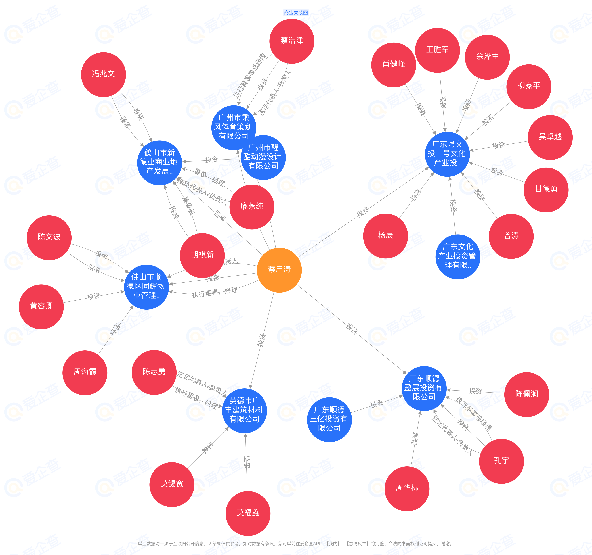

⚠ 案件概述
本案是一起由五名被告发人精心策划、分步实施的虚假诉讼案件。以下是案件核心要点。
犯罪造成的严重后果
| 财产损失 | 超过 200万元人民币（仲裁标的177万+利息+房产查封） |
| 人身限制 | 被限制高消费 超过2年，无法购买机票 |
| 人生遗憾 | 员昊、邱千依夫妻因被限高无法乘机回国，邱千依错失与外公临终最后告别的机会 |
一目了然：仲裁员洪华全如何枉法裁决
| 合同明确约定 | 追究赔偿责任，必须先证明"违规滥用借款"（第三条第2项） |
| 蔡启泳代理律师 | 从未指控员昊、邱千依"违规滥用借款"，没有提交任何挪用证据 |
| 仲裁庭全程 | 从未询问员昊、邱千依是否违反合同中的违约条款 |
| 仲裁员洪华全 | 故意跳过合同约定的前提条件，直接判决连带责任177万元 |
致命问题：既然蔡启泳自己都没指控我挪用、也没有提交挪用证据，仲裁庭也没有审理违约条款——凭什么判我承担违约责任？
仲裁裁决书原文引述 —— 证明仲裁员如何跳过合同条款
【合同原文】借款协议第二条第5款：
"乙方承诺...且乙方需每周末向甲方报告银行余额情况。否则，属乙方违约，应按第三条第2项处理。"
（合同明确定义：乙方 = 千路商事株式会社（公司），不是个人）
【裁决书第29页原文】仲裁员洪华全这样写：
"《借款协议》中约定被申请人千路商事株式会社、员昊、孙万鹏、邱千依需每周末向案外人罗建峰报告银行余额情况，否则，属于四被申请人违约"
⚠️ 问题：合同写的是"乙方"（公司），仲裁员却改成了"四被申请人"！
【裁决书第30页原文】仲裁员洪华全继续写：
"报告义务是一项合同义务，合同的条款明确要求四被申请人都要履行这项义务...根据《中华人民共和国民法典》第一百七十八条...被申请人员昊、孙万鹏、邱千依应当承担连带的责任。"
⚠️ 致命问题：
- 合同根本没有写"四被申请人都要履行汇报义务"——这是仲裁员自己编的！
- 合同明确指向"按第三条第2项处理"——仲裁员完全跳过了这一条款！
- 第三条第2项要求举证"违规滥用借款"——蔡启泳从未提交任何挪用证据！
铁证：裁决书白纸黑字，仲裁员篡改合同条款、跳过违约责任认定程序，在无证据情况下直接判决177万元连带责任。
⚠ 仲裁员是"故意"而非"认知不足"——关键铁证
王奥在仲裁中6次引用借款协议第三条第2项（具体页码）：
裁决书第4页、第20页、第21页、第22-23页、第24页 —— 王奥反复引用"第三条第2项"主张员昊、邱千依应承担责任，但从未指控"违规滥用借款"、没有提交任何挪用证据
仲裁员洪华全必然听到这些引用，必然知道该条款的核心要求是证明"违规滥用借款"。
| 事实 | 证明了什么 |
|---|---|
| 王奥6次引用第三条第2项 | 仲裁员听到了这个条款，不可能不知道 |
| 第三条第2项的核心是"违规滥用借款" | 仲裁员应该审查是否存在滥用 |
| 王奥从未指控员昊、邱千依滥用 | 原告自己都没主张这个前提成立 |
| 王奥没有提交任何滥用证据 | "谁主张谁举证"——原告举证责任未完成 |
| 仲裁员直接跳过违约条款审查 | 不是"没听到"，是"听到了却故意不审" |
致命逻辑：王奥6次引用第三条第2项 → 仲裁员必然知道这个条款 → 第三条第2项要求证明"违规滥用借款" → 仲裁员必然知道这个前提 → 王奥没有指控滥用、没有举证滥用 → 仲裁员必然知道前提条件未满足 → 仲裁员仍然判决连带责任 = 故意跳过，不是认知不足
⚖ 仲裁庭意见的自相矛盾——枉法裁决的铁证
| 裁决书第25页 | 仲裁庭认定两份《借款协议》"合法有效，受法律保护" |
| 裁决书第29页 | 仲裁庭却完全不按照合同约定的违约条款（第三条第2项）进行审查，直接判决连带责任 |
致命矛盾：既然承认合同合法有效，就必须按合同约定审查违约责任。合同第三条第2项明确规定：追究赔偿责任必须以"违规滥用借款"为前提。仲裁员承认合同有效，却不按合同裁决——这是赤裸裸的枉法裁决。
⚠ 虚假诉讼的核心：欺骗执行法院
2023年湛江中院撤裁听证中已出示审计报告，该报告明确证明员昊、邱千依没有任何挪用行为，没有违反合同第三条第2项的"违规滥用借款"。
然而，蔡启泳拿着仲裁裁决去南昌中院申请强制执行时，隐匿了这份审计报告——导致南昌中院在不知情的情况下查封执行邱千依房产。
这就是虚假诉讼的本质：用隐匿关键证据的方式欺骗执行法院。
🚨 加重情节：反复多次强制执行
根据《刑法》第307条之一，"反复多次"是虚假诉讼罪的加重处罚情节。蔡启泳的行为完全符合：
| 2023年 | 向南昌中院申请强制执行，查封邱千依房产 |
| 2024年 | 再次申请强制执行，对员昊、邱千依实施限制高消费 |
| 执行标的 | 2,138,420元（人民币） |
案号：（2023）赣0111执2290号 | 两年内反复申请执行，符合"反复多次"加重情节
所有证据均来自中国境内文书，无需涉外调查：
- 借款协议（合同原文）
- 仲裁申请书（蔡启泳提交）
- 仲裁裁决书（2022湛仲字第56号）
- 审计报告（2023年湛江中院撤裁听证中出示）
- 湛江中院撤裁案卷宗（2023粤08民特113号）
⚠ 警方5分钟速览 — 案件核心
告发罪名：虚假诉讼罪（《刑法》第307条之一）
一句话概括：被告发人明知合同约定的赔偿前提条件（"违规滥用借款"）不成立，却仍发起虚假仲裁。
✅ 最清晰的切入点（合同条款版）
合同第二条第3款："乙方应于每周末向甲方报告银行余额情况。否则属乙方违约，应按第3条第2项处理。"
合同第三条第2项："不得将借款用于与乙方经营无关的用途，及违规滥用借款，否则甲方有权...要求违规方承担相应的赔偿责任。"
| 审计报告日期 | 2020年5月22日 — 结论："没有确认到相关事实"（即没有违规滥用） |
| 仲裁申请日期 | 2022年7月8日 — 比审计报告晚2年多 |
| 仲裁申请书 | 没有任何"违规滥用借款"的指控和证据 |
➜ 结论：蔡启泳/王奥明知前提条件不成立，仍发起虚假仲裁，构成虚假诉讼罪。
犯罪闭环（30秒理解）：
| 第一步 | 切断信息渠道 — 凃云峰转走全部财务资料（11.9）→ 通知供应商只能找凃云峰（11.19）→ 邓桂燕停止汇报（11.28）→ 股东会变更所有密码（12.2）→ 免除员昊董事席位（12.12）—— 员昊在客观上已完全不可能获取任何公司信息 |
| 第二步 | 捏造事由诬告 — 变更密码次日（12.3），罗建峰发律师函要求员昊"提供银行流水"。员昊已无法提供。随后以捏造的"未汇报"为由仲裁追诉 |
| 第三步 | 给自己免责 — 蔡启泳在仲裁中放弃追诉凃云峰（法定代表人、合同约定的义务执行人）、吕伟麟、蔡启涛，仅追诉员昊等三名小股东。切断信息渠道的人全部被免责，受害人被追诉 |
六条最有力的铁证：
| # | 证据 | 证明了什么 |
|---|---|---|
| 1 | 2019年12月14日语音录音（2019年12月14日谈话语音录音） 蔡启涛、吕伟麟代替罗建峰和凃云峰向员昊提出326万元买断条件 | 一条录音同时证明四项关键事实： • 四人共谋：蔡/吕代替罗/凃谈判，四人构成统一阵营 • 非破产：应收款120多万+16台车约100万=220万资产 • 犯罪动机：买断被拒后转向虚假诉讼（"买不成就告"） • 审计操控：员昊要求换审计师被拒，蔡启涛承诺6年未兑现 |
| 2 | 微信群记录（罗建峰在财务群8个月回复"收到，七月业绩增长明显"） | 罗建峰在仲裁中声称"2019年4月后无法获知财务"——其本人微信发言直接推翻此陈述 |
| 3 | 审计报告隐匿3年（2020年出具，2023年才在撤裁听证会提交） | 被告发人已持有完整财务数据，却在仲裁中以"不了解财务"虚假陈述——主观故意的直接证据 |
| 4 | 12月2日变更密码 → 12月3日律师函（24小时精确衔接） | 先切断信息渠道，次日要求提供信息——时间配合排除偶然 |
| 5 | 吕伟麟双向代付（代罗建峰付借款1000万日元 + 代蔡启泳付律师费5000元） | 原被告之间资金往来——恶意串通的典型客观指标 |
| 6 | 选择性放弃追诉凃云峰（法定代表人、62.5%股东、合同约定的义务执行人） | 合同义务执行人被免责，无义务的小股东被追诉——违反正常债权人行为 |
管辖权依据：
根据《公安机关办理刑事案件程序规定》第十五条，犯罪行为发生地（湛江仲裁委员会）和犯罪结果发生地（南昌市青山湖区——邱千依房产被查封执行地，案号（2023）赣0111执2290号）的公安机关均有管辖权。本案虚假诉讼行为发生在湛江、犯罪结果发生在南昌，受案公安机关具有法定管辖权。
具体侦查请求：
• 请求调取罗建峰、蔡启泳、吕伟麟的微信聊天记录（公安有权依法调取，可获取五人之间的直接通谋证据）
• 请求冻结凃云峰、吕伟麟、蔡启涛在中国境内的房产及银行账户（凃云峰在中国拥有多处高档无贷款房产；吕伟麟系千路商事41%最大股东且代付能力极强（已代罗建峰支付1000万日元、代蔡启泳支付律师费）；蔡启涛拥有上千万元资产）
• 请求对蔡启泳进行讯问（作为仲裁申请人，直接实施了虚假诉讼行为）
• 请求对谭永琴进行询问（邓桂燕的下属，负责千路商事日常财务统计工作，知情人——可证实财务汇报的实际执行情况）
• 请求对邓桂燕进行询问（吕伟麟指派的财务人员，2019年11月28日突然停止汇报——系接到指令配合切断信息渠道的关键执行者，同时担任吕伟麟和罗建峰名下7家公司的财务负责人）
• 请求中止执行（2023）赣0111执2290号案件，待刑事案件侦查终结
⚠ 为什么这是刑事案件而非民事纠纷？
民事纠纷是"对合同理解不同"——本案是蓄意捏造与客观事实相反的虚假陈述：罗建峰在微信群里回复"收到，七月业绩增长明显"，却在仲裁中声称"2019年4月后无法获知财务"；被告发人已持有完整审计报告，却以"不了解财务"为由起诉并故意隐匿该报告3年；先转走全部财务资料、变更全部密码、解除员昊职务，再以"员昊不提供财务信息"为由起诉——先切断信息渠道再捏造事由诬告，这是"制造事实"，不是"利用事实"。本案告发的是被告发人向仲裁庭捏造事实、提交虚假陈述的犯罪行为，而非仲裁庭的法律适用问题。仲裁员洪华全明知合同中约定了违约条款，在员昊和邱千依没有任何违反违约条款的情况下，直接跳过违约条款，强行认定连带责任，枉法裁决行为明确。
关于"仲裁是否构成虚假诉讼"：本案仲裁裁决已进入法院强制执行（(2023)赣0111执2290号）。根据法释〔2018〕17号第一条第三款、法发〔2021〕10号第四条第（六）项、2022年追诉标准第78条，"向人民法院申请执行基于捏造的事实作出的仲裁裁决"明确属于虚假诉讼罪中的"以捏造的事实提起民事诉讼"。最高法刑事审判参考第1377号案例已对此作出确认。最高检2024年进一步明确："生效虚假仲裁已经得到执行的，应以虚假诉讼罪定罪处罚。"详见本页法律依据章节。
📄 刑事控告证据说明（简易版） — 可直接用于向公安机关递交的控告材料
点击查看刑事控告证据说明书（HTML）
📑 虚假陈述逐条对照表 — 裁决书中蔡启泳/罗建峰的虚假陈述 vs 客观证据，含签名笔迹鉴定，左右对照一目了然
在线查看对照表（HTML版，含最新18条对照）
📬 湛江市公安局局长信箱直投
绕过基层推诿，直达决策层。建议工作日上午投递，保留回执编号。
投递标题建议：刑事控告：五人合谋虚假仲裁，伪造签名骗取裁决，侵吞房产200余万
三管齐下：公安局长信箱 + 经侦签名伪造切入 + 检察院民事监督
凃云峰（公司法定代表人）、吕伟麟（第一大股东41%）、蔡启涛（股东10%）三人与债权人罗建峰恶意串通，通过以下手段实施虚假诉讼：
1. 诱骗入股与签字 — 以解决签证为由诱骗员昊、邱千依入股。罗建峰在入股时对员昊、邱千依而言完全陌生，系吕伟麟、蔡启涛单方面安排引入。根据第一次借款协议第二条第1项原文："丙方需按各自的股权比例筹集800万日元予乙方，以充实乙方的资金实力"——员昊、邱千依系公司的出资人（出借人），而非罗建峰债权的担保人。第二次借款协议（2019年4月1日）鉴于条款明确载明"公司经营状况好转"（财务数据证实：月营收55.7万元、15辆运营车辆），罗建峰对此完全知情，却以"转让公司管理权（法定代表人身份）"为诱饵骗取员昊签字，至今已逾8年（截至2026年）未兑现承诺
2. 转移财务 — 凃云峰以"公司审计"为名签署《业务指示书》，将全部公司资产移交给西畑诚亮（不动产公司）保管。当日公认会计士长岛广明在场，此人即后来出具审计报告之人——证明凃、吕、蔡三人自始掌握全部财务数据
3. 架空排挤 — 2019年10月公司月营收达110万元人民币。召开股东会时员昊到场却被排斥于议程之外，离场后秘密继续后半段会议；仅24小时后罗建峰即发律师函追索财务数据；随后强行解除受害人全部职务，切断信息来源
4. 虚假诉讼 — 将债权虚假转让给蔡启泳（蔡启涛之兄弟），选择性地仅向受害人提起仲裁，放弃对实际违约人凃云峰的追诉。仲裁中隐匿审计报告，以虚假的"不了解财务状况"获取错误裁决——该报告直至2023年湛江中院撤裁听证时才曝光
5. 侵吞资产 — 变卖公司全部固定资产据为己有后失踪
2018年初，凃云峰与邱千依共同创立千路商事株式会社。吕伟麟和蔡启涛以"提供创业资金、解决签证问题"为由诱骗员昊等人入股。吕、蔡二人声称仅代持51%股份、不参与经营，并承诺将公司法人身份转交员昊。
员昊和邱千依不仅是股东，也是公司的出资人。根据第一次借款协议第二条第1项，丙方（全体六名股东）需按各自股权比例筹集800万日元予公司以充实资金实力。员昊和邱千依在第一次借款协议上签字，是因其本身即为公司的出资方，而非罗建峰债权的连带担保人。两份借款协议中均不存在任何课以员昊、邱千依连带还款责任的条款。
第二次借款协议（1000万日元）的签订背景是：员昊与邱千依依据《股份转让协议》支付了入股款、按比例向公司出借了资金，但凃云峰、吕伟麟、蔡启涛迟迟不履行将公司管理权（法定代表人身份）转让给员昊的义务。第二次借款协议的实质是督促对方兑现承诺 — 即在充实公司资金后将管理权移交员昊。员昊和邱千依的签字动机在于此，且该协议的全部义务条款均以"乙方"（千路商事株式会社）这一有限责任公司法人人格为约束对象，不含任何指向员昊、邱千依个人的连带还款条款。然而至今已逾8年（截至2026年），对方不但未兑现转让管理权的承诺，反而联合罗建峰对员昊和邱千依发起恶意虚假诉讼，通过仲裁追偿约213万元人民币。
两份借款协议第二条第5/3项均原文载明："乙方承诺，在乙方未取得绿牌车公司资格前，不得动用甲方借入的资金，且乙方需每周末向甲方报告银行余额情况。否则，属乙方违约"。
此条款包含两个关键法律要素：
（一）义务主体是"乙方"（千路商事株式会社），而非"丙方"（股东个人）。合同使用"乙方需"和"属乙方违约"的明确表述，汇报义务由公司法人承担，凃云峰作为法定代表人负有执行义务。员昊、邱千依作为丙方股东，从未被课以此项汇报义务。罗建峰以员昊"未提供财务数据"为由发起追诉，系将公司的法人义务移花接木给个人股东。
（二）该义务附有明确的生效前提条件："在乙方未取得绿牌车公司资格前"。该条款以"在乙方未取得绿牌车公司资格前"统领整句，限定条件适用于"且"连接的两项义务（不得动用资金、需每周汇报），汇报义务与不得动用资金的义务共享同一生效前提。千路商事株式会社于2018年11月6日已正式取得绿牌车公司营业资格，自该日起汇报义务即告消灭。第二次借款协议签订于2019年4月1日，虽然沿用了相同条款文本，但绿牌已于签约前5个月取得，该条款在第二次协议签订时即已不具备生效条件。
（三）即使汇报义务尚未消灭，也已被实际履行。千路商事已建立完整的财务汇报机制：工作人员每日在微信群发布当日收入情况，所有以千路商事株式会社日本员工每日将支出数据发送给财务人员邓桂燕，邓桂燕整理为含银行余额的财务报表后发布在群中——罗建峰本人在群内查阅并回复。合同要求"每周末向甲方报告银行余额情况"——邓桂燕的财务报表中就包含银行余额，该义务已被实际履行。且邓桂燕系吕伟麟、蔡启涛指派的财务人员——汇报渠道由对方自己安排，2019年11月28日邓桂燕突然停止汇报，系对方主动切断自己建立的汇报机制后，反称"未收到汇报"。
（四）即使汇报义务存在且未被履行，违约后果也已被合同明确限定。合同第二条第5款明确规定：违反汇报义务的后果是"应按第三条第2项处理"。第三条第2项原文："乙方及丙A、丙B、丙C、丙D应按审慎、合理和经济原则使用甲方的借款，不得将借款用于与乙方经营无关的用途及违规滥用借款，否则，甲方有权立即停止追加借款并要求违规方承担相应的赔偿责任。"这意味着：追究赔偿责任的前提是证明存在"违规滥用借款"行为。然而：蔡启泳从未指控员昊、邱千依"违规滥用借款"（见仲裁申请书全文）；仲裁过程中没有提交任何挪用证据；审计报告结论："没有确认到相关事实"（即没有挪用）。仲裁员洪华全完全跳过合同约定的"按第三条第2项处理"的违约认定程序，在蔡启泳从未指控挪用、没有任何挪用证据的情况下，直接强行裁决员昊、邱千依承担177万元连带责任——公然践踏合同约定，枉法裁决行为确凿。
（五）凃云峰的配合行为——将公司债务转嫁个人。凃云峰作为法定代表人、公司汇报义务的实际执行人、持有公司62.5%股权的最大股东：故意不出席仲裁庭审；故意缺席败诉；故意拒不以公司资产偿还罗建峰债务（公司有220万资产，债务仅180万）；配合蔡启泳将本应由公司承担的债务全部转嫁到员昊、邱千依个人身上。这不是"裁判失误"——这是有预谋、有分工的共同犯罪行为。
罗建峰以一项义务主体为公司（而非个人）、义务已因绿牌取得而消灭、即使存在也已被实际履行、且违约后果被合同明确限定为需举证"违规滥用借款"的条款为基础，在无任何挪用指控和证据的情况下，对员昊和邱千依个人发起追诉；仲裁员洪华全公然跳过合同违约条款直接强判连带责任；凃云峰故意败诉配合转嫁债务——构成典型的虚假诉讼共同犯罪。
一、第一次借款协议中员昊、邱千依的法律地位
第一次借款协议第二条第1项明确约定："丙方同意，在签订本协议15天内，丙方需按各自的股权比例筹集800万日元予乙方，以充实乙方的资金实力。"据此，员昊、邱千依是公司的出资人（出借人），其签署借款协议的法律基础是自身也向公司投入了资金。两份借款协议中，不存在任何课以员昊、邱千依对罗建峰债权承担连带还款责任的条款。协议中涉及义务履行的条款均以"乙方"（千路商事株式会社）为约束对象——第二条第5项"乙方需每周末向甲方报告银行余额情况，否则属乙方违约"；第三条第2项"乙方及丙A、丙B、丙C、丙D应按审慎、合理和经济原则使用甲方的借款"（约束的是资金使用行为，非还款责任）。所有义务均指向公司法人人格，无任何条款将员昊、邱千依个人列为连带还款责任人。
二、第二次借款协议中员昊、邱千依的签字动机
员昊与邱千依依据《股份转让协议》支付了入股款并按比例向公司出借资金，但凃云峰、吕伟麟、蔡启涛迟迟不履行转让公司管理权的义务。第二次借款协议的实质功能是约束对方在充实公司资金后，将管理权移交给员昊。员昊和邱千依的签字动机在于此，并非为罗建峰的债权提供任何形式的担保。该协议鉴于条款第2项明确载明："2018年6月28日收到甲方提供的2000万日元的借款，并全部用于公司运营管理投入。现依据公司经营状况好转，继续安排新的借款借入"——证明罗建峰在签订第二次协议时完全知晓公司经营状况良好（2019年4月财务数据：月营收55.7万元人民币、15辆运营车辆、银行余额59.5万元）。且签约前，罗建峰本人及其家人刚从日本实地考察完千路商事的出租车运营业务后回国。该协议同样不含任何指向员昊、邱千依个人的连带还款条款。此外，该协议第二条第3项虽沿用了"乙方需每周末向甲方报告银行余额"条款，但其前提条件"在乙方未取得绿牌车公司资格前"已于2018年11月6日成就，该义务在第二次协议签订时（2019年4月1日）即已消灭。
三、虚假诉讼的本质
在两份借款协议均无连带还款条款的前提下，罗建峰通过虚假陈述和歪曲合同条文，误导仲裁庭裁定员昊、邱千依对千路商事株式会社的债务"承担连带赔偿责任"。其实质是通过虚假诉讼，将公司的出资人（出借人）变为对第三人债权的连带还款责任人 — 完全突破了有限责任公司法人人格独立原则，在法律实践中史无前例。至今已逾8年（截至2026年），管理权从未转让，对方反而利用员昊的签字发起恶意追诉。
👥 涉案人员
被告发人七人（含仲裁代理律师王奥、仲裁员洪华全）与受害人之间的关系及各自角色。
被告发人（涉嫌犯罪）
凃云峰
千路商事株式会社 法定代表人持股：7.35%
核心行为：作为公司唯一法定代表人，掌管全部财务资料。合同约定"乙方需"汇报的义务由其作为法定代表人执行，却故意不履行，将财务文件移交第三方，欺骗员昊声称"每周认真汇报"。2019年1月秘密成立新公司千寻合同会社。
法定代表人 乙方汇报义务执行人 千寻合同会社法人吕伟麟
千路商事株式会社 第一大股东持股：41%
核心行为：声称不参与经营但实际全程参与。第二次借款由其账户代罗建峰支付。在包头中院案件中代蔡启泳支付律师费5000元。与蔡启涛持有合计51%股份，有能力但故意不通过合法途径获取公司财务资料。天眼查显示其与蔡启泳共同经营佛山市顺德区房悦居信息服务有限公司，并通过孔宇与蔡启涛共享多家顺德公司的商业网络。
第一大股东 代付借款 代付律师费 与蔡启泳同公司蔡启涛
千路商事株式会社 股东持股：10%
核心行为：声称不参与经营但实际参与。与凃云峰、罗建峰共同成立千寻合同会社。蔡启泳（新债权人）为其兄弟，涉嫌安排虚假债权转让。长期频繁往返日本与中国。
股东 蔡启泳之兄弟 千寻合同会社成员罗建峰
原债权人关系：吕伟麟、蔡启涛的好友
职业背景：中国注册会计师，曾任中国联塑集团执行董事（百度罗建峰资料）——专业审计出身，完全清楚审计报告的完整格式和内容
核心行为：明知"乙方"（公司）未履行汇报义务（且该义务在绿牌取得后已消灭）却拖延9个月才发律师函。将债权以不合理对价转让给蔡启泳。在仲裁中做虚假陈述，将"乙方"的义务偷换为个人义务，声称"唯一联系人是4名中国股东"、"不了解绿牌车资格情况"。与凃云峰共同成立千寻合同会社。
原债权人 中国注册会计师 虚假陈述 千寻合同会社成员蔡启泳
新债权人（蔡启涛之兄弟）关系：蔡启涛的兄弟
核心行为：以不合理对价（实现债权后支付取得金额20%）从罗建峰处获得债权。以新债权人身份向湛江仲裁院提起仲裁，选择性仅追诉员昊、邱千依、孙万鹏，放弃追诉凃云峰、吕伟麟、蔡启涛。天眼查显示其与吕伟麟共同经营佛山市顺德区房悦居信息服务有限公司（蔡启泳任法人代表，吕伟麟任职）——仲裁中的"原告"与"被告方"实为同一公司的同事。
新债权人 选择性追诉 与吕伟麟同公司王奥
蔡启泳代理律师（兰迪律师事务所）身份：上海兰迪（深圳）律师事务所律师
核心行为：在仲裁中6次引用借款协议第三条第2项主张员昊、邱千依应承担责任，但从未指控"违规滥用借款"、没有提交任何挪用证据。湛江中院撤裁听证中已出示审计报告证明没有挪用，却仍去南昌中院申请执行并隐匿该报告——欺骗执行法院。
致命矛盾：既然引用第三条第2项追责，就必须证明"违规滥用借款"——王奥6次引用却从不举证，说明明知前提条件不成立仍发起诉讼。
代理律师 6次引用却不举证 明知故犯洪华全
湛江国际仲裁院 仲裁员身份：（2022）湛仲字第56号案首席仲裁员
核心行为：在王奥6次引用第三条第2项的情况下，仲裁员必然知道该条款要求证明"违规滥用借款"才能追责。但洪华全故意跳过这一前提条件，在蔡启泳从未指控挪用、没有任何挪用证据的情况下，直接判决连带责任177万元。
不是"认知不足"，是"故意为之"：王奥6次引用 → 仲裁员必然听到 → 知道前提条件 → 仍然跳过 = 故意枉法裁决
仲裁员 篡改合同条款 跳过违约前提 涉嫌枉法裁决告发人（受害人）
员昊
千路商事株式会社 股东/协议约定社长（凃云峰始终未办理法人代表变更登记）持股：14.7%
受害情况：被诱骗入股约13.5万元人民币，并按股权比例向公司出借资金（800万日元中的14.7%份额）。第二次借款协议因对方承诺"转让管理权（法定代表人身份）"而签字，至今已逾8年未兑现。被强行解职、支付宝被冻结5800元。承担律师费21万元。被列入限制消费名单。
受害人 告发人 公司出资人邱千依
千路商事株式会社 股东/董事持股：13.475%
受害情况：被诱骗入股，按股权比例向公司出借资金（800万日元中的13.475%份额）。被强行解职。房产被执行，价值139万元人民币。被列入失信被执行人名单及限制消费名单。
受害人 告发人 公司出资人凃云峰、吕伟麟、蔡启涛合计持股58.35%，构成公司绝对控股方。罗建峰系三人之密友，2019年1月与凃云峰、蔡启涛共同出资设立千寻合同会社。蔡启泳系蔡启涛之兄弟，以零预付对价受让债权后选择性仅向被害人提起仲裁。吕伟麟在包头中院确认仲裁裁决无效案件中代蔡启泳支付律师费。上述五人之间存在密切的人身关系、经济利益关联及共同行为特征，符合《民法典》第一百五十四条规定的恶意串通构成要件。
仲裁程序中的关键人物：代理律师王奥在仲裁中6次引用第三条第2项追责，却从未指控"违规滥用借款"、未提交任何挪用证据——明知前提条件不成立仍发起虚假诉讼；仲裁员洪华全在听到王奥6次引用后，故意跳过该条款的前提要求，在无证据情况下直接判决连带责任——不是认知不足，是故意枉法裁决。
📅 案件时间线
以下按时间顺序梳理案件全部事实经过。标红条目为具有犯罪构成要件特征的关键节点，各节点之间呈现因果递进的逻辑关系。
公司创立与入股
凃云峰与邱千依共同创立千路商事株式会社。吕伟麟、蔡启涛以"提供资金、解决签证"为由邀请员昊等人入股。吕、蔡声称仅代持51%股份，不参与经营。员昊投资约236万日元、邱千依投资约214万日元（均转入凃云峰个人账户，因公司当时尚无对公账户），另按股权比例向公司出借资金（800万日元份额）。
关键事实一：《股份转让协议书》第四条第一项约定"乙方（吕伟麟、蔡启涛）负责安排友好第三方为公司提供不超过5000万日元的经营资金借款"。然而，乙方从未安排过该5000万日元借款——最终仅通过罗建峰提供了3000万日元，远低于承诺金额。
关键事实二：罗建峰在入股时对员昊、邱千依而言是完全陌生的人，系由吕伟麟、蔡启涛单方面安排引入。员昊和邱千依在签署借款协议时并不认识罗建峰，系基于对吕伟麟、蔡启涛的信任才同意签字。此事实与仲裁中罗建峰声称"唯一联系是4名中国股东"、暗示与员昊关系密切的陈述形成直接矛盾。
01股份转让协议书.pdf — 第四条第一项"安排5000万日元借款" 02出资转入凃云峰个人账户未进行股份变更登记
凃云峰以"需要继续使用法人签证"为由，故意不履行股权变更登记义务，擅自将自身登记为公司唯一代表取缔役（法定代表人），致使员昊、邱千依虽已实际出资却未被列入法人登记。此系以信息不对称与治理权垄断为手段、以非法占有他人出资为目的的关键步骤。
营业执照藤本第一次借款协议签订（2000万日元 + 丙方出资800万日元）
在凃、吕、蔡三人安排下，公司向罗建峰借款2000万日元。同时，协议第二条第1项约定：丙方（全体六名股东）需按各自股权比例筹集800万日元予公司以充实资金实力。员昊和邱千依正是因为自己也向公司出借了资金，才在借款协议上签字。协议明确规定：凃云峰负责每周末向罗建峰汇报银行余额（取得绿牌前）。协议约定员昊担任社长，借款未还清前任期不得结束。但凃云峰从未办理代表取締役（法人代表）变更登记，员昊始终未成为法律意义上的法人代表。
2018年第一次借款协议 02出资转入凃云峰账户公司取得绿牌许可
千路商事株式会社成功取得绿牌车许可。合同约定的"乙方需每周末向甲方报告银行余额情况"义务附有前提条件"在乙方未取得绿牌车公司资格前"——自此日起，该汇报义务按合同约定已告消灭。
绿牌许可证 绿牌许可证翻译件罗建峰亲赴日本体验绿牌车服务
罗建峰亲自来日本体验了公司的绿牌车服务，证明其对公司取得绿牌许可知情。与后续仲裁中"不了解绿牌车资格批准情况"的陈述直接矛盾。
罗建峰在日本证明照片秘密成立千寻合同会社 — 出资人全部指向被告发人利益共同体
在未告知员昊等股东的情况下，秘密成立新公司"千寻合同会社"（日本法务局登记证明：2019年2月21日成立），凃云峰任业务执行社员及代表社员（法人代表），注册资金900万日元，经营不动产业务。注册地址与千路商事完全相同（泉大津市助松町1-15-19），凃云峰直接在千路商事办公室内运营千寻。
银行存折及注册备案资料揭示出资人名单：凃云峰315万円（35%）、吴铭刚315万円（35%，吕伟麟的表哥，二人在中国合开多家公司）、罗建峰124.2万円（13.8%）、孔宇72.9万円（8.1%，吕伟麟和蔡启涛在广东顺德的商业合作伙伴）、蔡启涛72.9万円（8.1%）。五名出资人全部为被告发人本人或其直系亲属/密切商业伙伴，不存在任何独立第三方投资人。吕伟麟通过表哥吴铭刚间接出资最大金额，系千寻的实际最大隐性受益人。
此事实具有三重法律意义：（1）证明五名被告发人之间存在超越普通借贷关系的深度利益关联——共同出资成立不动产公司；（2）吕伟麟作为千路商事41%最大股东，却未以本人名义出资千寻，而是安排表哥兼中国合资伙伴吴铭刚代持——千寻与千路商事系同一法人代表（凃云峰）控制、股东高度重合的关联公司，吕伟麟刻意规避说明其深知千寻的设立不可让员昊等人知悉；（3）凃云峰已另有法人身份，完全具备将千路商事代表取缔役身份移交员昊的客观条件，其拒不兑现管理权转让承诺系出于主观故意。
千寻公司资料（含银行存折及注册备案资料） 千寻合同会社出资人信息 千路株式会社司藤本.pdf — 千路商事株式会社履历事项全部证明书：代表取締役 涂云峰，资本金800万円 千寻合同会社藤本.pdf — 千寻合同会社履历事项全部证明书：代表社員 涂云峰，资本金900万円，2019年2月21日成立 西田诚亮公司藤本.pdf — 株式会社ウエステージ（Westage）履历事项全部证明书：代表取締役 西畑誠亮，资本金2000万円第二次借款协议签订（1000万日元）— 以转让管理权为诱饵
签约前，罗建峰本人及其家人刚从日本考察完千路商事株式会社的出租车业务回国，对公司经营状况完全知情。协议确认第一笔借款"全部用于公司运营管理投入"且"公司经营状况好转"。公司2019年4月财务数据显示：月营收约557,333元人民币，运营车辆15辆（车辆资产价值约155.2万元人民币），银行余额约595,352元人民币——公司经营状况确实良好，完全具备偿债能力。凃云峰、吕伟麟、蔡启涛三人向员昊承诺：该借款完成后将公司法定代表人身份及管理权正式转让给员昊。员昊基于此承诺才在第二份借款协议上签字，且协议中不含任何员昊的连带还款责任条款。然而至今已逾8年（截至2026年），法定代表人身份从未转让，管理权承诺沦为一纸空文，反而成为对方发起恶意诉讼的工具。借款由吕伟麟账户代罗建峰支付，证明吕、罗关系密切。
2019.04千路财务状况表 — 月营收557,333元、15辆运营车辆、银行余额595,352元 2019年第二次借款协议 吕伟麟代付凭证 吕伟麟代付声明书 罗建峰在日本证明照片凃云峰停止财务汇报
凃云峰单方停止向全体股东汇报公司资产状况。同年10月起，邓桂燕（吕伟麟、蔡启涛指定聘请的财务人员）亦停止月度财务报告。员昊试图聘请新财务人员介入，但该人员立即被凃云峰以"唯一经营管理者"身份开除。此举系对被害人实施系统性信息封锁的开端。
11月9日之前：公司财务信息完全透明。邓桂燕作为吕伟麟、蔡启涛、凃云峰、罗建峰、孔宇、吴铭刚集团共同的财务负责人，自2019年3月起每天在罗建峰所在的财务微信群中汇报资金日报表，每月提供完整银行流水和财务报表。罗建峰在群中亲口回复"收到，七月业绩增长明显"并主动审核报表。公司财务状况对全体股东（包括罗建峰本人）完全公开透明。
11月9日之后：凃云峰以审计为名将全部财务资料转移给不动产商人西田诚亮（Westage），公认会计士长岛广明当日在场。随后在44天内完成了五步系统性信息封锁（详见时间线），将员昊和邱千依彻底排除在公司信息体系之外。
微信聊天证据：员昊方完全有信心通过微信聊天记录数据公证补充上述全部财务汇报记录，证明罗建峰在仲裁中声称"自2019年4月以后不了解千路商事财务状况"系彻头彻尾的虚假陈述。
⚠ 请警方特别注意以下两人的角色：
• 西田诚亮（にしだ せいりょう / 西畑诚亮）：株式会社Westage代表取缔役，不动产商人。凃云峰将千路商事全部核心资产交给此人"保管"，但16天后千寻合同会社即为其公司的2000万日元债务提供担保——这是利益交换关系，不是保管关系；
• 长岛广明（ながしま ひろあき）：公认会计士（日本注册会计师）。11月9日资产转移当天在场，后于2020年5月出具审计报告。从资产转移到审计报告出具，长岛广明自始至终掌握全部公司财务数据——这些数据从未向员昊和邱千依披露。
以"公司审计"为名恶意转移全部公司资产（本案最关键节点）
公司法定代表人凃云峰以"公司审计"为名，签署正式《业务指示书》并加盖公司印章及个人手印，指示孙万鹏将千路商事株式会社全部核心资产移交给株式会社ウエステージ（Westage不动产公司）代表取缔役西畑诚亮保管。员昊、邱千依当日不在日本（在中国，护照出入境记录可证明）。
《业务指示书》明确列明移交物品清单：
• 千路商事株式会社实印及银行印
• 全部预金存折（りそな银行泉大津支店普通预金通帐3本、近畿大阪银行本店营业部普通预金通帐1本）
• 全部现金卡、借记卡及网上银行令牌
• 全部信用卡
• 小口现金金库及钥匙（内含公司营业现金）
西畑诚亮当日签署《预り证》（保管证）确认接收上述全部物品，日期为2019年11月9日。西畑诚亮在《预り証》中逐项手写确认收到：小口现金金库及钥匙、里索纳银行泉大津支店普通预金通帐3册（口座番号0375969）、近畿大阪银行本店营业部普通预金通帐1册（口座番号0100689）、千路商事株式会社代表取缔役印及银行印及橡皮印、里索纳银行キャッシュカード及デビットカード及token、近畿大阪银行キャッシュカード——签字按手印。
办公室与车库相连的关键事实：千路商事公司办公室与车库相连，必须经过车库才能进入办公室（可提供现场照片证明）。吕伟麟2019年11月9日到达公司时，必然经过停放绿牌车辆的车库——他亲眼见证了绿牌车的存在和运营状态，却在此后配合蔡启泳在仲裁中声称罗建峰"对绿牌车申请状况不知情"。
极其关键的事实：当日同时到场的还有公认会计士（注册会计师）长岛广明。此人即后来于2020年5月22日出具千路商事株式会社审计报告的同一人。这证明：所谓"公司审计"从2019年11月9日即已启动，凃云峰、吕伟麟、蔡启涛三人从一开始就掌握着全部公司财务数据，并在此后委托长岛广明完成了覆盖公司一年经营期的完整审计报告。
凃云峰选择西畑诚亮（Westage）"保管"资产的真实原因：不动产登记证明显示，千寻合同会社（凃云峰任法人代表）与Westage不动产公司早已通过共同担保目録第561号将各自名下的7处不动产捆绑为同一笔3,025万日元贷款的共同担保。千寻与Westage之间存在深度金融合作和利益捆绑关系，西畑诚亮绝非独立第三方，而是凃云峰的商业合作伙伴。以"审计保管"为名将公司全部核心资产交给利益关联方，本质是关联方之间的恶意资产转移。
凃云峰签章《业务指示书》— 指示将全部资产移交西畑诚亮 西畑诚亮签字《预り证》（保管证）— 2019年11月9日 业务指示书与保管证 — 《業務指示書》及《預かり証》日语原件 当日现场人名片 — 西畑诚亮（Westage不动产）、长岛广明（公认会计士）、田中贵之（公认会计士） 员昊、邱千依护照出入境记录（证明当日在中国）📷 2019年11月9日现场照片及录像


注：上述照片和录像均为2019年11月9日当天在日本现场拍摄。员昊和邱千依当日不在日本（在中国），护照出入境记录可以证明。凃云峰、吕伟麟等人趁二人不在场，擅自将公司全部核心资产移交第三方。
吕伟麟、凃云峰、蔡启涛以"审计"为名私设审判环境 — 员昊等三人携律师到场配合
18点，吕伟麟、凃云峰、蔡启涛要求员昊等三人前往大阪府大阪市西区西本町１-２-１４岡島ビル（西田诚亮的办公室）参加审计会议。员昊等三人携带律师准时到达。
到场后发现：会议地点不在千路商事公司办公室，而在陌生人的办公室；对方要求员昊等三人逐一进入会议室接受单独审查；凃云峰等三人携带众多陌生人、西田诚亮及长岛会计师事务所均在场。更不合理的是，对方在"审计会议"中要求员昊等三人出示日本身份证——没有任何审计需要股东出示个人身份证件，这明显违背股东平等原则。
员昊等三人的律师与凃云峰沟通后，以员昊等三人生命安全无法得到保障为由，劝说员昊等人离开。员昊等人是股东，不是犯罪分子，对方无权进行单独审查式会议。
员昊等三人准时到场、携带律师积极配合——这不是"不配合审计"，是对方将审计变成了私设审判。
2019年11月14日員昊与凃云峰微信记录 2019年11月14日員昊与吕伟麟微信记录员昊等三人递交正规病假条 — 反被蔡启涛诬陷"擅离职守"
11月16日，员昊等三人向凃云峰（代表取缔役）递交病假条，选择称病在家等待审计结束后再沟通。原因是：11月12日邓桂燕突然停止在微信群发送财务报告（资产转移后第3天），员昊等三人考虑这可能是财务陷阱——既要审计，又要上班，但公司已无任何财务资料和资金，员昊等三人为避嫌选择正规请假。
然而11月17日（星期一），蔡启涛在千路股东群中以"今天是星期一，员昊等三人不来公司上班，也不配合审计"为由诬陷员昊等三人擅离职守。正规的请假手续被歪曲为"不配合"。
凃云峰加盖公司公章通知全部供应商：未来只能与其对接
资产转移仅10天后，凃云峰即以千路商事株式会社名义、加盖公司公章，向全部供应商发出书面通知，要求所有供应商未来只能与凃云峰本人对接。此举进一步切断了员昊等人与公司业务方的一切联系。
通知书.pdf — 2019年11月19日凃云峰加盖公章通知供应商员昊方主动准备股东会汇报材料 — 推翻"不配合审计"指控
在凃云峰转移全部资产仅2周后，员昊方面积极准备了完整的股东会汇报材料，包括：
• 11月23日：编制《千路公司汇报资料》，梳理公司经营状况
• 11月27日：编制长达51页的《股东会汇报资料》，全面汇报公司自成立以来的经营数据、财务状况、业务发展、人事安排等全部情况
证据意义：一个"不配合审计"的人，不会花大量时间编写51页详尽的汇报资料。这两份文件直接证明员昊方面不仅没有逃避责任，反而在积极配合并主动披露公司全面信息。蔡启泳在仲裁中声称的"不配合审计"系彻头彻尾的虚假陈述。
千路公司汇报资料 — 2019年11月23日编制 股东会汇报资料 — 2019年11月27日编制，共51页千寻合同会社为Westage提供不动产担保 — 资产转移仅16天后的利益交换
距离11月9日凃云峰将千路商事全部资产移交给西畑诚亮（Westage）仅16天，凃云峰控制的千寻合同会社即以名下5处不动产（天下茶屋東4块土地+1栋建物）为株式会社Westage（西畑诚亮控制）的2,000万日元债务设定根抵当权担保。大阪法务局全部事项证明书乙区顺位3明确记载：令和1年11月25日受付第52865号，债务者为株式会社ウェステージ，根抵当权者为大阪シティ信用金库，共同担保目録(は)第7533号。
法律意义：此证据彻底揭穿了"审计保管"的谎言——凃云峰把千路商事的资产给西畑诚亮"保管"，16天后千寻就为西畑诚亮的Westage提供了2,000万日元的不动产担保。这不是保管关系，这是利益交换关系。凃云峰利用千路商事法定代表人和千寻合同会社法人代表的双重身份，以千路商事的资产为筹码，换取Westage在融资担保方面的商业利益，这不是保管关系，这是利益交换关系——进一步证明资产转移是虚假诉讼计划的组成部分。
千寻与westage的共同担保房产证.pdf — 乙区顺位3：2019年11月25日为Westage 2000万日元债务设定担保 共同担保目録(は)第7533号 — 千寻5处不动产为Westage债务提供共同担保邓桂燕突然停止财务汇报 — 恰在资产转移后第三天
自2019年3月起在财务对账微信群内每日汇报的邓桂燕，于11月12日突然停止财务汇报——这恰好是吕伟麟和凃云峰转移公司全部资产后的第三天。其手下阿岚最后一次汇报为11月21日。邓桂燕系吕伟麟、蔡启涛安排的财务人员，同时担任吕伟麟和罗建峰名下7家公司的财务负责人，其突然停止汇报只可能是接到了吕伟麟、蔡启涛的指令——汇报渠道由对方自己安排、由对方主动切断，之后反称"未收到汇报"。
从每周升级为每日汇报，持续8个月，罗建峰在群中频繁互动——却在仲裁中声称"一直没有履行汇报义务"。
第一次临时股东大会 — 以移交账户为名骗取最后知情权
此时公司经营状况极佳——截至2019年10月，千路商事月营收已达到约110万元人民币。凃云峰、吕伟麟、蔡启涛主动召集第一次临时股东大会。在员昊、邱千依未参加的情况下，要求员昊、邱千依、孙万鹏移交公司全部个人平台和公司名义所有的全部账户。
凃、吕、蔡拿着这份股东会决议，去把所有交易平台和商业合作伙伴的账户密码全部变更——彻底骗取了员昊、邱千依仅剩的知情权。变更所有商业合作账户密码之后，第二天（12月3日）罗建峰就发函要求员昊和邱千依汇报公司财务状况。此等精确到小时的时间配合，绝非偶然。
股东会通知草案 — 2019年11月25日起草的召开股东会通知 2019年第一次临时股东大会 股东大会决议案 第一回临时股东大会议事录罗建峰发出律师函
在全部财务文件被恶意转移仅24天后、在凃吕蔡秘密召开股东会后半段仅24小时后，罗建峰即委托律师发出正式律师函，要求员昊、邱千依提供公司银行流水及会计账册。此时被害人已在客观上完全丧失获取任何财务资料的可能性。11月9日转移财务文件 → 12月2日秘密股东会 → 12月3日发出律师函——三个关键节点在24天内密集发生，尤其是股东会与律师函之间仅隔24小时，如此精确的时间衔接排除偶然之可能性，构成各被告发人恶意串通、事先通谋之有力证据。
罗建峰2019年12月3日律师函员昊方提交《千路公司危机解决方案》 — 再次证明积极配合
在收到罗建峰律师函的次日，员昊方面即编制并提交了《千路公司危机解决方案》，提出了详细的公司危机处置建议，进一步证明员昊方面不仅没有回避问题，反而在积极寻求解决方案。
证据意义：结合11月23日汇报资料、11月27日51页股东会汇报资料、12月4日危机解决方案，员昊方面在11月下旬至12月初连续提交了3份实质性文件。蔡启泳在仲裁中声称"不配合审计"——一个不配合的人会连续写3份详细报告吗？
千路公司危机解决方案 — 2019年12月4日编制罗建峰律师函送达员昊、邱千依
罗建峰12月3日发出的律师函于12月8日送达员昊和邱千依手中。此时员昊和邱千依已被切断一切公司信息来源——全部财务资料已于11月9日被转移，11月19日供应商被通知只能与凃云峰对接，11月28日财务汇报被停止，12月2日所有账户密码被变更。
员昊发出追款通知 — 积极行使权利的又一证据
员昊向相关方发出正式的追款通知书，就公司应收账款和个人债权主张权利。此举进一步证明员昊在收到律师函后并非消极应对，而是积极行使自身合法权利。
员昊追款通知 — 2019年12月9日发出员昊等三人委托律师发律师函 — 提出股权收购建议
孙万鹏在千路股东群中发送员昊等三人委托律师的律师函（中日文版），提出：对方可以原价收购员昊等三人的股权，或员昊等三人原价收购对方三人股权。并要求凃云峰等三位股东在出售千路商事車辆前给予答复。罗建峰在群中，不予回复。
同日蔡启涛转发罗建峰12月3日的律师通知函，说明蔡启涛、吕伟麟、凃云峰等人也收到了罗建峰的律师函。罗建峰在群中，仍不回复。
2019年12月10日員昊等三人律师函日语版第二次临时股东大会 — 免除董事席位、彻底封锁
律师函送达仅4天后，凃云峰、吕伟麟、蔡启涛再次主动召集第二次临时股东大会。召集书中明确的讨论议题为：讨论公司目前运营情况、讨论公司管理发展事宜。
但实际上，凃、吕、蔡以股东会名义免除了员昊和邱千依的董事席位，并明确指出未来只有吕伟麟、蔡启涛、凃云峰为公司对外身份进行对外对接。该行为明确违反借款协议中"借款未还清前员昊任期不得结束"之条款约定。
证据可见千路商事株式会社加盖公司印章和律师印章的证明（后于12月23日发给全部合作方）。从此以后，员昊和邱千依时至今日再无从了解公司的任何情况。
第二回临时股东大会召集通知 2019年12月23日发给各供应商的通知书员昊等三人发送致歉信回应罗建峰律师函 — 罗建峰不回复
孙万鹏代表员昊和邱千依在千路股东群中发送《致歉信》（抬头"致各位股东及债权人"），及时回应罗建峰12月3日的律师函。罗建峰在群中，不予回复。然而在2022年仲裁中，罗建峰声称员昊等三人"未回复律师函"——致歉信就是对律师函的正式回复，罗建峰却在仲裁中捏造"未回复"的事实。
同日15:20，蔡启涛在股东群中要求员昊等三人协助追回应收款。12月14日凌晨4:08，员昊在群中回复已联系到合作方并提议安排见面，蔡启涛于8:27回复同意。员昊在凌晨3点积极配合蔡启涛的工作安排——这不是"不配合"的人的行为。
致歉信20191212蔡启涛、吕伟麟代替罗建峰和凃云峰向员昊提出买断公司（语音录音）
免除员昊董事席位仅2天后，蔡启涛、吕伟麟代替罗建峰和凃云峰，与员昊、邱千依、孙万鹏进行了两次面对面谈话（第一次约40分钟，第二次约1小时55分钟，同日同地点、全程有语音录音）。入股协议中明确约定罗建峰系蔡启涛和吕伟麟的"友好第三方"——员昊等三人完全有理由信赖蔡、吕有权代表罗建峰进行协商。该面谈即构成对12月3日律师函的实质回应——罗建峰在仲裁中声称"联系不上员昊等人"，但他自己的代表刚刚与员昊进行了近2.5小时的面对面沟通。
蔡启涛和吕伟麟在面谈中一再要求员昊等三人等待审计报告结果——这等同于罗建峰的代表要求员昊等审计结果。员昊等三人此后一直在等待，且其在日本的律师也一直在积极联络凃云峰。
蔡启涛亲口开出买断总价326万元人民币，明确包含以下组成部分：
• 罗建峰3000万日元借款的偿还（约180万元人民币）；
• 蔡启涛、吕伟麟、凃云峰三人的出资入股金及其在800万日元股东借入金中的份额；
• 蔡启涛安排的ERP系统开发费20万元人民币；
• 三人的议价溢价。
员昊和邱千依拒绝了上述买断条件。此外，员昊在谈话中提出更换审计会计师的要求（质疑审计师的独立性），蔡启涛坚决拒绝，并承诺"审计会计师会很快给员昊和邱千依审计结果"。然而截至2026年1月，蔡启涛从未向员昊和邱千依提供任何审计报告——该报告最终是蔡启涛的弟弟蔡启泳在湛江中院撤裁听证会上拿出来的。
此录音直接证明五项关键事实：
1. 蔡启涛、吕伟麟直接代替罗建峰和凃云峰处分利益：录音文件名即为"蔡启涛、吕伟麟代替罗建峰和凃云峰来和员昊邱千依孙万鹏谈判"。326万买断价中包含罗建峰3000万日元借款及凃云峰的入股费用，这意味着蔡/吕有权代表罗建峰和凃云峰的经济利益进行谈判——四人（罗、凃、吕、蔡）事先已就谈判策略和价格达成共识，构成统一行动的共谋关系。12月3日罗建峰发律师函追讨财务数据，仅11天后蔡/吕就在谈判桌上代表罗建峰处分这笔债权——罗建峰绝非"独立债权人"。凃云峰作为法定代表人却不亲自出面，而是授权蔡/吕代替自己——他是幕后指挥者。
2. 公司经营状况为"略有亏损"而非"濒临破产"：蔡启涛亲口确认公司有120多万元人民币的应收账款（未收款，均为正常支付延期），加上公司固定资产3台丰田海狮商务车和13台丰田埃尔法中古车（总价值约100万元人民币），公司总资产约220万元人民币。对比公司总投入（初始资本800万日元+股东借入800万日元+罗建峰借款3000万日元），公司整体经营状况属于略有亏损——绝非蔡启泳在仲裁中声称的"经营困难，濒临破产"（（2022）湛仲字第56号裁决书第5页，申请人陈述原文）。蔡启涛开价326万卖公司，本身就证明公司有经营价值。
3. 吕伟麟、蔡启涛深度参与公司经营决策：二人全程在场、主导谈判，蔡启涛对公司应收款、车辆数量了如指掌，还安排了ERP系统开发。蔡启涛在谈话中还一再提出邓桂燕在财务整理资料方面遇到问题——邓桂燕是吕伟麟、蔡启涛安排的千路商事财务人员，蔡启涛对邓桂燕的工作细节如此熟悉，说明他持续接收邓桂燕的财务工作汇报。二人声称"不参与公司日常经营"系彻底的谎言。同时，蔡启涛主动提及邓桂燕，进一步确认了邓桂燕作为吕/蔡指派财务人员的身份——她在11月28日突然停止汇报，只可能是接到了蔡启涛或吕伟麟的指令。
4. 员昊并非"不配合审计" — 蔡启涛承诺提供结果后食言6年：员昊在谈话中主动提出更换审计会计师（质疑长岛广明的独立性），蔡启涛坚决拒绝。蔡启涛明确承诺"很快提供审计结果"，但从2019年12月14日至2026年1月，长达6年从未向员昊和邱千依提供任何审计报告。审计报告最终出现在蔡启泳的撤裁听证会上——蔡启涛承诺给审计结果但6年不给，弟弟蔡启泳却能在法庭上随手拿出来——这证明审计报告一直在蔡家兄弟控制之下，"不配合审计"的指控纯属捏造。
5. 虚假诉讼动机 — "买不成就告"：12月12日免除董事 → 12月14日逼迫买断326万（被拒） → 随后启动虚假诉讼。员昊拒绝了不合理的买断条件后，对方转而通过虚假诉讼达到相同的经济掠夺目的。买断谈判中蔡/吕直接代替罗建峰和凃云峰处分利益，仲裁中罗建峰又将债权"转让"给蔡启泳——买断和诉讼是同一批人操控的同一场经济掠夺的两种手段。
录音中的关键证据 — 推翻审计报告三大"使途不明"指控
以下三项证据来自同一段录音，直接证明审计报告中的"使途不明金"系人为制造。蔡启涛、吕伟麟在谈话中的自述与审计报告结论形成致命矛盾。
6. 50万日元"使途不明"的真相 — 录音证实资金在公司金库，后在吕伟麟管控期间"消失"：
审计报告第①项指出：2019年11月9日从公司银行账户取出的500,000日元"現金出納帳に記録のない"（未记入现金出纳帐），"使途不明"。然而在录音中：
蔡启涛（07:28）："那天的话我是听说小春也拿了50万对不对？...他那一天是9号是不是是11月9号你就拿了公司的50万，拿了公司的50万现金了，到银行提了50万在。"
孙万鹏（07:40）："金库里"
蔡启涛（07:41）："我在哪里无所谓"
证据分析：蔡启涛当面确认了这50万日元的去向——孙万鹏明确回答"在金库里"（即公司保险柜）。蔡启涛回应"在哪里无所谓"，说明他接受了这个解释，认可资金仍在公司内部。吕伟麟在场全程无异议。这意味着2019年12月14日，双方公认这50万日元存放在公司金库中。
然而审计报告却将这笔钱列为"使途不明"。这构成审计报告造假的直接证据：
关键时间线矛盾：
• 2019年11月9日：审计启动日——长岛广明当日到场，凃云峰以审计为名转移全部资产
• 2019年12月14日：审计进行期间——蔡启涛、吕伟麟、孙万鹏当面确认这50万日元在公司金库
• 2020年5月22日：审计报告出具——长岛广明将同一笔50万日元列为"使途不明"
审计期间（11月9日至次年5月）本身就覆盖了12月14日。审计师或其委托人在审计期间已确认资金存放于金库，出具报告时却写"使途不明"——这不是"审计疏漏"，这是审计报告造假。要么长岛广明明知资金在金库却故意写成"不明"，要么吕伟麟在审计期间将金库中的50万取走后指示审计师以"不明"定性。无论哪种情况，审计报告关于该50万日元的结论都是虚假的。
12月14日之后，持有公司公章、控制公司资金和财务资料的人只有吕伟麟（详见下一条证据）。掌控金库的人在自己管控期间让资金"消失"，再通过审计报告将责任推给已被踢出公司的员昊——这不仅是栽赃，更是伪造审计证据配合虚假诉讼。
7. 吕伟麟亲口承认拿走公章 — "西田诚亮保管"系幌子：
桌面证据文件《10-1-2019年11月9日取走公章的法人指示书》显示，凃云峰签署法人指示，名义上将公司印章交由西田诚亮（Westage不动产公司）保管。但录音揭示了事实真相：
蔡启涛（08:10）："美林还有听说美林他要不要把这个公司的印章这些东西都拿，就说为了避免进一步的损失"
吕伟麟（08:53）："我进来之后你知道我过来查了一下账是吧？但是这一次过来，然后我们就走了，可是后来又回去一次"
员昊（14:22）："本来都好好的，然后怎么突然就过来，这个印章就这么哗一下就拿走了，就抢走了"
证据分析：蔡启涛明确说是"美林"（吕伟麟）拿了公司印章——不是西田诚亮。吕伟麟自己承认"后来又回去一次"，员昊描述印章被"哗一下就拿走了、抢走了"。这证明所谓"法人指示西田诚亮保管"只是一个幌子，公章实际控制人是吕伟麟本人。
与第6点证据联动：吕伟麟亲口承认拿走公章 + 实际控制公司资金 = 11月9日后唯一能动用金库资金的人。12月14日各方确认50万在金库 → 审计时却"使途不明" → 资金在吕伟麟管控期间消失，责任指向吕伟麟而非员昊。
8. 蔡启涛自述的"全部问题"仅为收据整理 — 审计报告刻意升级为"使途不明"：
审计报告第②③项指出：司机经费预付金的出金传票无法与帐簿匹配、经费精算报告找不到——合计约400万日元"使途不明"。然而蔡启涛在录音中自己描述的"全部问题"是什么？
蔡启涛：
• "那些小票那些钱都很多的"（小票整理不完整）
• "好多小票还放在司机的信封里面"（高速费收据未从信封中取出整理）
证据分析：蔡启涛所能列出的全部"问题"就是小票没整理好、收据还在司机信封里——这只是财务归档不规范的问题，不是资金被侵占。
实际业务流程是：司机领取经费预付金 → 使用后退还余款并签字 → 收据装入信封保管防止丢失。蔡启涛亲口说的"好多小票还放在司机的信封里面"恰好对应审计报告中"有司机签字领款和退还款记录，但找不到外部收据（领收书等证凭）"的问题——收据不是"不存在"或"被挪用"，而是在信封里没有整理出来。蔡启涛在录音时明知收据存在，但审计报告却将同一问题包装为"使途不明"——从"收据在信封里"变成了"经费证凭找不到"，从"整理问题"变成了"疑似侵占"。
更关键的是时间线：蔡启涛说这番话的时间是2019年12月14日。2019年11月9日全部财务资料已被转移给西田诚亮（实际由吕伟麟控制）。从11月9日到审计报告出具（2020年5月），这些"在信封里的小票"在吕伟麟控制的财务资料中——如果审计时"找不到"，要么是吕伟麟方面管理不善导致丢失，要么是故意抽除以制造"使途不明"的审计结论。无论哪种情况，责任都在控制资料的吕伟麟一方，而非已被踢出公司、无法接触任何财务文件的员昊。
三条录音证据的综合结论 — 审计报告系伪造：
审计报告中约400万日元的"使途不明金"，在2019年12月14日的录音中均有合理解释：50万在金库（第6点）、收据在信封里（第8点）。但在吕伟麟控制公司公章和全部财务资料之后（第7点），这些原本存在的资金和凭证却在审计中"消失"了。审计启动于2019年11月9日，审计期间（12月14日）各方确认资金存在且收据可查，但2020年5月出具的审计报告却将同一批资金和凭证定性为"使途不明"——这证明审计报告的结论是在吕伟麟指使下伪造的，目的是为虚假诉讼提供"员昊侵占公款"的虚假证据基础。
录音文件下载：
2019年12月14日谈话语音录音孙万鹏抗议违法处置公司车辆 — 罗建峰沉默默认
据多位司机反映，凃云峰、吕伟麟、蔡启涛正在处置公司运营车辆。孙万鹏在千路股东群中正式抗议："未经公司股东会决议处置公司重要资产均属违法行为！我方强烈要求停止违法行为。"
千路商事是绿牌车公司（日本出租车公司），车辆是公司最重要的生产工具。日本公司法规定处置重要财产需经股东会特别决议（2/3以上=66.67%同意票），凃云峰+吕伟麟+蔡启涛合计仅58.5%（468票/800票），不足以通过处置重要财产的特别决议。借款协议第三条第2项明确约定丙方"不得滥用借款和经营无关的事项"——凃云峰合谋吕伟麟蔡启涛低价变卖公司车辆，严重违反入股协议和借款协议。
蔡启涛回复"我们是合法依规做事的"。罗建峰在群中不回复——其沉默意味着默认了违法变卖车辆的行为。
吕伟麟亲眼见证车辆存在：11月9日吕伟麟亲自到公司拿走公章时，必须经过车库才能进入办公室（可提供现场照片证明），他亲眼看到停放的13台丰田埃尔法和3台丰田海狮商务车。吕伟麟、蔡启涛、凃云峰在亲眼确认全部16台绿牌车存在后，不顾员昊等三人反对，将全部车辆低价变卖。先亲眼确认公司资产充裕→再变卖全部核心生产工具→然后在仲裁中声称"濒临破产"——这是人为制造破产条件，再以破产为由提起虚假诉讼。
通知全部合作方切断信息 — 吕/蔡/凃继承汇报责任
凃云峰以千路商事株式会社名义、加盖千路商事株式会社公章及千路商事委托律师事务所公章，向公司全部合作方正式发出书面通知，明确禁止向员昊等人提供任何公司经营信息。吕伟麟、蔡启涛、凃云峰在该通知中以"业务执行责任人"身份署名，明确指出未来只有三人代表公司对外对接——这意味着三人正式继承了公司对所有合作方（包括罗建峰）的全部汇报和对接责任。
关键法律推论：既然吕伟麟以股东会决议和正式通知的形式成为公司"业务执行责任人"，继承了对罗建峰的汇报对接义务，且吕伟麟替罗建峰撰写、支付了1000万日币的声明书（证明二人保持密切联系），结合以下证据，罗建峰必然知情并参与共谋：
• 罗建峰在微信财务群中持续8个月接收日报表并回复"收到"——明知财务信息一直在汇报；
• 12月3日律师函与12月2日变更密码之间仅隔24小时——精确时间配合排除偶然；
• 12月23日发给全部合作方的通知罗建峰必然收到——明知员昊已被踢出公司，却仍在2021年继续对二人发律师函追讨；
• 罗建峰与凃云峰、蔡启涛共同成立千寻合同会社——三人保持密切经济利益联系；
• 所有诉讼都由吕伟麟代付代请律师——罗建峰、吕伟麟、蔡启泳之间的资金往来证明三人系利益共同体。
结论：罗建峰与吕伟麟共同策划虚假诉讼——罗建峰明知吕/蔡/凃已继承汇报责任、明知员昊已被踢出公司、明知自己已通过微信群和审计报告获取全部财务信息，仍以"员昊未汇报"为由发起追诉。吕伟麟作为幕后操控者，代付借款、代付律师费、继承汇报责任后不作为，是虚假诉讼的核心策划人。
所谓的审计报告（2020年5月出具）至今也从未发给员昊和邱千依。按照正常法律逻辑，审计员昊和邱千依，审计结果也应当以实名邮寄快递备案的方式送达本人——截至2026年，员昊和邱千依从未收到凃云峰发来的任何审计报告。
发给各供应商的通知书 13-2019年12月23日发给各供应商的通知书.pdf长岛广明出具审计报告 — 本案最核心证据
出具人：公认会计士长岛广明——即2019年11月9日资产转移当天在场的同一名注册会计师。这证明所谓"公司审计"从11月9日即已启动，长岛广明自该日起即掌握千路商事株式会社的全部财务资料。凃云峰、吕伟麟、蔡启涛三人委托其完成了覆盖公司一年经营期的完整审计报告。
该审计报告的法律意义：在日本，发起专业审计必须由专业会计师事务所（公认会计士事务所）执行。审计是对公司的全面审查，其中财务审查是最严格的核心内容。专业审计报告通常含数百页内容，涵盖对公司每一个员工、法人、关联交易、资金流向的全面审查，其信息量远超银行流水，足以使任何持有人全面掌握公司三年经营状况。完整的审计报告中必然包含员昊和邱千依在2019年11月被以审计为名踢出公司的事实记载——因为2020年5月22日出具的审计报告必须反映审计期间内公司的全部重要人事变动。罗建峰持有该审计报告却在仲裁中隐瞒，并于2021年10月13日仍发律师信要求员昊和邱千依来汇报公司财务状况——这已不仅是"不了解公司状况"之虚假陈述，更是在明知被害人已被踢出公司的情况下继续以"未汇报财务"为由追究其责任，构成恶意诉讼的直接证据。
关键事实：该审计报告于2023年8月21日在广东省湛江市中级人民法院（（2023）粤08民特113号案）撤裁听证会上首次曝光。该审计报告明确证明员昊、邱千依没有任何挪用行为。蔡启泳明知此报告内容，却仍向南昌中院申请执行时隐匿该证据——这是虚假诉讼的核心。
蔡启泳的上述陈述构成虚假陈述：蔡启泳亲手提交的审计报告日文原文写的是"使途不明"（用途不明）和"その事実は確認できなかった"（事实无法确认），但他在法庭上将其歪曲为"发现他们挪用公司资金"。"不明"是中性描述——审计师表示不知道钱花在哪里；"挪用"是刑事指控——意味着有人故意将公司资金据为己有。蔡启泳将"审计师说不清楚"偷换为"审计师发现了犯罪行为"，将"事实无法确认"偷换为"事实已被确认"。蔡启泳本人就是该审计报告的提交人，不可能不知道报告的实际内容——明知证据内容与陈述不符，仍向法庭作出与证据原文相悖的事实主张，构成虚假陈述。湛江中院对此的处理是：以"本案听证程序不涉及实体审查"为由，对审计报告的"真实性、合法性、关联性不予认可"——法院未采信审计报告，但蔡启泳的虚假陈述已被白纸黑字记录在（2023）粤08民特113号民事裁定书之中。
该虚假陈述在本案证据链中的关键作用：蔡启泳的这一行为单独评价属于民事诉讼中的不实陈述（依据《民事诉讼法》第114条，可处10万元以下罚款或15日以下拘留）。但其真正的法律价值在于：它是证明整个虚假诉讼链条中主观故意的直接证据——（1）蔡启泳亲手提交了审计报告，不可能不知道报告原文写的是"不明"而非"挪用"，歪曲是故意的；（2）一个真实的债权人只关心"你还不还钱"，不需要在撤裁听证上额外抹黑对方"挪用公司资金"——蔡启泳主动歪曲审计结论攻击员昊等人，说明其行为目的不是追债，而是配合凃云峰打压员昊；（3）该虚假陈述与债权转让无对价、选择性仅起诉少数股东、选择性仅执行最没有偿还能力的人等行为形成完整闭环，每一环都指向同一结论：本案不是真实的债权纠纷，而是以诉讼为工具对特定被害人实施的系统性迫害。更重要的是，这一虚假陈述被记录在正式司法文书中，属于无法否认、无法翻供的客观证据。
对"挪用公司资金"指控的反驳 — 审计报告被选择性篡改：蔡启泳声称审计发现"挪用公司资金"，但审计报告日文原文的用词极为审慎：开篇即声明"以下の不明点が確認されたが、その事実は確認できなかった"（发现以下不明之处，但事实无法确认）。报告列出三类"不明"项目——①公司银行取款未记入现金出纳帐（11月5日50万日元、11月9日50万日元，共计100万日元）、②司机预支款出金伝票无法与帐簿匹配、③经费精算报告找不到——合计约400万日元以"使途不明"（用途不明）仮払金状态残存。审计师明确表示"事实无法确认"，并未认定存在任何挪用行为。更关键的是，该审计结论本身即存在被人为制造的重大嫌疑：
• 司机领款和退还余款均需签字，且签字单据一式两份（公司留存一份、司机留存一份）。每个司机笔迹不同，在日本模仿他人签字构成私文書偽造罪（日本刑法第159条），属于实刑犯罪——长岛广明在审计中未发现任何签字异常，说明所有领款和退款交易均为真实发生的业务行为。凃云峰一方不敢声称司机签字也丢失——因为司机个人手中持有留存副本，一旦员昊出示任何一名司机的留存件进行反证，长岛广明会计师事务所将因出具与客观事实不符的审计结论而受到极大牵连——因此只能选择性抽除那些仅有公司单方持有、无法被外部副本反证的中间单据；
• 领款单、经费报告、退款记录在实际操作中是钉在一起的一套文件，司机必须凭完整的一套文件办理报销。"有领款签字、有退款签字、但中间的经费报告恰好丢失"在物理上不可能是管理疏忽——唯一的解释是有人在审计前刻意抽掉了没有签字的电子打印经费报告；
• 2019年11月9日全部财务资料被转移给西田诚亮后，员昊即完全无法接触任何公司财务文件。如果有单据在此之后丢失，责任在控制资料的凃云峰、西田诚亮和长岛广明一方——掌控证据的人制造了证据缺失，再以此缺失指控无法接触证据的人，这本身就是栽赃；
• 2019年12月14日录音直接推翻审计报告三大"不明"结论：（1）审计报告称11月9日取出的50万日元"使途不明"，但录音中孙万鹏当面告诉蔡启涛"在金库里"，蔡启涛回答"在哪里无所谓"——双方公认资金在公司金库，后在吕伟麟控制期间"消失"；（2）蔡启涛在录音中明确说是"美林（吕伟麟）拿了公司印章"，吕伟麟自己承认"后来又回去一次"——公章实际控制人是吕伟麟，"西田诚亮保管"系幌子；（3）蔡启涛描述公司的"全部问题"仅为"小票没整理好"、"好多小票还放在司机的信封里面"——收据并非丢失，只是在信封中未整理，审计报告将此升级为"使途不明"系刻意歪曲（详见上方12月14日录音证据第6-8点）；
• 审计报告的中文翻译未加盖任何翻译机构公章：蔡启泳在湛江中院提交的审计报告中文翻译件，没有经过任何有资质的翻译机构翻译认证，也没有加盖翻译机构公章。该翻译件的用词本身就存在误导性——日文原文中审计师审慎使用的"不明"（无法确认）措辞，在中文翻译中被处理成暗示"挪用"的方向，一份没有翻译机构公章的翻译件不具备证据效力，其误导性用词更说明该翻译是为配合虚假诉讼而定制的。
结论 — 审计报告系伪造证据：整份审计报告从制作到使用经历了四层操作——第零层（造假基础）：审计启动于2019年11月9日，审计期间（12月14日）蔡启涛、吕伟麟当面确认50万日元在公司金库、收据在司机信封中，但审计报告（2020年5月出具）却将已确认存在的资金写成"使途不明"——审计师或其委托人明知资金去向和凭证存在却故意以"不明"定性，审计报告本身即为伪造；第一层：凃云峰、长岛广明在控制全部财务资料后，选择性抽除无签字的电子打印经费报告，制造"使途不明金"的审计结论；第二层：将日文审计报告翻译为中文时，故意不经正规翻译机构认证，在用词上将"不明"引导为"挪用"；第三层：蔡启泳在听证会上直接将审计结论歪曲为"发现他们挪用公司资金"。从伪造审计结论到篡改翻译再到庭审虚假陈述，"在金库里"被逐步升级为"使途不明"再升级为"挪用"——这是一条精心设计的证据伪造链。
对"不配合审计"指控的反驳：蔡启泳在听证会上声称"三申请人不配合审计"，事实恰恰相反——2019年11月16日，员昊和邱千依应邀前往审计会议现场并到场参加。然而到场后发现现场有多名身份不明人士在场，员昊的律师基于安全考虑建议离开。员昊和邱千依系基于人身安全顾虑而中途离开，绝非"不配合审计"。需要强调的是：（1）审计本身由凃、吕、蔡三人单方面安排，员昊和邱千依对审计的目的、范围和参与人员无任何知情权和决定权；（2）即使员昊中途离开审计会议，凃云峰作为法定代表人掌握全部公司财务资料，审计工作完全可以且确实已经完成（审计报告已于2020年5月22日出具），员昊的离场不影响审计结果。
此举自相矛盾，构成证明虚假诉讼成立的最核心证据：
• 矛盾一：罗建峰在仲裁中始终声称"自2019年4月起就不了解千路商事株式会社的经营状况""联系不上公司及其股东"，但2020年5月即已获得覆盖公司一年经营期的完整审计报告。既然已持有审计报告，公司财务状况一目了然，"不了解经营状况"之陈述即为虚假；
• 矛盾二：湛江仲裁裁决书第28-29页的裁判依据为"2019年12月3日罗建峰发出律师函要求员昊等人提供银行流水及公司账册，逾期未提供即视为违约导致连带责任"。但审计报告的信息量远远大于银行流水——既然凃云峰、吕伟麟、蔡启涛三人已向罗建峰提供了完整审计报告，属于全面掌握公司经营状况的水平，那么要求员昊提供银行流水并以此追究连带责任的基础已不复存在；
• 矛盾三：2023年湛江中院撤裁听证中审计报告被出示，说明罗建峰一方自始至终掌握该证据却在仲裁中故意隐瞒——若在仲裁阶段提交，仲裁庭即不可能作出"未汇报财务构成违约"之认定。刻意隐瞒有利于被申请人的关键证据，符合《仲裁法》第五十八条第（五）项"对方当事人隐瞒了足以影响公正裁决的证据"之撤裁事由；
• 矛盾四：员昊方在仲裁阶段从未掌握该审计报告，直至2023年8月21日湛江中院撤裁听证中该报告被出示后方才获知其存在。这意味着被告发人在仲裁过程中故意隐匿了能够证明己方已全面掌握公司财务状况的核心证据，以虚假的"不了解财务状况"为由获取了错误裁决。
14-1审计报告日文原版.pdf — 长岛广明（11月9日在场的公认会计士）出具 14-2审计报告中文翻译.pdf — 覆盖公司一年经营期的完整财务审计 员昊撤销仲裁案件湛江中院裁定书.pdf — （2023）粤08民特113号，第4页记载蔡启泳提交审计报告 10-2名片.pdf — 长岛广明（公认会计士）名片，证明11月9日在场罗建峰再次发出律师函
在凃云峰已通过审计报告向罗建峰提供全部财务数据的情况下，罗建峰仍以"不了解公司财务数据"为由再次向员昊、邱千依发出律师函。此系为提起仲裁诉讼所做的程序性准备，旨在制造"已穷尽沟通手段"的虚假外观。
罗建峰2021年10月13日律师函债权虚假转让
罗建峰将其名义债权以明显不合理之对价转让给蔡启泳（蔡启涛之兄弟）。转让协议中将员昊、邱千依及孙万鹏列为债务人。对价条款约定为"实现债权后支付实际取得金额的20%"，即蔡启泳无需预付任何费用即取得债权人资格。该等转让系关联方之间的虚假债权流转，旨在以第三人身份提起仲裁以规避利害关系之暴露。
笔迹鉴定发现：通过司法笔迹对比，蔡启泳在债权转让协议上的签字与其在仲裁代理律师协议上的签字高度匹配——两份文件均有按手印。如果债权转让是真实的独立交易，蔡启泳不可能使用与律师委托协议完全一致的签名样式和手印。这说明两份文件可能是同一时间、同一场景下签署的，即债权转让协议可能系为仲裁而专门伪造。员昊方已委托专业机构进行初步笔迹咨询鉴定，建议警方进一步进行更加专业的笔迹鉴定和指纹鉴定以确认伪造事实。
债权转让协议 笔迹咨询鉴定蔡启泳提起仲裁
蔡启泳选择性地仅向员昊、邱千依、孙万鹏三人提起仲裁，刻意放弃对公司实际控制人凃云峰（持股62.5%、法定代表人）、吕伟麟（持股12.5%）、蔡启涛（持股12.5%）的追诉。此等违反正常商业逻辑的选择性追诉，结合罗建峰在仲裁程序中实施的多项虚假陈述，充分暴露本案系以仲裁为工具对特定被害人实施的精准定向迫害。
湛江仲裁申请书仲裁裁决
湛江国际仲裁院作出（2022）湛仲字第56号裁决，裁令千路商事株式会社偿还借款本金约177万元人民币及利息、律师费，并裁定员昊、邱千依、孙万鹏对上述债务承担连带赔偿责任。该裁决系基于罗建峰向仲裁庭提交的多项虚假陈述而作出——两份借款协议中均不存在任何课以员昊、邱千依连带清偿责任的条款。
湛江仲裁裁决书法院强制执行 — 选择性执行暴露虚假诉讼本质
南昌市青山湖区人民法院依据（2023）赣0111执2290号执行裁定，冻结标的金额213.84万元。邱千依名下房产被强制执行（价值约139万元，尚有近百万元贷款未偿还），员昊支付宝账户被冻结并被列入限制消费名单。
执行行为的选择性进一步暴露虚假诉讼的真实目的：
• 蔡启泳在取得执行依据后长达两年未积极推进对邱千依房产的执行，经员昊方咨询法院获知：蔡启泳认为邱千依的商品房尚有大额贷款未还完，对执行回款价值不高，故"不急着执行"；
• 严重违反常理的是：凃云峰在中国境内拥有多处高档无贷款房产；吕伟麟系千路商事41%最大股东且已证实具备强大代付能力（代罗建峰支付1000万日元、代蔡启泳支付律师费）；蔡启涛拥有上千万元人民币的资产——三人均系借款协议的签约方且持股比例远高于员昊、邱千依，但蔡启泳刻意放弃对上述三名最具偿还能力的大股东进行追责，反而选择执行邱千依一处尚有大额贷款的商品房；
• 此等执行策略完全背离正常债权追索的商业逻辑——任何理性债权人必然优先执行最有偿还能力的债务人。蔡启泳的行为只能用一个理由解释：本案的真实目的并非追索债权，而是通过虚假诉讼定向迫害员昊、邱千依。
执行通知 员昊限制消费令 邱千依-全国法院信息综合查询.pdf — 执行通知及邱千依限制消费令⚖ 刑事控告核心证据（致警方）
案由：虚假诉讼罪（《刑法》第307条之一）
被控告人：凃云峰、吕伟麟、罗建峰、蔡启涛、蔡启泳
一、蔡启泳系吕伟麟控制的傀儡原告（三重铁证）
| 证据类型 | 具体内容 |
|---|---|
| 1. 商业关系证据 |
佛山市顺德区百智达物业管理有限公司：吕伟麟任监事，蔡启泳任法定代表人 佛山市顺德区房悦居信息服务有限公司：吕伟麟任监事，蔡启泳任法定代表人（已注销） → 二人存在直接商业控制关系，蔡启泳并非独立债权受让人 |
| 2. 律师费支付证据 |
湛江中院裁定书（2023）粤08民特113号第3页明确记载："律师费由千路商事株式会社大股东吕伟麟代为支付"→ 蔡启泳作为"债权人"却不自己支付律师费，由吕伟麟代付 |
| 3. 笔迹鉴定证据 |
蔡启泳在兰迪律所委托合同上的签字 vs 罗蔡债权转让协议上的签字 笔迹咨询鉴定结论："检材与样本不是同一人书写" → 两份关键文件的签字不是同一人所为，蔡启泳可能并未实际参与 |
⚠ 致命悖论：
如果蔡启泳是真正的债权人 → 为什么不自己付律师费？为什么与吕伟麟有直接商业关系？
如果蔡启泳只是吕伟麟的傀儡 → 为什么不以吕伟麟名义起诉？
无论哪种情况，都指向恶意串通与虚假诉讼。
二、王奥律师的虚假陈述 vs 被告方自己的证据（核心矛盾）
| 王奥在仲裁中的主张 | 被告方自己的证据证明 | 矛盾性质 |
|---|---|---|
| "千路公司一直没有履行每周向罗建峰报告银行余额的义务"（裁决书第5页） | 审计报告包含详细的银行余额、资金流向数据；财务群聊天记录显示邓桂燕连续汇报8个月 | 直接矛盾 |
| "罗建峰无法了解借款的使用情况，失去对借款的监督能力"（裁决书第5-6页） | 2019.11.9录音显示：吕伟麟声称受"投资人罗建峰"委托夺取公司全部资产——罗建峰是主动授权者，非被动失去监督 | 颠倒黑白 |
| "公司经营困难，濒临破产，未能偿还任何借款"（裁决书第5页） | 2019.12.12股东会录音 + 12.14谈判录音：蔡启涛、吕伟麟亲口承认公司有现金>130万人民币、16台车（13台埃尔法+3台海狮） | 公然造假 |
| 审计报告结论暗示员昊等人贪污挪用 | 审计报告原文没有任何贪污结论，仅有"疑问"、"可能性"、"用途不明"等推测性措辞 | 歪曲证据 |
王奥律师声称"罗建峰无法了解借款使用情况"，但2023年湛江中院撤裁听证中已出示完整审计报告。
审计报告的存在本身就证明：申请人方完整掌握了公司的财务数据。
能做出覆盖一年经营期的完整审计报告 = 掌握了全部财务信息 = 根本不存在"失去监督能力"
关键问题：既然声称"失去监督能力"，审计报告的数据从何而来？
借款合同第二条第5款明确规定：
"乙方需每周末向甲方报告银行余额情况"合同主体：甲方=罗建峰，乙方=千路商事株式会社，丙方=股东
→ 汇报义务的主体是"乙方"（公司），由法定代表人凃云峰代表执行，不是股东个人。
王奥在仲裁书中主张：
"4名股东一直没有履行每周向罗建峰报告银行余额的义务"→ 王奥将合同明文规定的"乙方"（公司）义务，偷换概念为"4名股东"个人义务。
⚠ 但即便按王奥的逻辑，也有4名股东——为何只起诉其中3人？凃云峰呢？
王奥主张2019年12月23日通知证明：
"员昊恶意逃避义务，因为员昊解除了自己的董事职务"→ 王奥暗示员昊"自己"解除了自己的职务来逃避责任。
2019年12月12日股东会记录证明：
解除员昊、邱千依、孙万鹏董事职务的决议，是由→ 员昊不是"自己解除自己"，而是被吕伟麟等人强行解除！
吕伟麟、蔡启涛、凃云峰三人作出的。
先解除员昊的职务 → 再雇律师告员昊"不履行职务义务"
这就是典型的"先切断信息渠道、再捏造事由诬告"的虚假诉讼！
- 借款合同第二条第5款的义务主体是"乙方"还是"股东"？
- 既然声称"4名股东"有义务，为何只起诉3人，放过凃云峰？
- 员昊的董事职务是员昊自己解除的，还是被吕伟麟等人解除的？
- 为何接受吕伟麟支付的律师费，却不追究吕伟麟解除员昊职务的责任？
- 吕伟麟既参与解除员昊职务，又雇佣律师以"员昊不履行职务义务"起诉——这是否构成恶意串通？
三、公司资产充足证据（被告方亲口承认）
| 证据来源 | 时间 | 证明内容 |
|---|---|---|
| 蔡启涛与員昊微信记录 | 2019年11-12月 | 公司资产状况良好 |
| 第二次股东会录音 | 2019年12月12日 | 确认公司资产情况、金库现金 |
| 12.14谈判录音 | 2019年12月14日 | 蔡启涛、吕伟麟亲口承认资产情况 |
| 现金 | > 130万人民币 |
| 丰田埃尔法 | 13台 |
| 丰田海狮 | 3台 |
| 车辆估值 | 约100万至196万人民币 |
| 总资产 | 约230万至326万人民币 |
| 债务（3000万日元） | ≈ 180万人民币 |
✅ 资产（230万至326万）远超债务（180万），何来"濒临破产"？
四、罗建峰的真实角色：资产转移的幕后指挥者
"投资人即罗建峰，还有股东蔡启涛、吕伟麟、凃云峰要求审计公司，拿走这些由吕伟麟保存"
→ 罗建峰是授权吕伟麟夺取公司资产的人之一，并非"失去监督能力"的受害者
| 时间 | 事件 | 证据 |
|---|---|---|
| 2019.11.9 | 吕伟麟带人夺走千路全部现金、财务资料、银行账户、公章 | 录音 |
| 2019.11.9 | 吕伟麟声称受"投资人罗建峰、股东蔡启涛、凃云峰"委托 | 录音原话 |
| 2019.11.9起 | 員昊等人在股东群向罗建峰汇报此事 | 股东群聊天记录 |
| 2019.12.12 | 第二次股东会录音：蔡启涛、吕伟麟亲口承认公司资产充足 | 股东会录音 |
| 2019.12.14 | 股东协商录音：确认公司有130万现金+16台车 | 协商录音 |
| 持续2个月 | 員昊等人连续联系罗建峰，罗建峰置之不理 | 股东群聊天记录 |
⚠ 结论：罗建峰不是"失去监督能力"的受害债权人，而是授权吕伟麟夺取公司资产的幕后指挥者之一。員昊持续2个月汇报情况，罗建峰故意不回复——然后以"員昊不汇报"为由发起仲裁。这是典型的"贼喊捉贼"。
五、蔡启涛的威胁与真实意图（微信记录铁证）
以下微信记录直接证明被告方的真实目的是"逼员昊买公司"而非正当债权追索：
"你们如果愿意继续经营和发展千路，我们愿意仅收回投进去的股金和借款本金（包括小涂的股金和借款）约共280万元人民币。只要你们将本金退还给我们，那千路公司就全部归你们了。"
"我们会给你们5天时间考虑。若5天后你们不答应，我们将任随千路清算结业！"
"千路还有差不多130万人民币的应收款，你们完全接手千路后，这个钱你们是可以动用的。"
| 蔡启涛微信原话 | 王奥仲裁主张 | 矛盾 |
|---|---|---|
| "千路还有130万应收款" | "公司濒临破产" | 直接矛盾 |
| "千路公司全部归你们" | "员昊贪污挪用公司资金" | 如果贪污，为何让他继续经营？ |
| "公司在即将完全步入正轨" | "公司经营困难" | 自相矛盾 |
| 要求280万买断 | 起诉要求180万 | 公司价值280万 > 债务180万 |
⚠ 犯罪动机暴露：
员昊拒绝280万买断 → 蔡启涛威胁"清算结业" → 员昊仍不同意 → 转向虚假诉讼
一句话：买不成就告，告不成就威胁清算。这不是债权追索，这是敲诈勒索转虚假诉讼。
2019-12-19：蔡启涛发出5天最后通牒，威胁清算公司
2019-12-24：蔡启涛继续施压"请慎重考虑"
六、员昊积极配合汇报的铁证（推翻"不汇报"指控）
以下微信记录直接证明员昊主动发送汇报资料，真正不配合的是凃云峰、蔡启涛、吕伟麟：
| 时间 | 发言人 | 内容 |
|---|---|---|
| 17:15 | 凃云峰 | "你有责任也有义务，回答公司向你提出的问题" |
| 17:24 | 员昊 | 发送"股东会汇报资料20191127.pdf" |
| 17:24 | 员昊 | "您作为公司法人代表取缔役社长，请再次确认公司藤本及定款内容...我作为公司的一个员工，连工资都拿不到" |
| 17:30 | 员昊 | "公司一部分的营运款是转到了你个人的名下，你应该把这些费用归还给公司" |
| 王奥的虚假陈述 | 微信记录证明的事实 | 结论 |
|---|---|---|
| "员昊等人一直没有履行汇报义务" | 员昊主动发送股东会汇报资料PDF | 彻底推翻 |
| "员昊不配合" | 不配合的是凃云峰、蔡启涛、吕伟麟 | 颠倒黑白 |
| "员昊挪用公司资金" | 员昊连工资都拿不到，反而要求凃云峰归还转移的资金 | 受害者被诬陷 |
✅ 关键证据价值：
1. 员昊主动发送汇报资料 → 推翻"不汇报"指控
2. 员昊连工资都拿不到 → 证明员昊是受害者，不是贪污者
3. 员昊要求凃云峰归还转移的资金 → 真正转移资产的是凃云峰
4. 员昊明确凃云峰是"法人代表取缔役社长" → 推翻仲裁书将凃云峰降格为"董事"的虚假陈述
2019-12-29：员昊发送汇报资料并质问凃云峰转移资产
七、仲裁庭枉法裁决证据（曲解合同、突破约定）
枉法裁决是指仲裁员玩忽职守、无原则迎合一方当事人，颠倒是非，曲解法律甚至故意错误适用法律之行为。以下证据证明湛江仲裁院存在明显的枉法裁决：
| 借款协议原文（第二条第5款） | 仲裁裁决书认定（第29页） |
|---|---|
|
"乙方承诺，在乙方未取得绿牌车公司资格前，不得动用甲方借入的资金，且乙方需每周末向甲方报告银行余额情况。否则，属乙方违约" 注：甲方=罗建峰，乙方=千路商事株式会社，丙方=股东 |
"《借款协议》中约定被申请人千路商事株式会社、员昊、孙万鹏、邱千依需每周末向案外人罗建峰报告银行余额情况，否则，属于四被申请人违约" |
⚠ 仲裁庭直接篡改合同原文！
合同明确写的是"乙方"（公司）的义务，仲裁庭却认定为"四被申请人"的义务。这不是"理解偏差"，而是公然篡改合同条款。
| 借款协议约定的违约责任（第三条第2款） | 仲裁庭裁决的责任 |
|---|---|
| "乙方及丙A、丙B、丙C、丙D应按审慎、合理和经济原则使用甲方的借款，不得将借款用于与乙方经营无关的用途及违规滥用借款，否则，甲方有权立即停止追加借款并要求违规方承担相应的赔偿责任。" |
"被申请人员昊、孙万鹏、邱千依应承担连带赔偿责任" 裁决员昊等人连带偿还借款本金1181200元+590600元及利息 |
⚠ 仲裁庭完全突破合同约定！
合同明确约定：违反汇报义务的后果是"按第三条第二项处理"
仲裁庭却裁决：在员昊等人没有违反第三条第二项的情况下，直接强行裁定员昊等人"连带偿还全部借款本息177万余元"
这两者根本不是一回事！仲裁庭凭空创设了合同中不存在的"连带还款责任"。
根据借款协议第三条第2款，丙方承担责任的前提是：
"将借款用于与乙方经营无关的用途及违规滥用借款"
| 问题 | 事实 |
|---|---|
| 蔡启泳是否提交了员昊"滥用借款"的证据？ | 没有 |
| 仲裁庭是否认定员昊存在"滥用借款"行为？ | 没有 |
| 仲裁庭是否仍然裁决员昊承担连带责任？ | 是 |
⚠ 逻辑悖论：合同约定的违约情形是"滥用借款"，但申请人没有提供任何"滥用借款"的证据，仲裁庭也没有认定存在"滥用借款"，却仍然裁决员昊等人承担连带责任。这是典型的"无证据定责"。
仲裁裁决书第30页原文：
"报告义务是一项合同义务，合同的条款明确要求四被申请人都要履行这项义务...根据《中华人民共和国国民法典》第一百七十八条'二人以上依法承担连带责任的，权利人有权请求部分或者全部连带责任人承担责任'...被申请人员昊、孙万鹏、邱千依应当承担连带的责任。"
| 仲裁庭的错误 | 法律事实 |
|---|---|
| "合同的条款明确要求四被申请人都要履行汇报义务" | 合同原文是"乙方"的义务，不是"四被申请人"的义务 |
| 适用《民法典》第178条认定连带责任 | 《民法典》第178条适用前提是"依法承担连带责任"——但合同中根本没有连带责任条款 |
| 将"汇报义务违约"等同于"连带偿还本息" | 直接跳过了合同约定的违约责任（第三条第2款），那还要合同干什么？ |
⚠ 仲裁庭故意错误适用法律：
1. 先篡改合同条款（将"乙方"改为"四被申请人"）
2. 再虚构连带责任（合同中根本没有连带责任条款）
3. 最后滥用《民法典》第178条（该条适用前提是"依法承担连带责任"，但本案没有法律或合同依据）
这是典型的"先定结论、凭空套上法条"的枉法裁决！
仲裁员洪华全的裁决完全符合"枉法裁决"的定义：
✔ 玩忽职守（未核对合同原文）
✔ 无原则迎合一方当事人（全盘采信申请人主张）
✔ 颠倒是非（将"乙方"义务认定为"四被申请人"义务）
✔ 曲解法律（滥用《民法典》第178条）
✔ 故意错误适用法律（将"停止追加借款"裁决为"连带偿还本息"）
🔎 请求警方调查事项
- 调取上海兰迪（深圳）律师事务所的委托合同原件及律师费支付凭证（查明谁是真正的委托人）
- 调取2019年11月9日吕伟麟的录音原件（证明罗建峰授权夺取公司资产）
- 调取2019年12月12日股东会录音、12月14日谈判录音（证明公司资产充足）
- 调取千路股东群聊天记录（证明員昊持续2个月联系罗建峰未果）
- 核实审计报告来源：既然声称"失去监督能力"，审计报告的完整财务数据从何而来？
- 核实蔡启泳是否知情并实际参与仲裁程序（笔迹不一致问题）
《刑法》第三百零七条之一【虚假诉讼罪】
以捏造的事实提起民事诉讼，妨害司法秩序或者严重侵害他人合法权益的，处三年以下有期徒刑、拘役或者管制，并处或者单处罚金；情节严重的，处三年以上七年以下有期徒刑，并处罚金。
《民法典》第一百五十四条【恶意串通】
行为人与相对人恶意串通，损害他人合法权益的民事法律行为无效。
🔗 犯罪逻辑链
以下犯罪逻辑链系基于现有证据材料梳理的被告发人犯罪行为因果递进关系。各阶段之间环环相扣、逻辑自洽，呈现出高度组织化的共同犯罪特征。
第一阶段：诱骗入局（2018年初）
第二阶段：设置借款陷阱（2018年6月 - 2019年4月）
第三阶段：切断信息渠道（2019年7月 - 12月）
第四阶段：发动虚假诉讼（2021年 - 2022年）
第五阶段：侵吞资产（2019年底至今）
一、犯罪行为的系统性与预谋性
上述犯罪步骤呈现高度系统化的"诱骗入局 → 设置借款陷阱 → 切断信息渠道 → 发动虚假诉讼 → 侵吞资产"五阶段犯罪链条。各阶段之间存在严密的因果递进关系，每一步骤均构成下一步骤的必要前置条件。尤其值得关注的三个关键时间节点：2019年11月9日恶意转移全部财务文件 → 12月2日召开股东会（员昊到场却被排斥于议程之外，离场后秘密继续后半段会议）→ 12月3日罗建峰即发出律师函要求提供财务数据——三个关键事件在24天内密集发生且精确衔接，尤其是股东会与律师函之间仅隔24小时：先转移财务文件使被害人无法获取数据，秘密召开股东会后仅24小时即以此为由发动追诉。此等时间配合排除偶然之可能，充分证明系多方事先通谋、分工协作之预谋犯罪。
二、核心法律问题：连带责任系凭空虚构
本案犯罪逻辑链的核心在于：两份借款协议中均不存在任何关于员昊、邱千依承担连带还款责任的合同条款。根据《中华人民共和国民法典》第六百八十八条之规定，连带保证责任须由当事人明确约定，不得推定。具体而言：
• 第一次借款协议（2018年）：员昊、邱千依系按照《股份转让协议书》约定的持股比例向千路商事株式会社出借800万日元的出借人（丙方），其签字目的在于履行出资义务，而非为公司债务提供连带保证；
• 第二次借款协议（2019年）：员昊签字系基于凃云峰、吕伟麟、蔡启涛三人"借款完成后将公司管理权正式转让给员昊"之承诺。该承诺构成签约的根本动因与对价基础。协议中所有权利义务条款均以千路商事株式会社作为有限责任法人主体承担，不存在任何课以员昊、邱千依个人连带清偿责任的条款。
三、虚假诉讼的本质特征
被告发人通过虚假诉讼，将合同中的出借人（债权人地位）篡改为连带还款责任人（债务人地位），实现了对合同关系的根本性颠覆。此等行为具备以下特征：
• 法律关系的恶意倒置：员昊、邱千依本系向公司出借资金之债权人，却在仲裁中被裁定为公司债务之连带清偿人，出借人反被追索还款，违背基本法律逻辑；
• 签字动机的恶意利用：员昊基于管理权转让承诺而签字的行为，被歪曲解释为对公司债务的连带保证——该承诺至今已逾八年从未兑现，签字行为反成为恶意追诉之工具；
• 有限责任原则的公然践踏：千路商事株式会社系依法设立的有限责任公司，其法人人格独立，公司债务应由公司法人财产清偿。将公司出资人个人财产用于清偿公司债务，严重违反公司法人人格独立原则；
• 选择性追诉暴露犯罪本质：放弃对实际控制人凃云峰（持股62.5%、法定代表人）、吕伟麟（持股12.5%）、蔡启涛（持股12.5%）的追诉，仅向员昊、邱千依、孙万鹏主张连带责任，进一步证明本案并非正当债权追索，而系以仲裁为工具实施的精准定向迫害；
• 犯罪闭环——“切断信息渠道 → 捏造事由诬告 → 给自己免责”：被告发人首先通过转移全部财务资料（2019.11.9）、指使邓桂燕停止财务汇报（11月底）、秘密股东会将受害人排除出公司（12.2），人为使员昊在客观上无法获取任何公司信息。随后罗建峰以捏造的“不汇报财务”为由发起仲裁。最后在仲裁中，蔡启泳刻意放弃对凃云峰、吕伟麟、蔡启涛的追诉——而这三人恰恰正是切断信息渠道的人。切断信息渠道的人全部被免责，受害人反被追诉——此等“先切断信息渠道、再捏造事由诬告、最后给自己免责”的三步闭环，系虚假诉讼最典型的犯罪特征，足以证明各被告发人之间存在事先通谋。（详见罗建峰财务群直接参与记录 — 犯罪闭环分析）
四、审计报告证据链 — 本案最核心、最具杀伤力之证据
本部分论证系整个证据链中最核心的证据，足以独立证明虚假诉讼成立。证据链条如下：
（一）事实链条
• 2019年11月9日：凃云峰以"公司审计"为名，签署《业务指示书》将公司全部财务资料及资金移交给西畑诚亮保管。当日同时到场的有公认会计士长岛广明——此人即后来出具审计报告之人。这证明：所谓"公司审计"从11月9日即已启动，凃云峰、吕伟麟、蔡启涛三人自始掌握全部公司财务数据；
• 2019年12月2日：凃、吕、蔡召开股东会后半段（员昊被排斥于议程之外），决议委托会计师事务所审计；
• 2019年12月3日：罗建峰发出律师函，要求员昊提供银行流水——但此时全部财务资料已由凃云峰移交西畑诚亮及长岛广明；
• 2020年5月22日：公认会计士长岛广明（11月9日在场同一人）出具覆盖公司一年经营期的完整审计报告；
• 2023年8月21日：湛江市中级人民法院（（2023）粤08民特113号案）撤裁听证会上审计报告被出示。该证据证明蔡启泳方面自始掌握完整的公司财务数据。
（二）核心矛盾分析
罗建峰在明知公司账册已移交审计、且其利益共同体（凃、吕、蔡）已完全掌握公司财务的情况下，仍恶意向已无权接触账册的员昊、邱千依发函要求"汇报"，并以此捏造"拒绝汇报、隐瞒真相"的违约事实。此等行为属于典型的"贼喊捉贼"式诱导违约——先由内部人转移全部财务资料，再以外部人身份要求被害人提供已被转移的资料，最后以"未提供"为由发动诉讼。具体矛盾分析如下：
• 矛盾一——"不了解经营状况"系公然虚假陈述：罗建峰在仲裁中反复声称"自2019年4月起就不了解千路商事株式会社的经营状况""联系不上公司及其股东"。然而，凃云峰、吕伟麟、蔡启涛三人在2020年5月即已通过长岛广明向罗建峰方面提供了覆盖公司一年经营期的完整审计报告。专业会计师事务所出具的审计报告是最权威、最全面的财务资料，其信息量远超银行流水，足以使持有人全面掌握公司经营状况。既然已持有该报告，"不了解经营状况"即为公然虚假陈述。更值得关注的是：罗建峰早在发函之前，其利益共同体（凃、吕、蔡）即已于2019年11月9日启动审计程序——罗建峰在明知公司财务处于其共同体穿透式监管之下的情况下，仍以"不了解"为由发动追诉；
• 矛盾二——仲裁裁决的裁判基础已根本坍塌：湛江仲裁裁决书第28-29页的核心裁判依据为："2019年12月3日案外人罗建峰通过发出律师函告知……员昊并没有按照协议约定每周向其报告银行余额及汇报相关款项去向……逾期提供的视为违反协议约定所导致的连带责任。"但既然凃、吕、蔡三人已向罗建峰提供了完整审计报告（其信息量远远大于银行流水，属于全面掌握公司经营状况的水平），则"要求提供银行流水"的前提条件已经消灭，以"未提供银行流水"追究员昊连带责任的裁判基础已不复存在。整个仲裁裁决的根基即告坍塌；
• 矛盾三——在仲裁中故意隐匿足以影响公正裁决的关键证据：该审计报告直至2023年8月21日湛江中院撤裁听证会上才曝光。员昊方在此之前从未掌握该证据。被告发人在仲裁过程中故意隐匿了能够证明己方已全面掌握公司财务状况的核心证据长达三年——若该报告在仲裁阶段即被提交，仲裁庭绝不可能以"未向罗建峰汇报财务"为由认定员昊违约并判令承担连带责任。此等行为符合《中华人民共和国仲裁法》第五十八条第（五）项"对方当事人隐瞒了足以影响公正裁决的证据"之法定撤裁事由；
• 矛盾四——罗建峰声称的"连带责任"自始即为虚构：罗建峰以"员昊未向其汇报财务状况"为由主张连带责任。但事实是：（1）两份借款协议中均不存在员昊承担连带还款责任的条款；（2）汇报义务的合同主体为"乙方"（公司），由法定代表人凃云峰执行，员昊作为丙方从未被课以此义务；（3）该义务在公司取得绿牌后已消灭；（4）凃、吕、蔡三人已通过审计报告向罗建峰全面汇报了公司财务状况。在合同无约定、义务主体错误、义务已消灭、且汇报义务已实际履行的四重否定下，所谓"连带责任"纯系虚构。
（三）结论
审计报告的存在，从根本上证明了整个仲裁诉讼系虚假诉讼：被告发人一方面已通过专业审计实现对公司财务的穿透式监管，另一方面却以"不了解财务状况"为由向仲裁庭虚假陈述，并刻意在仲裁中隐匿该审计报告长达三年，以获取对员昊、邱千依的错误裁决。此等行为构成《刑法》第三百零七条之一规定的虚假诉讼罪。
（三之一）预判对方可能的抗辩及驳斥
蔡启泳可能辩称"审计报告系近期才获取，此前并不知情"。此等辩解不能成立：
• "权利继受"原则：蔡启泳系通过债权转让取得诉权。根据《民法典》第五百四十七条之规定，受让人取得与债权有关的从权利的同时，亦应继承原债权人的知情状态。罗建峰（原债权人）自2019年起即通过其利益共同体掌握公司财务，该等"知情"的法律后果延续至蔡启泳。蔡启泳不能以"我系后来受让债权"来洗白罗建峰在仲裁中的虚假陈述；
• "利益共同体"穿透：蔡启泳系蔡启涛之亲兄弟。蔡启涛本人即为2019年12月2日参与"决议审计"之股东会的核心股东。兄长在公司内部策划审计并掌握全部财务数据，弟弟在外部以"不了解财务"为由起诉——此等家族式串通的事实足以排除"不知情"之辩解；
• "隐瞒即犯罪"：退一步讲，即使蔡启泳确系"近期才获取"该报告，其法律后果同样致命——该报告证明了罗建峰在仲裁中的"违约"指控系捏造事实，基于捏造事实作出的仲裁裁决即属错误裁决。蔡启泳在明知裁决基础已坍塌的情况下，仍持有该错误裁决继续申请执行员昊、邱千依的财产，本身即构成对虚假诉讼结果的恶意利用。
（四）执行行为的荒谬性进一步佐证犯罪目的
凃云峰在中国境内拥有多处高档无贷款房产，吕伟麟系千路商事41%最大股东且已证实具备强大代付能力（代罗建峰支付1000万日元、代蔡启泳支付律师费），蔡启涛拥有上千万元人民币的资产，三人均系借款协议签约方且持股比例远超员昊、邱千依。但蔡启泳刻意放弃对上述三名最具偿还能力之大股东的追责，反而选择执行邱千依一处尚有近百万元贷款的商品房，且取得执行依据后长达两年消极执行。任何理性债权人必然优先执行最有偿还能力的债务人——此等完全背离商业逻辑的执行策略，只能得出一个结论：本案的真实目的并非追索债权，而是通过虚假诉讼对员昊、邱千依实施定向迫害。
⚖ （2022）湛仲字第56号裁决书 — 逐条反驳
以下逐页引用湛江仲裁裁决书中蔡启泳转述罗建峰的虚假陈述，以及这些虚假陈述如何误导仲裁庭作出错误认定。每一条虚假陈述均有铁证驳倒。
点击「证据」可查看原件，点击「详情」可跳转完整分析。
| # | 页码 | ❌ 仲裁书中的虚假陈述 | ✅ 铁证反驳 | 关键证据 |
|---|---|---|---|---|
| 1 | P2 原文 |
凃云峰是"董事" | 实际是"代表取缔役"（法定代表人），故意降格以减轻其法律责任 | 04千路商事营业执照藤本.pdf |
| 2 | P5 原文 |
借款是"为了支持4人事业"、出于"信任和友情" | 01股份转让协议书.pdf 第四条约定：吕伟麟/蔡启涛承诺安排友好第三方借款，以此获得51%控制权——是商业对价 | 01股份转让协议书.pdf |
| 3 | P5-6 原文 |
公司"一直没有"履行汇报义务 | 邓桂燕（千路财务）在群内连续汇报8个月（2019年3月-11月），罗建峰也在群中，每天都能看到财务汇报 | 邓桂燕自称千路大陆财务燕 11月收入报表仍在发送 |
| 4 | P5 原文 |
汇报义务主体是"4名股东" | 合同原文："乙方需每周末向甲方报告"——义务主体是公司（乙方），不是个人股东 | 05-2018年第一次借款协议.pdf |
| 5 | P5-6 原文 |
9个月后罗建峰"无奈"发律师函 | 发函前，凃云峰以突然审计为名将全部财务资料转移给不动产商人西田诚亮——先切断信息渠道再配合发函 | 凃云峰签章《业务指示书》 通知书.pdf 2019年11月9日当天照片3 |
| 6 | P6-7 原文 |
"唯一联系是4名中国股东" | 吕伟麟/蔡启涛/凃云峰深度介入公司运营，以"业务执行责任人"身份签发通知 | 13-2019年12月23日发给各供应商的通知书.pdf |
| 7 | P5 原文 |
吕伟麟仅仅是"代罗建峰支付"借款 | 吕既代罗付1000万借款，又替蔡启泳付律师费——吕才是幕后出资人和操控者 | 吕伟麟代付凭证 吕伟麟代付声明书 |
| 8 | P7-8 原文 |
"放弃向股东凃云峰主张权利" | 凃是法定代表人（代表取缔役）+合同义务执行人——放弃追诉说明凃是自己人 | 04千路商事营业执照藤本.pdf 01股份转让协议书.pdf 05-2018年第一次借款协议.pdf |
| 9 | P5 原文 |
公司"经营困难，濒临破产" （（2022）湛仲字第56号第5页） |
总投入4600万日元，月营收55.7万元；疫情期间领巨额补助、零开支——除非资金被侵占，否则不会破产 | 建议警方要求凃云峰提供： ① 至今全部公司财务流水 ② 日本劳动监察署员工登记记录 |
千路商事株式会社（本案核心公司）：出租车运营公司，凃云峰任法定代表人（代表取缔役），6名股东——吕伟麟41%、员昊14.70%、邱千依13.475%、蔡启涛10%、凃云峰7.35%等。两份借款协议的"乙方"即千路商事。
千寻合同会社（恶意串通证据）：2019年1月由凃云峰、罗建峰、蔡启涛等人秘密成立的不动产公司，凃云峰任法人代表持35%。千寻的股东全部指向被告发人利益共同体，员昊等受害人完全不知情。千寻在本案中的意义是证明罗建峰与凃云峰、蔡启涛存在密切利益关联。
以上虚假陈述均出自（2022）湛仲字第56号裁决书。点击以下链接可查看裁决书各段原文：
17湛江仲裁裁决书.pdf — 第1-6页（封面、当事人信息、案情叙述） 17湛江仲裁裁决书_7-12.pdf — 第7-12页（仲裁请求、举证、答辩） 17湛江仲裁裁决书_13-18.pdf — 第13-18页（被申请人举证） 17湛江仲裁裁决书_19-24.pdf — 第19-24页（质证、仲裁庭查明事实） 17湛江仲裁裁决书_25-32.pdf — 第25-32页（仲裁庭意见、裁决结果）
好心借钱帮朋友 → 朋友从不汇报 → 无奈发律师函 → 依然不理 → 只好仲裁 → 顺便免了自己人的责
吕/蔡为取得51%控制权而安排借款 → 财务一直在汇报（罗建峰也在群中） → 以突然审计为名转移资产给西田诚亮 → 通知供应商只能找凃云峰 → 邓桂燕停止汇报 → 第一次股东会骗取账户密码 → 次日罗建峰发律师函 → 第二次股东会免除董事席位 → 以"违约"起诉受害者 → 给自己人免责
"被申请人：千路商事株式会社，公司地址：大阪府泉大津市助松町1-15-19。董事：凃云峰。"
凃云峰在公司登记中的身份是"代表取缔役"（即法定代表人），而非普通"董事"。裁决书将其降格标注为"董事"，严重削弱了凃云峰作为法定代表人应承担的法律责任和义务，包括借款协议中明确约定的汇报义务。
对应证据文件：
04千路商事营业执照藤本.pdf — 日本法务局登记证明，明确记载凃云峰为"代表取缔役"（法定代表人）
千路株式会社司藤本.pdf — 千路商事株式会社登记簿：役員欄明确记载凃云峰为「代表取締役」
01股份转让协议书.pdf — 第1页明确"甲A：涂云峰（持62.5%）"，系公司创始人及法定代表人
05-2018年第一次借款协议.pdf — "乙方（借款人）：千路商事株式会社，法定代表人涂云峰"
株主名簿-千路.pdf — 千路商事股东名簿，记载凃云峰的法定代表人地位
"将上述资金借予乙方（千路商事株式会社）之后，乙方在120天内未能取得绿牌车公司资格，甲方有权收回及终止借款，乙方、丙方（被申请人）需无条件接受"
两份借款协议首部将乙方定义为"千路商事株式会社，法定代表人：凃云峰"。义务条款原文为："乙方承诺...且乙方需每周末向甲方报告银行余额情况。否则，属乙方违约"——义务主体自始至终是"乙方"（即公司），由其法定代表人凃云峰负责执行。裁决书在此处的引用尚属准确，但真正的偷换发生在后续推论中：罗建峰在仲裁陈述中将"乙方"（公司）的义务跳跃性地偷换为"4名股东个人"的义务，误导仲裁庭最终认定员昊等人承担"连带赔偿责任"——这才是概念偷换的实质所在。
对应证据文件：
05-2018年第一次借款协议.pdf — 首部定义"乙方：千路商事株式会社，法定代表人：凃云峰"；第二条第5项义务主体为"乙方"
06-2019年第二次借款协议.pdf — 同样定义乙方为公司，义务条款主体为"乙方"
被告证据1-6（合并页码版）.pdf — 第二次借款协议原文，可对比裁决书后续推论中的主体偷换
合同原文："乙方（公司）承诺...属乙方违约" → 罗建峰在仲裁陈述中将"乙方违约"偷换为"4名股东违约" → 仲裁庭采信后裁定员昊等人承担"连带赔偿责任"。从公司义务到个人连带赔偿，中间缺乏任何合同依据，系虚假陈述导致的错误裁定。
"乙方（被申请人千路商事株式会社）承诺，在乙方未取得绿牌车公司资格之前，不得动用甲方（罗建峰）借入的资金。且乙方应于每周末向甲方报告银行余额情况。否则属乙方违约"
2018年借款协议第二条第5项及2019年借款协议第二条第3项原文均为：
"乙方承诺，在乙方未取得绿牌车公司资格前，不得动用甲方借入的资金，且乙方需每周末向甲方报告银行余额情况。否则，属乙方违约。"
合同首部定义"乙方：千路商事株式会社，法定代表人：凃云峰"。据此，汇报义务的主体是"乙方"即公司法人，由法定代表人凃云峰负责执行。员昊、邱千依作为"丙方"成员，从未在合同任何条款中被课以此项汇报义务。罗建峰在仲裁陈述中将"乙方"的义务偷换为全体股东的义务，仲裁庭采信了这一无合同依据的主张。
更关键的是：该义务附有前提条件"在乙方未取得绿牌车公司资格前"。公司于2018年11月6日取得绿牌资格后，此义务即告消灭。第二次协议签订于2019年4月1日，该条款在签约时已不具备生效条件。
对应证据文件：
05-2018年第一次借款协议.pdf — 第二条第5项原文："乙方承诺...乙方需每周末向甲方报告银行余额情况。否则，属乙方违约"
06-2019年第二次借款协议.pdf — 第二条第3项沿用同一条款，但绿牌已于2018年11月取得，该条款签约时已失效
08-1绿牌许可证.pdf — 证明绿牌资格已取得，汇报义务前提条件已消灭
"在2019年3月，罗建峰支付了全部借款后，被申请人千路商事株式会社一直没有履行每周向罗建峰报告公司银行余额的义务。9个月后，2019年12月3日，罗建峰无奈，只能委托律师，向被申请人员昊、孙万鹏、邱千依发出了律师函。"
时间线揭示预谋：
• 2019年3月：罗建峰支付全部借款后声称未收到汇报
• 2019年3月-11月：整整9个月不通知任何人，使员昊等人完全不知凃云峰未汇报
• 2019年11月9日：凃、吕、蔡将全部财务文件移交第三方
• 2019年12月3日：财务文件被移走仅24天后，罗建峰才发律师函要求提供银行流水
正常债权人未收到汇报应立即通知。9个月的故意沉默 + 财务文件转移后精准发函 = 有预谋的配合行动。
对应证据文件：
10-1-2019年11月9日取走公章的法人指示书.pdf — 凃云峰以代表取缔役身份下达指示，移交公司印章、银行存折、银行卡及网银账户
10-2-2019年11月9日当日现场人名片.pdf — 当日在场人员名片，证明有律师、会计师等专业人士参与移交
12-罗建峰2019年12月3日律师函.pdf — 财务文件被移走仅24天后，罗建峰即精准发函要求提供银行流水
08-1绿牌许可证.pdf — 许可日期2018年7月11日，证明绿牌在借款后4个月已取得
06-2019年第二次借款协议.pdf — 2019年4月1日签订，证明罗建峰在"9个月沉默期"内还主动追加借款
"但上述股东及公司，在收到律师函后一直置之不理，未向罗建峰提供任何资料或者报告银行余额情况，导致罗建峰无法了解借款的使用情况，也无从了解公司的业务，如绿牌车资格的批准情况。"
1. 公司于2018年11月6日已取得绿牌许可证；
2. 罗建峰于2018年11月28日亲自赴日本，乘坐公司绿牌车游玩，完全知情；
3. 第二次借款协议签约前（2019年4月1日），罗建峰本人及其家人刚从日本考察完千路商事的出租车业务回国，对公司运营状况完全了解；
4. 第二次借款协议明确写明："2018年6月28日收到甲方罗建峰提供的2000万日元的借款，并全部用于公司运营管理投入。现依据公司经营状况好转，继续安排新的借款借入。"
罗建峰不仅知情，而且签约前刚亲自赴日考察。其声称"无从了解"系虚假陈述。
裁决书第6-9页记载了罗建峰的多项虚假证言，包括声称"不了解绿牌车资格批准情况"、"联系不上公司"、"无从了解公司业务"等，均与上述客观证据直接矛盾。这些虚假陈述直接导致仲裁庭作出错误认定。
对应证据文件：
08-1绿牌许可证.pdf — 日本国土交通省颁发，许可文号近运自二第644号，许可日期2018年7月11日
08-2绿牌许可证翻译件.pdf — 绿牌许可证中文翻译
09罗建峰在日本证明照片/吕伟麟和蔡启涛及凃云峰在千路公司门口合影，庆祝营运牌照取得.PNG — 三人在公司门口庆祝取得营运牌照
09罗建峰在日本证明照片/罗建峰与吕伟麟及凃云峰抵达日本后前往大阪城公园拍照留念.PNG — 证明罗建峰2018年11月亲赴日本
09罗建峰在日本证明照片/罗建峰在日本时乘坐的车牌为和泉300あ680.PNG — 罗建峰乘坐千路公司绿牌车，完全知情
06-2019年第二次借款协议.pdf — "鉴于2"明确写"现依据公司经营状况好转，继续安排新的借款"
"而且公司远在海外，与罗建峰唯一的联系是4名中国股东凃云峰、员昊、邱千依和孙万鹏即被申请人。与4个股东的信任和扶持关系，才是罗建峰借款的主要原因。"
1. 吕伟麟和蔡启涛承诺安排友好第三方借款给千路商事——这是二人取得51%控制权的商业对价（股份转让协议第四条），罗建峰正是二人安排的"友好第三方"，绝非与员昊等人的"信任和友情"关系；
2. 罗建峰与凃云峰、蔡启涛于2019年1月共同成立千寻合同会社；
3. 第二次借款1000万日元由吕伟麟账户代罗建峰支付，出具《声明书》证明；
4. 吕伟麟、蔡启涛长期频繁往返日本与中国，并在通知书中以"业务执行责任人"身份出现；
5. 吕伟麟在包头中院案件中代蔡启泳支付律师费5000元；
6. 2019年12月12日第二次股东会后，吕伟麟、蔡启涛、凃云峰以股东会决议形式成为公司"业务执行责任人"，明确禁止其他人代表公司对外对接——三人由此正式继承了对所有合作方（包括罗建峰）的全部汇报和对接责任。吕伟麟明知自己继承了汇报责任，却不向罗建峰汇报，反而协助蔡启泳以"员昊未汇报"为由起诉员昊——这直接证明吕伟麟参与了虚假诉讼；
罗建峰与吕伟麟、蔡启涛关系极为密切，绝非"唯一联系是4名中国股东"。此陈述故意隐瞒吕、蔡二人与罗建峰的实质关系。
对应证据文件：
01股份转让协议书.pdf — 约定"乙方（吕伟麟、蔡启涛）安排友好第三方提供5000万日元借款"，证明罗建峰由吕、蔡安排
18千寻公司资料/18-1几人成立新公司证明存折-千寻公司入股.pdf — 千寻合同会社银行存折，2018年12月外国汇款1000万日元入账
千寻合同会社藤本.pdf — 千寻合同会社2019年2月21日成立，代表社員涂云峰，资本金900万円，经营不动产
19-1吕伟麟替罗建峰支付的第二次借款凭证出自仲裁申请书.jpg — 中信银行汇款单：LU WEI LIN于2019年3月29日汇出1000万日元
19-2吕伟麟替罗建峰支付的第二次借款凭证声明出自仲裁申请书.jpg — 吕伟麟声明书：确认代罗建峰支付1000万日元
20-2包头中院吕替蔡支付律师费/出自仲裁书第19页最后一行.jpg — 仲裁书记载吕伟麟代蔡启泳支付5000元律师费
13-2019年12月23日发给各供应商的通知书.pdf — 通知书中吕伟麟、蔡启涛以"业务执行责任人"身份出现
09罗建峰在日本证明照片/ — 多张合影证明罗建峰与吕伟麟、蔡启涛、凃云峰关系密切
"因此，合同约定，公司及4名股东凃云峰、员昊、邱千依和孙万鹏要谨慎使用借款，并定期向罗建峰报告。但4人违反了定期报告银行余额这一关键性的义务，严重地违反了诚信原则，这显然完全出乎罗建峰的预料。"
合同实际约定了两项不同义务，被罗建峰故意混淆：
义务一（汇报银行余额）：第二条第5/3项原文——"乙方需每周末向甲方报告银行余额情况。否则，属乙方违约" — 义务主体是"乙方"（公司），由法定代表人凃云峰执行，而非丙方股东个人
义务二（谨慎使用借款）："乙方及丙方A、B、C、D（员昊、孙万鹏、邱千依、凃云峰）4人应按审慎、合理和经济原则使用甲方的借款" — 此为使用借款的审慎义务
罗建峰将两项不同义务合并表述，将"凃云峰的汇报义务"偷换为"4人的汇报义务"，以此制造员昊等人违约的假象。
对应证据文件：
05-2018年第一次借款协议.pdf — 第二条第5项（"乙方需"汇报，义务主体为公司）vs 第三条第2项（全体丙方审慎使用义务），两项义务主体不同
06-2019年第二次借款协议.pdf — 第二条第3项 vs 第三条第2项，同样区分两项不同义务
08-1绿牌许可证.pdf — 汇报义务前提条件"在乙方未取得绿牌车公司资格前"已于2018年11月消灭
"其中，申请人特别向仲裁庭说明，由于申请人放弃向股东涂云峰主张权利，因此申请人仅要求上述3位股东（即员昊、邱千依、孙万鹏）承担相应的违约责任。"
"申请人为维护自身权益，聘请律师，前期律师费用已经实际发生，共计人民币9万元。"
1. 免除合同指定的违约责任人：两份借款协议均规定汇报义务主体为"乙方"（千路商事株式会社），凃云峰作为法定代表人系该义务的实际执行人和违约责任承担人，申请人却放弃对其追诉，不符合正当权利行使的合理性要求；
2. 身份降格涉嫌故意：裁决书此处仅称"股东凃云峰"，系统性隐匿其"法定代表人"身份及法定代表人应承担的法律义务；
3. 选择性追诉违反合同平等原则：六名丙方股东（员昊、孙万鹏、邱千依、凃云峰、吕伟麟、蔡启涛）在两份借款协议中处于完全相同的合同地位，却选择性仅追诉员昊三人，放弃对凃云峰、吕伟麟、蔡启涛的追诉 — 符合最高人民法院关于虚假诉讼中"当事人不正当放弃权利"的认定标准；
4. 员昊、邱千依不具有连带还款责任的合同基础：第一次借款协议第二条第1项约定丙方按股权比例筹集800万日元予公司充实资金，员昊和邱千依系公司的出资人（出借人），其签署协议的法律基础是自身也向公司投入了资金。两份借款协议均不存在任何课以员昊、邱千依对罗建峰债权承担连带还款责任的条款。全部义务条款的约束对象为千路商事株式会社这一有限责任公司法人人格。基于罗建峰的虚假陈述，仲裁庭被误导认定连带责任，将出资人变为连带还款责任人，完全突破有限责任公司法人人格独立原则；
5. 第二次借款协议签字动机及法律分析：员昊和邱千依依据《股份转让协议》支付入股款并出借资金后，凃、吕、蔡迟迟不履行转让管理权的义务。第二次借款协议的实质功能是约束对方在充实公司资金后移交管理权。员昊签字的动机在于此，并非为罗建峰债权提供任何形式的担保。该协议同样不含任何指向员昊个人的连带还款条款。且签约前罗建峰及其家人刚从日本实地考察千路公司出租车业务回国，对经营状况完全知情。管理权承诺至今已逾8年未兑现，对方反而利用签字发起追诉；
6. 选择性追诉暴露恶意串通：债权人放弃对更多债务人的追诉只会减少自身受偿机会，除非放弃追诉的对象系共谋者。本案中，唯一合理解释是罗建峰与凃云峰、吕伟麟、蔡启涛存在恶意串通，系合谋实施虚假诉讼；
7. 被申请人替申请人支付律师费——恶意串通的直接资金证据：在（2022）粤02民特38号撤裁案中，蔡启泳委托上海兰迪（深圳）律师事务所代理应诉，律师费为人民币5,000元。但该笔律师费的实际付款人为吕伟麟——2022年7月28日，吕伟麟通过汇丰银行广州分行向兰迪律所账户转账5,000元，交易摘要明确标注"千路仲裁费"。吕伟麟作为仲裁案的被申请人（被告方），却替申请人（原告方）蔡启泳支付诉讼律师费，直接证明原被告双方存在经济利益一体化关系，系虚假诉讼中"原被告恶意串通"的典型表现。
对应证据文件：
05-2018年第一次借款协议.pdf — 丙方六人（员昊、孙万鹏、邱千依、凃云峰、吕伟麟、蔡启涛）处于完全相同的合同地位
06-2019年第二次借款协议.pdf — 同样六人为丙方，却仅追诉其中三人
千寻合同会社藤本.pdf — 千寻合同会社登记信息，证明罗建峰与凃云峰、蔡启涛共同成立新公司
18千寻公司资料/ — 整个文件夹含千寻合同会社成立的存折、照片等资料
19-1吕伟麟替罗建峰支付的第二次借款凭证出自仲裁申请书.jpg — 吕伟麟代罗建峰付款证据
2023年3月11日仲裁决定书中吕伟麟替蔡启泳付律师费的证据.pdf — 蔡启泳委托兰迪律所代理合同（律师费¥5,000）+ 招商银行入账回单（付款人：吕伟麟，摘要："千路仲裁费"）
20-2包头中院吕替蔡支付律师费/出自仲裁书第19页最后一行.jpg — 吕伟麟代蔡启泳付律师费证据
"协议签订后，吕伟麟于2019年3月29日通过银行汇款日元1000万元给被申请人千路商事株式会社，支付了该笔借款。吕伟麟出具了《声明书》，证明是代罗建峰支付了上述借款。"
1. 借款协议甲方（债权人）为罗建峰，但1000万日元实际由丙方之一的吕伟麟支付 — 吕伟麟在合同中与员昊等人"利益对立"，为何替罗建峰付款？
2. 罗建峰是否有真实出借能力？其职业、收入是否具备出借3000万日元的能力？
3. 吕伟麟既代罗建峰付借款1000万日元，又在包头中院代蔡启泳付律师费5000元 — 真正的债权人可能是吕伟麟本人；
4. 债权转让也未通知吕伟麟和蔡启涛 — 因为他们本就是共谋者；
5. 吕伟麟替罗建峰撰写1000万日元声明书——证明二人保持密切联系。2019年12月12日后吕伟麟以股东会决议形式成为"业务执行责任人"，正式继承了对罗建峰的汇报责任。结合微信群8个月记录、24小时精确时间配合、千寻合同会社共同经营等证据，罗建峰必然知情——二人系共同策划虚假诉讼，明知员昊已被踢出公司仍以"未汇报"为由起诉。吕伟麟是虚假诉讼的核心策划人。
对应证据文件：
19-1吕伟麟替罗建峰支付的第二次借款凭证出自仲裁申请书.jpg — 中信银行（国际）汇款申请书，LU WEI LIN汇出JPY 10,000,000至Resona Bank千路商事账户
19-2吕伟麟替罗建峰支付的第二次借款凭证声明出自仲裁申请书.jpg — 吕伟麟2021年8月声明书：确认代罗建峰支付1000万日元
20-2包头中院吕替蔡支付律师费/出自仲裁书第19页最后一行.jpg — 裁决书第19页原文："该人民币5000元的律师费由吕伟麟代蔡启泳支付"
16罗建峰与蔡启泳的债权转让协议.pdf — 债权转让未通知吕伟麟、蔡启涛，因为他们是共谋者
"四被申请人未能按照协议约定每周末向案外人罗建峰报告银行余额及汇报相关款项去向，致使案外人罗建峰至今尚未能清晰被申请人千路商事株式会社的经营状况，该行为已违反协议约定内容，构成严重违约。"
仲裁庭完全忽略了以下事实：
1. 绿牌许可已取得：2018年11月6日公司取得绿牌许可，按合同约定汇报义务条件已消灭（"在未取得绿牌车公司资格前"）；
1a. 吕伟麟隐匿绿牌车已运营一年多的事实：蔡启泳在仲裁中援引罗建峰陈述，声称"对绿牌车申请状况不知情"。然而：（1）12月14日录音中，吕伟麟和蔡启涛对绿牌车经营反复夸赞，称其为大阪优秀绿牌车公司、"司机兼导游的黄埔军校"，详细谈及车辆、司机、运营口碑——明确知悉绿牌车已运营一年多；（2）11月9日吕伟麟亲自到公司拿走公章，公司办公室与车库相连，必须经过车库才能进入办公室，吕伟麟亲眼看到了绿牌车辆；（3）吕伟麟作为蔡启泳公司监事、仲裁诉讼费用支付者，掌握绿牌车已运营的事实却不向仲裁庭披露，反而配合以"不知情"为由追究员昊等三人——这是隐匿足以影响公正裁决的证据；
2. 财务文件被恶意转移：2019年11月9日全部财务文件被凃、吕、蔡移交第三方，员昊等人客观上无法提供任何财务数据；
3. 受害人已被解职：2019年12月12日被强行解除职务，彻底失去获取公司信息的一切途径；
4. 审计报告 — 本案最核心证据：（1）2019年11月9日资产转移当天，公认会计士长岛广明即在现场（有其名片为证）；（2）2020年5月22日，同一个长岛广明出具了覆盖公司一年经营期的完整审计报告；（3）该审计报告直至2023年8月21日湛江中院撤裁听证时才曝光。审计报告的信息量远远大于银行流水，足以全面掌握公司经营状况。既然罗建峰已通过凃、吕、蔡获得了完整审计报告，则以"未提供银行流水"追究员昊连带责任的裁判基础已不复存在。员昊方在仲裁阶段从未掌握该报告——被告发人在仲裁中故意隐匿了此等关键证据；
5. 审计报告被故意删减——隐匿公司财务总余额：蔡启泳提交的审计报告仅三页，但日本任何正规会计师事务所出具的审计报告必须包含完整的财务报表（资产负债表、损益表等）。蔡启泳故意将可能存在的公司财务总余额部分删除后才提交——如果公司确实"濒临破产"，如实提供完整审计报告只会有利于其主张，唯一需要删减的理由是完整报告会暴露公司财务状况良好、资金可能被贪污的事实；
6. 审计报告日文声明证明来源——凃云峰提供给罗建峰：审计报告日文原版前两页底部均标注"千路商事合同会社法人の許可なしに、転送·コピーすることはできません"（未经千路商事会社法人允许，不可转发、复印）。该声明系会计师事务所的标准保密标识，表明审计报告的合法接收者只有千路商事法人即凃云峰。罗建峰能够获得该报告，必定是凃云峰提供的——进一步证明二人系同一阵营；
7. 罗建峰的专业背景使其完全清楚审计报告问题：罗建峰系中国注册会计师，曾任中国联塑集团执行董事（百度罗建峰资料）。作为专业审计会计出身，罗建峰完全清楚一份正规审计报告应包含哪些内容。其接受一份被删减的三页审计报告而不提出任何质疑，只能说明删减行为是双方合谋的结果；
8. 公司总投入4600万日元——不可能"濒临破产"：公司股东投入资金（800万日元+股权投资款）加上罗建峰两次借款（2000万+1000万日元），公司总投入高达约4600万日元。加上公司月营收55.7万元人民币（15辆运营车辆），除非存在资金贪污或恶意侵吞，一家总投入4600万日元、月营收55.7万元的出租车公司不可能"濒临破产"；
9. 2020-2023年疫情期间——公司本应盈余更多：按照日本国家政策，千路商事这样2019年年收入上千万人民币的企业，在2020-2023年疫情期间可以领取上百万人民币的国家各类补助金，且员工工资由国家承担70%。然而据了解，凃云峰在疫情期间将公司全部员工开除或逼退，公司实际开支几乎降为零，同时持续领取巨额国家补助金——在零开支、有补助的条件下声称"濒临破产"，完全违背常理；
10. 自2019年11月9日至今6年拒绝财务汇报：从2019年11月9日全部财务文件被转移至今已逾6年，凃云峰、吕伟麟、蔡启涛作为公司实际控制人，从未向员昊和邱千依（合计持股约28%的出资人）进行过任何财务汇报。6年间公司资产（出租车、牌照、银行账户余额、疫情补助金）的去向完全不明。6年拒绝汇报的事实进一步佐证虚假诉讼的真实目的——不是追债，而是侵吞资产后将债务转嫁给小股东；
11. 千寻合同会社：罗建峰与凃云峰、蔡启涛2019年1月共同成立新公司，三人保持密切联系。
对应证据文件：
08-1绿牌许可证.pdf — 2018年7月11日取得许可，合同约定"取得绿牌前"的汇报义务已消灭
08-2绿牌许可证翻译件.pdf — 绿牌许可证中文翻译
凃云峰签章《业务指示书》— 指示将全部资产移交西畑诚亮，加盖公司印章及手印
西畑诚亮签字《预り证》（保管证）— 详列接收的全部公司资产清单，日期2019年11月9日
10-2名片.pdf — 当日在场三人名片：西畑诚亮（Westage不动产）、长岛广明（公认会计士）、田中贵之（公认会计士）
お取り業者への通知書.pdf — 2019年12月23日律师函，宣布解任员昊等三人职务
14-1审计报告日文原版.pdf — 长岛广明（11月9日在场同一人）于2020年5月22日出具，仅三页且缺失财务余额部分；前两页底部标注"未经千路商事法人允许不可转发复印"
14-2审计报告中文翻译.pdf — 覆盖公司一年经营期的完整审计，信息量远超银行流水
员昊撤销仲裁案件湛江中院裁定书.pdf — （2023）粤08民特113号，第4页记载蔡启泳提交审计报告
百度罗建峰资料 — 百度百科截图：罗建峰为中国联塑集团执行董事、中国注册会计师，专业审计出身
2019.04千路财务状况表 — 月营收55.7万元，银行余额59.5万元——公司经营良好，与"濒临破产"完全矛盾
18千寻公司资料/ — 千寻合同会社全部资料，证明罗建峰与凃云峰、蔡启涛密切联系
千寻合同会社藤本.pdf — 千寻合同会社2019年2月21日成立的法务局登记
"2021年12月7日，申请人（乙方、受让方）与案外人罗建峰（甲方、转让方）签订《债权转让协议》... 双方共同确认，债权转让后，申请人应在实现该债权后的3天内支付给案外人罗建峰其行使债权所实际取得的执行收取金额的20%，作为债权转让的对价。"
1. 零成本获取债权：蔡启泳无需预付任何对价，仅在实现债权后支付20% — 至今未支付任何转让对价；
2. 罗建峰实质放弃80%：按此约定，罗建峰仅能获得债权总额的20%，其余80%已经放弃 — 3000万日元债权仅换取约600万日元，不符合正常商业逻辑；
3. 受让人身份可疑：蔡启泳是千路商事股东蔡启涛的兄弟 — 为何要将债权转让给合谋者的亲属？
4. 通知选择性：债权转让仅通知了千路商事、凃云峰、员昊、孙万鹏、邱千依，未通知吕伟麟和蔡启涛 — 因为他们本就是计划的参与者；
5. 选择性追诉：蔡启泳获得债权后仅追诉员昊等三人，放弃对凃云峰、吕伟麟、蔡启涛追偿 — 符合最高法虚假诉讼认定标准中"当事人不正当放弃权利"之情形。
对应证据文件：
16罗建峰与蔡启泳的债权转让协议.pdf — 约定蔡启泳"实际执行收取金额的20%"为转让对价，至今未支付任何对价
20-2包头中院吕替蔡支付律师费/出自仲裁书第19页最后一行.jpg — 蔡启泳律师费由吕伟麟代付，证明经济关联
20220729 被告证据目录（签字版）.pdf — 包头中院案中蔡启泳提交的证据，含律师委托合同和发票5000元
01股份转让协议书.pdf — 蔡启涛（蔡启泳兄弟）为千路商事10%股东
"《借款协议》中约定被申请人千路商事株式会社、员昊、孙万鹏、邱千依需每周末向案外人罗建峰报告银行余额情况，否则，属于四被申请人违约...本案中，报告义务是一项合同义务，合同的条款明确要求四被申请人都要履行这项义务...因此是一种连带义务...被申请人员昊、孙万鹏、邱千依应当承担连带赔偿责任。"
1. 合同原文不支持"四被申请人"的汇报义务认定：两份借款协议的汇报义务条款（第二条第5项/第3项）原文为"乙方需每周末向甲方报告银行余额情况，否则属乙方违约"，义务主体明确限定为"乙方"（公司），由法定代表人凃云峰负责执行。罗建峰在仲裁申请中将"乙方"的义务偷换为"四被申请人"的义务，仲裁庭采信了这一歪曲后的主张；
2. 故意混淆两项性质不同的合同义务："凃云峰的汇报义务"（第二条第5项）与"全体丙方的审慎使用义务"（第三条第2项）系两项性质不同、主体不同的合同义务，罗建峰故意将二者混为一谈提交仲裁庭，导致认定错误；
3. 不存在违约事实：借款确实全部用于公司经营，第二次借款协议"鉴于2"确认"全部用于运营管理投入"且"经营状况好转"，不存在丙方违反审慎使用义务的事实；
4. 连带还款责任无合同基础 — 核心法律问题：
（1）员昊和邱千依的合同身份是公司出资人（出借人）。第一次借款协议第二条第1项约定丙方按股权比例筹集800万日元予公司充实资金，员昊、邱千依签署协议的法律基础是自身也向公司投入了资金；
（2）两份借款协议均不存在任何课以员昊、邱千依对罗建峰债权承担连带还款责任的条款。协议全部义务条款的约束对象为"乙方"（千路商事株式会社）这一有限责任公司法人人格，不含任何指向员昊、邱千依个人的连带还款条款；
（3）基于上述虚假陈述，仲裁庭被误导裁定员昊等人"承担连带赔偿责任"——合同中不存在此等条款。这一裁定将公司出资人变为连带还款责任人，完全突破了有限责任公司法人人格独立原则；
5. 第二次借款协议的签字动机及法律性质：员昊与邱千依依据《股份转让协议》支付入股款并出借资金后，凃、吕、蔡迟迟不履行转让管理权的义务。第二次借款协议的实质功能是约束对方在充实公司资金后移交管理权。员昊的签字动机在于此，并非为罗建峰债权提供任何形式的担保。且签约前罗建峰及其家人刚从日本实地考察千路公司回国，对经营状况完全知情。管理权承诺至今已逾8年未兑现，签字基础已不存在；
6. 履行不能抗辩：员昊等人自2019年11月9日起全部财务文件被凃、吕、蔡恶意转移至第三方，12月12日后更被强行解职并被切断一切信息来源 — 即使假设存在汇报义务，也因对方恶意行为导致客观无法履行，依法不构成违约；
7. 连带责任认定的内在逻辑矛盾：仲裁庭认定"其中一个被申请人若履行了报告义务，则全体被申请人均视为已履行" — 据此逻辑，凃云峰作为合同指定的汇报义务人不履行义务，却被免除责任；而合同中无汇报义务的员昊等人反被要求承担连带责任。此认定本身即存在不可调和的逻辑矛盾。
对应证据文件：
05-2018年第一次借款协议.pdf — 第二条第5项（"乙方需"汇报，义务主体为公司）vs 第三条第2项（审慎使用义务），两项义务主体不同
06-2019年第二次借款协议.pdf — "鉴于2"确认借款"全部用于运营管理投入"且"经营状况好转"
10-1-2019年11月9日取走公章的法人指示书.pdf — 凃云峰指示移交全部公章、存折、银行卡、网银，员昊客观不能履行任何汇报
通知书.pdf — 2019年11月19日凃云峰单方面通知，剥夺员昊等人业务权限
お取り業者への通知書.pdf — 2019年12月23日律师函，正式解任员昊等人
13-2019年12月23日发给各供应商的通知书.pdf — 中文版通知书，解除员昊等人职务
"该通知书的发出时间为2019年12月12日，恰好发生在原债权人罗建峰向千路商事株式会社及三被申请人发送律师函（三被申请人2019年12月4日签收）之后。该通知书可以充分证明，三被申请人是签收原债权人罗建峰的律师函后，想以公司名义解除三人董事职务，以此与千路商事株式会社撇清关系，恶意逃避两份《借款协议》中的义务。"
申请人颠倒了因果关系：
实际时间线（完整链条）：
• 2019年11月9日：凃云峰以审计为名将全部财务资料转移给不动产商人西田诚亮
• 2019年11月19日：凃云峰加盖公司公章通知全部供应商：未来只能与其对接
• 2019年11月28日：连续汇报近1年的邓桂燕突然停止财务汇报
• 2019年12月2日：第一次股东会——要求移交全部账户，凃/吕/蔡拿着决议变更所有账户密码
• 2019年12月3日：变更密码后次日，罗建峰发出律师函要求汇报财务
• 2019年12月8日：律师函送达员昊和邱千依
• 2019年12月12日：第二次股东会——免除员昊、邱千依董事席位，宣布未来只有凃/吕/蔡对外对接
• 2019年12月23日：向全部合作方发出通知（罗建峰必然收到）
解职是凃、吕、蔡三人主动发起的，员昊等人是被解职的受害方。且解职违反了借款协议"员昊任期不得结束"条款。从此至今，员昊和邱千依再无从了解公司任何情况。审计报告也从未发给员昊和邱千依——截至2026年均未收到。
对应证据文件：
10-1-2019年11月9日取走公章的法人指示书.pdf — 【11月9日】凃云峰以审计为名转移全部财务文件
通知书.pdf — 【11月19日】凃云峰加盖公章通知供应商只能与其对接
11-2019年12月2日第一回临时股东大会.pdf — 【12月2日】要求移交全部账户，随后变更所有密码
千路商事株式会社2019年第一次临时股东大会决议案.pdf — 决议案原文，无员昊、邱千依签字
第一回临时股东大会议事录 — 第一次股东大会议事录原文
12-罗建峰2019年12月3日律师函.pdf — 【12月3日】变更密码后次日发出，精确配合
第二回临时股东大会召集通知 — 【12月12日】召集书议题为"讨论运营和管理"，实际免除董事席位
13-2019年12月23日发给各供应商的通知书.pdf — 加盖公司印章和律师印章，解除员昊等人职务
05-2018年第一次借款协议.pdf — 明确约定"丙A（员昊）担任社长，借款未还清前任期不得结束"，解任违反协议
"对证据一的三性予以认可，对证明内容不认可。该证据反而能够证明被申请人员昊为逃避债务，企图拖延司法流程的时间，恶意向法院请求确认两份《借款协议》中的仲裁条款无效，并且最终未被法院支持。"
"对证据二...该证据正好能够证明被申请人员昊恶意诉讼给申请人蔡启泳带来人民币5000元的律师费损失。被申请人员昊应当赔偿这一损失。并且该人民币5000元的律师费，吕伟麟是代蔡启泳支付，有2022年7月28日吕伟麟出具的《代付声明书》可以证明。"
申请人自己的质证暴露了关键事实：
1. 吕伟麟代蔡启泳支付律师费5000元：蔡启泳连区区5000元律师费都需要吕伟麟代付？
• 吕伟麟既代罗建峰付借款1000万日元
• 又代蔡启泳付律师费5000元
吕伟麟才是幕后真正的资金提供者和操控者
2. 蔡启泳与吕伟麟关系：蔡启泳是蔡启涛的兄弟，吕伟麟代蔡启泳付费，证明蔡启泳、吕伟麟、蔡启涛三人存在不正当利益关系，有恶意串通的嫌疑。
对应证据文件：
20-2包头中院吕替蔡支付律师费/出自仲裁书第19页最后一行.jpg — 裁决书原文截图，吕伟麟代蔡启泳支付5000元律师费
20220729 被告证据目录（签字版）.pdf — 包头中院案证据目录，含律师委托合同及发票
19-1吕伟麟替罗建峰支付的第二次借款凭证出自仲裁申请书.jpg — 吕伟麟代罗建峰汇款1000万日元
19-2吕伟麟替罗建峰支付的第二次借款凭证声明出自仲裁申请书.jpg — 吕伟麟确认代罗建峰支付的声明书
"一、被申请人千路商事株式会社向申请人蔡启泳偿还借款本金人民币1,181,200元及利息...
二、...偿还借款本金人民币590,600元及利息...
三、...支付律师费9万元。
四、被申请人员昊、孙万鹏、邱千依对被申请人千路商事株式会社的债务在本裁决第一、二、三项范围内承担连带赔偿责任。
五、本案仲裁费29,249元，由四被申请人承担。"
该裁决存在以下根本性法律错误，其全部基础系建立于虚假事实和歪曲合同之上：
一、连带还款责任无合同基础（核心问题）
• 两份借款协议均不存在任何课以员昊、邱千依对罗建峰债权承担连带还款责任的条款（反驳八、十二）
• 员昊和邱千依是公司的出资人（出借人），按股权比例向公司出借800万日元，签署协议的法律基础是自身也是出资方（反驳八、十二）
• 协议全部义务条款的约束对象为千路商事株式会社这一有限责任公司法人人格，基于虚假陈述，仲裁庭被误导认定连带责任，将出资人变为连带还款责任人，完全突破有限责任公司法人人格独立原则
• 第二次借款协议系约束对方在充实公司资金后移交管理权，员昊签字动机在于此，并非为罗建峰债权提供担保。签约前罗建峰及家人刚从日本实地考察回国。管理权承诺至今已逾8年未兑现，反被追诉
二、汇报义务主体被篡改，且义务已消灭
• 合同原文明确规定汇报义务主体为"乙方"（千路商事株式会社），由法定代表人凃云峰执行，员昊等丙方成员从未被课以此项义务（反驳三、七）
• 罗建峰在仲裁陈述中将"乙方"的公司义务偷换为"4名股东个人"的义务，仲裁庭采信后据此裁决，无合同依据（反驳二、三）
• 该义务附有前提条件"在乙方未取得绿牌车公司资格前"，公司于2018年11月取得绿牌后义务即已消灭；第二次协议签订时（2019年4月）该条款已不具备生效条件
三、虚假陈述与证据隐匿
• 罗建峰并非"不知公司情况"：亲赴日本乘坐绿牌车、签约前刚考察回国、与凃云峰共同经营千寻会社、获取审计报告（反驳五、六、十）
• 财务文件被凃、吕、蔡恶意转移至第三方，员昊等人客观无法提供财务数据（反驳四、十二）
• 蔡启泳故意将审计报告中的财务总余额部分删除后提交，日文原版标注"未经千路商事法人允许不可转发复印"证明报告来源于凃云峰（反驳十）
• 罗建峰系中国注册会计师、曾任联塑集团执行董事，专业审计出身却接受被删减的三页审计报告而不质疑（反驳十）
• 公司总投入约4600万日元，月营收55.7万元——除非资金被贪污否则不可能"濒临破产"（反驳十）
• 2020-2023年疫情期间公司可领取巨额国家补助金、员工工资国家承担70%，凃云峰却开除全部员工，零开支+领补助仍声称"破产"（反驳十）
• 自2019年11月9日至今逾6年拒绝向员昊和邱千依（持股约28%）进行任何财务汇报（反驳十、十六）
• 两次股东会系统性封锁：12月2日第一次股东会骗取全部账户密码 → 次日罗建峰发律师函 → 12月12日第二次股东会免除董事席位（反驳十三）
• 审计报告至今未送达：截至2026年员昊和邱千依从未收到审计报告——审计他们却不把结果告诉他们（反驳十）
四、恶意串通的客观证据
• 债权以不合理对价转让给共谋者亲属，选择性追诉符合虚假诉讼特征（反驳十一）
• 吕伟麟既代罗建峰付借款1000万日元又代蔡启泳付律师费5000元，所有诉讼都是吕伟麟代付代请律师——幕后操控关系（反驳九、十四）
• 放弃追诉实际违约人凃云峰及共谋者吕伟麟、蔡启涛（反驳八）
• 千寻合同会社与Westage（西畑诚亮）通过共同担保目録第561号将7处不动产捆绑为同一笔3,025万日元贷款的共同担保，证明凃云峰与西畑诚亮存在深度金融合作关系，以"审计保管"为名将千路商事全部资产交给利益关联方系恶意资产转移（证据18-A）
综上，本案系一起由五名被告发人精心策划、恶意串通实施的虚假诉讼。恳请公安机关依法立案侦查。
对应证据文件（综合全部）：
17湛江仲裁裁决书.pdf / 员昊邱千依孙万鹏裁决书.pdf — 裁决书原文，系本案核心争议文书
湛江中院撤销仲裁代理词20230915终稿.pdf — 员昊方申请撤销仲裁的代理词，详述四大撤销理由
员昊撤销仲裁案件湛江中院裁定书.pdf — 湛江中院（2023）粤08民特113号裁定
邱千依-全国法院信息综合查询.pdf — 执行信息：邱千依因裁决被列为失信被执行人，执行标的213.8万元
20-1包头中院无效案文书/ — 包头中院认定仲裁条款无效案件全部文书（17份照片）
02由于公司当时没有账户 出资都转给了凃云峰账户.JPG — 出资款转入凃云峰个人账户，证明其掌控全部资金
千寻玉出东.pdf — 千寻合同会社购入不动产登记，2019年2月28日买入
千寻玉出中.pdf — Westage公司购入后三周转卖给千寻合同会社的不动产登记
千寻与westage的共同担保房产证.pdf — 大阪法务局全部事项证明书（令和6年5月27日），共同担保目録第561号载明千寻合同会社与Westage（西畑诚亮）以7处不动产共同担保3,025万日元贷款，直接证明双方深度金融合作关系及2019年11月9日资产转移的关联交易动机
1. 声称罗建峰"系有广泛社会关系之人士"，暗示罗建峰系独立的、有实力的债权人，其出借行为基于对员昊等人的信任；
2. 声称公司已"破产"，员昊等人"挪用公司资金"导致公司无法经营；
3. 提交审计报告"用以证明当时对三申请人进行财务审计，三申请人不配合"。
1. 罗建峰非独立债权人：罗建峰在入股前对员昊、邱千依而言完全陌生，系吕伟麟、蔡启涛单方面安排引入。罗建峰与凃云峰、蔡启涛于2019年1月共同成立千寻合同会社，第二次借款由吕伟麟账户代付。罗建峰与凃、吕、蔡三人存在深度利益关联，绝非"有广泛社会关系的独立人士"；
2. 公司并非"破产"——蔡启涛、吕伟麟代替罗建峰和凃云峰开价326万卖公司：2019年12月14日的语音录音中，蔡启涛、吕伟麟代替罗建峰和凃云峰向员昊提出买断公司的条件，总价326万元人民币（包含罗建峰3000万日元借款、蔡/吕/凃三人入股费、800万日元股东借款中三人应分担部分、20万元ERP费及溢价）。蔡启涛确认公司账面有120多万元应收款（均为供应商正常付款周期延迟所致），加上16台运营车辆（3台丰田海狮商务车+13台丰田埃尔法中古车，价值约100万元），公司总资产约220万元——公司状态为"略有亏损"，绝非"破产"。（2019年12月14日谈话语音录音）更为关键的是：员昊在该谈话中明确要求更换审计师，被蔡启涛断然拒绝；蔡启涛声称审计结果"快了"，但至今6年未兑现——最终该审计报告在蔡启泳的撤裁听证会上才浮出水面，且被删减为仅三页。此外，公司总投入高达约4600万日元。公司至2019年10月月营收已达110万元人民币，2019年4月财务报表显示月营收55.7万元、15辆运营车辆、银行余额59.5万元。一家总投入4600万日元、月营收55.7万元、拥有120多万元应收款的出租车公司，除非资金被贪污或恶意侵吞，不可能"濒临破产"。事实上，公司经营状况良好，系凃云峰、吕伟麟、蔡启涛三人在排挤员昊后擅自变卖全部资产（含出租车及牌照）并据为己有，解雇近20名员工后关闭公司并集体失联。所谓"破产"系三人恶意侵吞资产后的结果，非公司经营失败。更不可忽视的是：2020-2023年疫情期间，按照日本国家政策，千路商事可以领取上百万人民币的国家各类补助金，员工工资由国家承担70%。凃云峰却将全部员工开除或逼退，公司实际开支几乎为零，同时持续领取巨额补助金——在这种条件下声称"濒临破产"完全违背常理。此外，蔡启泳提交的审计报告被故意删减——仅三页，缺失公司财务总余额部分。若公司确实破产，如实提交完整审计报告只会更有利于其主张，删减的唯一理由是完整报告会暴露资金被贪污的事实（14-1审计报告日文原版.pdf）；
3. 员昊并非"不配合审计"：2019年11月16日，员昊和邱千依到场参加审计会议，因现场有身份不明人员且律师建议回避安全风险而中途离开，非"不配合"。且凃云峰掌握全部财务文件，审计最终已完成并出具报告——员昊的离场未影响审计结果。值得注意的是：罗建峰系中国注册会计师、曾任中国联塑集团执行董事（百度罗建峰资料），专业审计出身的他完全清楚审计报告应包含完整财务报表，却接受了一份被删减的三页报告而不提出任何质疑——说明删减是双方合谋的结果；
4. 公司全部资产至今在凃、吕、蔡三人手中：千路商事的全部固定资产（出租车运营车辆、绿牌牌照）均被三人变卖侵吞。自2019年11月9日至今逾6年，凃云峰作为法定代表人从未向员昊和邱千依（合计持股约28%的出资人）进行过任何财务汇报。6年间公司资产去向、2020-2023年疫情补助金去向、银行账户余额等一概不明。真正侵吞资产的是凃、吕、蔡三人，而被指控的员昊等人反而是受害者——虚假诉讼的目的正是将公司债务转嫁给小股东，使真正的侵权人逃避责任。
对应证据文件：
员昊撤销仲裁案件湛江中院裁定书.pdf — 记载蔡启泳的上述陈述及提交审计报告的事实
2019.04千路财务状况表 — 反驳"破产"：月营收55.7万元，15辆运营车辆
18千寻公司资料/ — 证明罗建峰与凃云峰、蔡启涛存在利益关联
19-1吕伟麟替罗建峰支付借款凭证 — 证明罗建峰非独立出借人
1. 身份降格（P2）：将法定代表人凃云峰标注为"董事"
2. 义务主体偷换（P4-5）：合同原文规定"乙方需"汇报（义务在公司），裁决书将其跳跃推论为全体股东个人的义务
3. 义务混淆（P7）：将"乙方"（公司）的汇报义务偷换为"4人的汇报义务"，混淆两项性质不同的合同义务
4. 虚假陈述（P6）：谎称"无从了解绿牌车资格"，实际罗建峰亲赴日本体验
5. 隐瞒关系（P6-7）：声称"唯一联系是4名股东"，隐瞒与吕伟麟、蔡启涛、凃云峰的密切关系及千寻合同会社
6. 选择性追诉（P8）：放弃对实际违约人凃云峰及共谋者吕伟麟、蔡启涛的追诉
7. 虚假转让（P25-26）：以零成本将债权转让给共谋者蔡启涛的兄弟蔡启泳
8. 因果颠倒（P23）：将员昊被解职曲解为员昊主动逃避义务
9. 忽略关键证据（P22-25）：完全无视财务文件被恶意转移、绿牌许可已取得、审计报告的存在
10. 隐匿证据：审计报告被故意删减（财务总余额部分缺失），罗建峰作为中国注册会计师接受删减报告而不质疑
11. 虚假叙事（P5）：将吕/蔡取得51%控制权的商业对价借款包装为"扶持4人事业发展"的信任关系
12. 6年拒绝汇报：自2019年11月至今逾6年拒绝向持股28%的出资人进行任何财务汇报，疫情补助金及公司资产去向不明——进一步佐证虚假诉讼目的非追债而是转嫁债务
💰 受害人损失清单
员昊和邱千依因本案遭受的全部经济损失。
• 对方持虚假诉讼仲裁结果对员昊、邱千依二人实施限制高消费，导致无法回国正常经营，损失数百万元人民币
• 多年无法回国与家人团聚，造成巨大精神损害
• 被告发人试图强行吊销员昊和邱千依在日本的签证，阻碍在日本上诉
• 公司全部固定资产被凃、吕、蔡三人变卖侵吞，自2019年11月至今逾6年拒绝向员昊和邱千依进行任何财务汇报
• 2020-2023年疫情期间公司本可领取巨额日本国家补助金（员工工资国家承担70%），凃云峰却开除全部员工、领取补助后去向不明——进一步证明虚假诉讼目的非追债而是侵吞资产后转嫁债务给小股东
📄 证据清单与逐一分析
以下对桌面"千路事件"文件夹中的全部证据文件进行逐一分析，揭示每份证据的法律意义及其在虚假诉讼犯罪链中的作用。
01 股份转让协议书
确立千路商事株式会社的股权结构。甲A凃云峰（62.5%/后调整为7.35%）、甲B吕伟麟（12.5%/41%）、甲C蔡启涛（12.5%/10%）为原始股东，以13.5万元人民币作价将部分股权转让给丙方（员昊14.70%、邱千依13.475%等）。
关键条款：第四条第一项约定"乙方（吕伟麟、蔡启涛）负责安排友好第三方提供不超过5000万日元经营资金借款"——该承诺从未兑现，实际仅安排罗建峰提供3000万日元。且罗建峰对员昊、邱千依而言完全陌生，系吕、蔡单方面引入。此事实直接反驳仲裁中"唯一联系是4名中国股东"的虚假陈述。
02 出资证明
银行存折记录显示：员昊向凃云峰个人账户投入约236万日元，邱千依投入约214万日元（因公司当时无对公账户）。此证据仅证明股权投资款的支付，不涉及800万日元的借款出资部分。员昊和邱千依在第一次借款协议上签字的法律基础是作为公司出资人（出借人），而非罗建峰债权的担保人。两份借款协议均不存在任何课以二人连带还款责任的条款。
04 千路商事营业执照藤本
日本法务局登记证明，记载凃云峰为公司唯一"代表取缔役"（法定代表人），注册资本800万日元。裁决书将其降格标注为"董事"，系故意削弱凃云峰应承担的法律责任。
05 第一次借款协议（2018年6月28日，2000万日元）
核心证据。甲方（罗建峰）向乙方（千路商事株式会社）出借2000万日元。第二条第1项：丙方需按股权比例筹集800万日元予公司以充实资金实力——员昊、邱千依系按比例向公司出借资金的出资人/出借人，而非罗建峰的担保人。
第二条第5项（汇报义务）原文："乙方承诺，在乙方未取得绿牌车公司资格前，不得动用甲方借入的资金，且乙方需每周末向甲方报告银行余额情况。否则，属乙方违约"——义务主体明确为"乙方"（公司），非丙方（股东个人）。
第三条：约定员昊担任社长，借款未还清前任期不得结束。（注：凃云峰从未办理代表取締役变更登记，员昊始终未成为法律意义上的法人代表——协议承诺与法律登记之间的落差，本身即为凃云峰保留控制权的手段）
06 第二次借款协议（2019年4月1日，1000万日元）
鉴于条款第2项明确载明："2018年6月28日收到甲方提供的2000万日元的借款，并全部用于公司运营管理投入。现依据公司经营状况好转，继续安排新的借款借入。"
当时公司财务数据（2019年4月千路财务状况表）：月营收约557,333元人民币；运营车辆15辆（车辆资产价值约155.2万元人民币）；银行余额约595,352元人民币。公司经营状况良好，具备偿债能力。
签约背景：罗建峰本人及家人刚从日本实地考察千路公司出租车业务回国，对经营状况完全知情。凃云峰、吕伟麟、蔡启涛向员昊承诺借款完成后将法定代表人身份转让给员昊——该承诺至今（2026年）已逾8年，从未兑现。
08 绿牌许可证及翻译件
日本国土交通省近畿运输局颁发，许可文号近运自二第644号，许可日期2018年11月6日（注：原许可日期为2018年7月11日，但经行政审批后于11月6日正式生效）。
法律意义：两份借款协议中汇报义务的前提条件"在乙方未取得绿牌车公司资格前"自此消灭。第二次借款协议签订于2019年4月1日，该条款在签约时即已不具备生效条件。罗建峰以已消灭的义务为基础提起追诉，构成捏造事实。
09 罗建峰在日本证明照片（8张）
2018年11月-12月间，罗建峰亲赴日本，与吕伟麟、凃云峰等人在大阪城公园合影、参观千路公司、乘坐公司绿牌出租车（车牌号和泉300あ680）。
法律意义：直接反驳罗建峰在仲裁中（裁决书第6-9页）"无从了解绿牌车资格批准情况"、"联系不上公司"的虚假证言。罗建峰不仅知情，且亲身体验了绿牌车服务。
10-1 法人指示书（业务指示书）
凃云峰以代表取缔役身份签署并加盖公司印章及个人手印，指示将公司全部核心资产（实印、银行印、全部存折、现金卡、网银令牌、信用卡、现金金库及钥匙）移交给西畑诚亮（Westage不动产公司）保管。员昊、邱千依当日不在日本（在中国，护照出入境记录可证明）。
10-2 当日现场人名片
三张名片：西畑诚亮（Westage不动产代表取缔役）、長岛広明（公认会计士）、田中贵之（公认会计士）。長岛広明即后来出具审计报告之同一人——证明所谓"公司审计"从11月9日即已启动。
11 2019年12月2日第一回临时股东大会
凃云峰（62.5%/调整后7.35%）、吕伟麟（41%）、蔡启涛（10%）三人出席，合计468/800表决权。此时公司月营收已达约110万元人民币。员昊到场参加但被排斥于议程之外，对方全程未告知任何议题。员昊离场后，三人秘密继续后半段会议，决议聘请長岛会计师事务所审计。
24小时后（12月3日），罗建峰即发出律师函要求员昊提供财务数据。
12 罗建峰2019年12月3日律师函
财务文件被转移仅24天后、秘密股东会仅24小时后发出。要求员昊、邱千依提供银行流水及账册——此时二人已客观上无法获取任何财务资料。
13 2019年12月23日发给各供应商的通知书
凃、吕、蔡三人向全部供应商发出通知，禁止向员昊等人提供任何公司信息。吕伟麟、蔡启涛以"业务执行责任人"身份署名——直接违反入股时"不参与经营"的承诺，暴露实际深度介入公司运营的事实。
14 审计报告（日文原版及中文翻译）
出具人：公认会计士長岛広明（2019年11月9日资产转移当天在场同一人），出具日期：2020年5月22日。覆盖公司一年经营期的完整财务审计。
对"不配合审计"的反驳：2019年11月16日，员昊和邱千依到场参加审计相关会议，但因现场有多名身份不明人士，员昊律师出于安全考虑建议离开。系基于人身安全顾虑中途离场，非"不配合审计"。且凃云峰作为法定代表人掌握全部财务资料，审计已完成并出具报告，员昊的离场未影响审计结果。
核心矛盾：该报告直至2023年8月21日湛江中院撤裁听证时才曝光——证明被告发人自始掌握完整财务数据，在仲裁中以"不了解财务状况"为由虚假陈述并故意隐匿该报告长达三年。
15 罗建峰2021年10月13日律师函
第二封律师函。在凃、吕、蔡已通过审计报告向罗建峰全面提供财务数据的情况下，仍以"不了解"为由追索——系为提起仲裁所做的程序性准备。
16 罗建峰与蔡启泳的债权转让协议
2021年12月7日签订。罗建峰将债权转让给蔡启泳（蔡启涛之兄弟），将员昊、邱千依、孙万鹏列为债务人。对价为"实现债权后支付实际取得金额的20%"，即蔡启泳零预付成本取得债权。转让未通知吕伟麟和蔡启涛——因二人本为共谋者。
17 湛江仲裁裁决书
（2022）湛仲字第56号。裁定千路商事偿还借款本金约177万元及利息、律师费，并裁定员昊、邱千依、孙万鹏承担连带赔偿责任。
蔡启泳在仲裁中的虚假陈述：（1）声称罗建峰是"有广泛社会关系的人士"，掩盖其与凃、吕、蔡的利益关联；（2）声称公司已"破产"，隐瞒系凃、吕、蔡侵吞资产导致关闭的事实；（3）声称员昊"不配合审计"、"挪用公司资金"，颠倒黑白。公司全部资产至今在凃、吕、蔡三人手中。
18 千寻公司资料
千寻合同会社于2019年1月31日（第一次借款后7个月）秘密成立，未告知员昊等人。凃云峰任业务执行社员及代表社员（法人代表），注册资金900万日元，经营不动产销售、租赁、管理及民宿运营。
千寻合同会社出资人名单（银行存折及注册备案资料证实）：
| 出资人 | 出资金额 | 真实身份 | 与被告发人关系 |
|---|---|---|---|
| 凃云峰 | 3,150,000円（35%） | 千路商事法定代表人 | 被告发人 |
| 吴铭刚 | 3,150,000円（35%） | 吕伟麟的表哥，二人在中国合开多家公司 | 吕伟麟的代理人/白手套 |
| 罗建峰 | 1,242,000円（13.8%） | 原债权人 | 被告发人 |
| 孔宇 | 729,000円（8.1%） | 吕伟麟、蔡启涛的中国合作伙伴 | 天眼查显示在广东顺德与吕、蔡合开多家公司 |
| 蔡启涛 | 729,000円（8.1%） | 千路商事10%股东 | 被告发人 |
出资人名单的法律意义（极其关键）：
• 吕伟麟通过表哥吴铭刚间接出资：吕伟麟作为千路商事41%的最大股东，在千寻合同会社设立时却未以本人名义出资，而是安排其表哥吴铭刚代为投入与凃云峰完全相同的最大金额（3,150,000円）。吴铭刚与吕伟麟不仅是表亲关系，二人在中国还合开了多家公司，存在长期密切的商业合作关系。千寻与千路商事系同一法人代表（凃云峰）控制、股东高度重合的关联公司，吕伟麟刻意不以本人名义出现在千寻出资人名单中，说明其深知千寻系瞒着员昊等人秘密设立，故刻意安排亲属代持以规避暴露
• 孔宇系吕伟麟、蔡启涛的共同商业伙伴：天眼查企业信息显示，孔宇与吕伟麟、蔡启涛在广东省顺德市合作开设了多家公司，三人存在长期、密切的商业合作关系
• 五名出资人全部指向被告发人利益共同体：凃云峰（被告发人）、吴铭刚（吕伟麟表哥，二人在中国合开多家公司）、罗建峰（被告发人）、孔宇（吕蔡合作伙伴）、蔡启涛（被告发人）——千寻合同会社的全部出资人均为五名被告发人本人或其直系亲属/密切商业伙伴，不存在任何独立第三方投资人
• 吕伟麟的隐性控制地位：吕伟麟通过表哥兼中国合资伙伴吴铭刚持有35%份额（与凃云峰并列最大），加上商业伙伴孔宇的8.1%，吕伟麟方面合计控制约43%——吕伟麟才是千寻合同会社的实际最大受益人，这与其代罗建峰付借款1000万日元、代蔡启泳付律师费5000元的行为模式完全一致
综合法律意义：（1）五人共同出资成立不动产公司，证明罗建峰与凃、吕、蔡之间存在超越借贷关系的深度利益关联；（2）吕伟麟通过亲属代持方式参与，证明其深度介入却刻意隐匿；（3）凃云峰已拥有新法人身份，完全具备将千路商事法定代表人转交员昊的条件，其拒不兑现承诺系出于主观故意。
千寻合同会社与千路商事的地址关联（藤本新发现）：
• 千寻合同会社成立时的注册地址为大阪府泉大津市助松町1-15-19——与千路商事株式会社的注册地址完全相同。凃云峰直接在千路商事的办公室里运营千寻，涉嫌利用千路商事的办公资源经营个人公司
• 令和1年12月1日（2019年12月1日）：千寻合同会社从泉大津市助松町（千路商事地址）迁出，搬至大阪市西成区天下茶屋東二丁目6番15号——即千寻投资物业所在地（天下茶屋東）
• 令和1年12月3日（2019年12月3日）：凃云峰在千路商事登记簿上的住所也变更为同一地址（天下茶屋東二丁目6番15号シャーメゾンクレイドル303号室）——与罗建峰发出律师函系同一天！
• 时间线：12月1日千寻搬离千路商事 → 12月2日秘密股东会 → 12月3日凃云峰变更住址+罗建峰发律师函——三天内密集操作，凃云峰在法律上与千路商事"切割"的同时，罗建峰即对千路商事发起追诉
Westage在资产转移后立即增资扩股（藤本新发现）：
• 令和1年11月10日（2019年11月10日）——资产转移次日：Westage变更经营范围
• 令和1年11月13日（2019年11月13日）——资产转移4天后：Westage资本金增至2,000万日元，发行股份增至400股
• 法律意义：凃云峰将千路商事全部资产交给Westage的西畑诚亮"保管"后，Westage立即进行公司重组、增资扩股——强烈暗示千路商事的资产转移与Westage的增资行为之间存在关联，千路商事的资产可能被用于Westage的融资或增资安排
18-A 千寻合同会社与Westage（西畑诚亮）共同担保不动产 — 关联交易核心证据
大阪法务局令和6年5月27日调取的全部事项证明书（整理番号D36721）显示：
一、千寻合同会社购入房产时间线：
• 建物（不动产番号1200010118402）：大阪市西成区玉出東二丁目9番地10，家屋番号9番10，共同住宅（木造合金メッキ鋼板ぶき3階建），1∼3階各63.91m²。千寻合同会社于平成31年2月28日（2019年2月28日）从株式会社アルバ・ホーム购入取得所有权。
• 土地（不动产番号1200005109447）：大阪市西成区玉出東二丁目9番1（宅地143.63m²）及9番10（148.67m²）。千寻合同会社同日（2019年2月28日）购入。
注意：千寻合同会社成立于2019年1月，成立仅约1个月即斥资购入大阪不动产，证明该公司自始即为不动产运营而设。
二、千寻合同会社为Westage债务提供担保 — 资产转移仅16天后的利益交换（本案最关键新证据）
时间线对比：
• 2019年11月9日：凃云峰将千路商事全部资产移交给西畑诚亮（Westage）"保管"
• 2019年11月25日（仅16天后）：千寻合同会社的不动产被设定根抵当权，为株式会社Westage的2,000万日元债务提供担保
乙区顺位3（共同担保目録(は)第7533号）— 千寻为Westage担保：
• 登记目的：根抵当权设定
• 受付年月日：令和1年（2019年）11月25日 第52865号
• 极度额：金20,000,000日元（2000万日元）
• 债权范围：信用金库交易、手形债权、小切手债权、电子记录债权
• 债务者：大阪市中央区平野町三丁目1番2号 株式会社ウェステージ（WESTAGE）
• 根抵当权者：大阪市中央区北浜二丁目5番4号 大阪シティ信用金库
• 共同担保目录：(は) 第7533号
共同担保目録(は)第7533号的被担保物件清单（调製日期：令和1年11月25日）：
• 大阪市西成区天下茶屋東一丁目 24番9 の土地
• 大阪市西成区天下茶屋東一丁目 24番13 の土地
• 大阪市西成区天下茶屋東一丁目 24番16 の土地
• 大阪市西成区天下茶屋東一丁目 24番17 の土地
• 大阪市西成区天下茶屋東一丁目 24番16、24番13 家屋番号24番16 の建物
以上千寻合同会社名下的全部天下茶屋東不动产（4块土地+1栋建物），在2019年11月25日这一天被捆绑在一起，为WESTAGE公司的2,000万日元债务提供担保。
乙区顺位4（共同担保目録(ひ)第561号）— 千寻自身借款：
• 登记目的：根抵当权设定
• 受付年月日：令和2年（2020年）3月9日 第12124号
• 极度额：金30,250,000日元（3,025万日元）
• 债务者：大阪市西区西本町一丁目2番14号 千寻合同会社
• 根抵当权者：大阪シティ信用金库
• 共同担保目录：(ひ) 第561号
共同担保目録(ひ)第561号的被担保物件清单（追加）：
• 大阪市西成区玉出東二丁目 9番10 の土地
• 大阪市西成区玉出東二丁目 9番10 の建物（千寻合同会社本社物件）
• 以及上述天下茶屋東的全部土地和建物
千寻合同会社的不动产被重复抵押——既为Westage的2,000万日元债务担保，又为自身的3,025万日元债务担保。
三、法律意义 — "16天时间差"彻底揭穿"审计保管"的谎言
核心推论：凃云峰于11月9日将千路商事全部资产交给西畑诚亮"保管"，仅仅16天后（11月25日），凃云峰控制的千寻合同会社就用自己的不动产为西畑诚亮控制的Westage公司的2,000万日元债务提供了担保。这不是"审计保管"——这是利益交换。
• 互惠关系的直接证据：凃云峰把千路商事的资产给西畑诚亮，西畑诚亮的公司Westage则从凃云峰控制的千寻那里获得不动产担保。两方之间存在明确的"你帮我、我帮你"的互惠安排，这与"独立第三方保管"的说法完全矛盾
• 16天时间差排除偶然：11月9日转移资产 → 11月25日提供担保，两个事件间隔仅16天，且涉及的正是资产转移的同一对关联方（凃云峰/千寻 与 西畑诚亮/Westage），在没有事先安排的情况下不可能发生如此精确的配合
• 凃云峰的双重角色：凃云峰同时担任千路商事（被转移资产方）和千寻合同会社（提供担保方）的法人代表，利用两家公司的法人身份进行交叉操作，构成典型的利益冲突和关联交易
• 千路商事资产的真实去向存疑：凃云峰以"审计保管"为名将千路商事资产交给Westage，同时千寻又为Westage提供不动产担保——千路商事的资产是否被用于Westage的融资安排或其他商业目的？这需要进一步调查
• 资产转移的虚假诉讼意义：凃云峰将千路商事全部资产移交给利益关联方西畑诚亮，16天后千寻即为Westage提供2000万日元担保——这证明"审计保管"是虚假理由，资产转移的真实目的是配合制造员昊"无法提供财务信息"的假象，为后续虚假诉讼创造条件
• 此外，共同担保目録(の)第7856号显示：千寻购入的玉出東物件此前由北おおさか信用金庫设定根抵当权（极度额5,500万日元），债务者为アルバ・ホーム。该抵押于平成31年2月28日（千寻购入当日）因放弃而抹消，随后由千寻重新设定新抵押并纳入与Westage的共同担保体系。整个交易链条环环相扣，指向有预谋的关联交易网络。
19 吕伟麟代罗建峰支付第二次借款
本项证据包含两份关键文件：
• 19-1 银行汇款流水单：中信银行（国际）汇款单显示，LU WEI LIN（吕伟麟）于2019年3月29日向千路商事株式会社汇出1000万日元。
• 19-2 吕伟麟自书声明书：吕伟麟出具《声明书》确认系"代罗建峰支付"上述1000万日元。
追加投资即证明了解经营：罗建峰声称"自2019年4月起不了解千路商事经营状况"，但2019年3月29日他刚刚通过吕伟麟追加了1000万日元投资。如果真的对经营一无所知，为什么还追加投资？追加投资本身就证明他了解并认可经营状况。
关键质疑：如果吕伟麟确实只是"代付"，那么只需提供罗建峰事后还款给吕伟麟的银行流水即可证明代付关系的真实性——这是最简单、最直接的证据。然而吕伟麟不提供还款流水，反而自己写了一份声明书来证明代付关系。自书声明不具有任何证明力，唯一合理的解释是：罗建峰从未向吕伟麟还款，因为根本不存在代付关系——罗建峰只是吕伟麟安排的"借款人外壳"，实际出资人就是吕伟麟本人。
结合以下事实链条：（1）入股协议中吕伟麟和蔡启涛"安排友好第三方"借款5000万日元给千路，实际到账仅3000万；（2）吕伟麟代罗建峰支付第二笔借款1000万日元；（3）仲裁时吕伟麟又替蔡启泳支付律师费5000元；（4）2019年11月9日吕伟麟亲赴日本与凃云峰一起将公司全部资金转移给西田诚亮——罗建峰不过是吕伟麟设置的一个债权人外壳，里外都是吕伟麟在操控。
2023年3月11日 吕伟麟替蔡启泳支付律师费
吕伟麟通过汇丰银行向兰迪律所转账5,000元，交易摘要标注"千路仲裁费"。被告方（吕伟麟）替原告方（蔡启泳）支付诉讼律师费——直接证明原被告双方经济利益一体化，系虚假诉讼中"原被告恶意串通"的典型表现。天眼查进一步显示：蔡启泳与吕伟麟共同经营佛山市顺德区房悦居信息服务有限公司（蔡启泳任法人代表，吕伟麟任职），二人不仅有代付律师费的资金关系，更是同一家公司的同事——"原告"和"被告方核心人物"之间的利益一体化已无任何辩解空间。
核心发现：通过天眼查"查关系"功能查询五名被告发人在中国境内的企业关联，发现蔡启涛、吕伟麟、蔡启泳、孔宇四人在广东省佛山市顺德区共同拥有或任职于多家公司，形成了完整的商业利益共同体。
一、蔡启泳与吕伟麟同在一家公司 — 仲裁"原被告"实为同事（最致命发现）
佛山市顺德区房悦居信息服务有限公司
• 蔡启泳：参股、法人代表、任职
• 吕伟麟：任职
法律意义：在仲裁案件（2020）湛仲字第246号中，蔡启泳系申请人（原告方），吕伟麟系被申请人一方的核心关联人（千路商事41%最大股东）。然而天眼查显示二人竟然共同经营同一家公司——仲裁中的"原告"和"被告方核心人物"在现实中是同一公司的同事！
此事实直接证明：（1）蔡启泳与吕伟麟之间不存在真实的债权债务对立关系；（2）蔡启泳提起仲裁并非基于真实的债权追索目的；（3）仲裁系五名被告发人利用蔡启泳作为"白手套"发起的虚假诉讼。
二、蔡启涛与吕伟麟通过孔宇构成紧密商业网络
| 公司名称 | 蔡启涛 | 孔宇 | 吕伟麟 |
|---|---|---|---|
| 广东顺德盈展投资有限公司 | 参股 | 参股、法人、任职 | — |
| 佛山市顺德区泰能信息科技有限公司 | 参股 | 参股、任职 | — |
| 佛山市讯得企业管理咨询有限公司 | — | 参股 | 参股、法人、任职 |
| 佛山市顺德区宇翔企业管理有限公司 | — | 参股、法人、任职 | 任职 |
| 佛山市迅得物业管理有限公司 | — | 任职 | 任职 |
| 佛山市顺德区富善酒店管理有限公司 | — | — | 参股、任职 |
关系路径：蔡启涛与孔宇共同参股盈展投资和泰能信息科技 → 孔宇与吕伟麟共同参股讯得企业管理、共同在宇翔企业管理和迅得物业任职 → 三人通过孔宇形成"蔡启涛—孔宇—吕伟麟"的紧密商业链条。这与三人在日本共同出资千寻合同会社的模式完全一致。
三、蔡启涛与蔡启泳兄弟共享全部关系网络
蔡启涛与蔡启泳系亲兄弟。天眼查"查关系"显示，二人通过 蔡启涛 → 泰能信息科技 → 孔宇 → 讯得/宇翔/迅得 → 吕伟麟 → 房悦居 → 蔡启泳 的路径完全相连。蔡启泳同时为佛山市顺德区同辉物业管理有限公司的关联方。
四、犯罪团伙关系网络总结
血缘纽带：蔡启涛 ↔ 蔡启泳（亲兄弟）、吕伟麟 ↔ 吴铭刚（表兄弟+中国合资伙伴）
商业纽带（中国境内）：蔡启涛 ↔ 孔宇（盈展投资、泰能信息科技）、孔宇 ↔ 吕伟麟（讯得、宇翔、迅得）、蔡启泳 ↔ 吕伟麟（房悦居信息服务）
商业纽带（日本境内）：五人全部为千路商事股东或利害关系人，凃云峰+罗建峰+蔡启涛+吴铭刚（吕伟麟代持）+孔宇共同出资千寻合同会社
资金纽带：吕伟麟代罗建峰付借款1000万日元、吕伟麟代蔡启泳付律师费5000元
结论：五名被告发人及其关联方（孔宇、吴铭刚）在中国和日本两国境内形成了以血缘、商业、资金为纽带的完整犯罪团伙，各成员分工明确、配合精密，绝非偶然的商业纠纷。
20-1 包头中院无效案文书
员昊向包头市中级人民法院（（2022）内02民特38号）申请确认仲裁条款无效，被驳回。该文件夹含17份照片。
湛江中院撤销仲裁代理词
员昊方律师于2023年9月15日提交的撤销仲裁代理词，详述四大撤销理由。
湛江中院裁定书
（2023）粤08民特113号，驳回员昊撤销仲裁申请。听证中出示审计报告——成为证明虚假诉讼的关键转折点。
邱千依执行信息查询
全国法院信息综合查询显示：邱千依已被列为失信被执行人，限制消费，执行标的2,138,420元人民币。房产被查封执行。
2019年4月千路财务状况表
内含两张表格，经Excel读取确认：
| 项目 | 数据 |
|---|---|
| 月营收 | 557,333 元人民币 |
| 运营车辆 | 15辆（资产价值约155.2万元人民币） |
| 银行余额 | 595,352 元人民币 |
截至2019年10月，月营收已增长至约110万元人民币。公司经营状况持续良好，绝非蔡启泳在听证会上所称的"破产"。公司最终停止运营系因凃、吕、蔡三人排挤员昊后擅自变卖全部资产（含出租车及牌照）并据为己有，非经营失败。
核心论点：凃云峰、吕伟麟、蔡启涛三人以"将公司管理权（法定代表人身份）转让给员昊"为承诺，先后诱使员昊在股份转让协议及两份借款协议上签字。然而，综合以下证据可以证明，该承诺自始即无兑现意图，系以欺诈手段骗取员昊签字的工具。
证据一：千寻合同会社的成立时间与法律意义
• 2019年1月（第一次借款协议签订后仅7个月），凃云峰与罗建峰、蔡启涛秘密成立千寻合同会社，凃云峰任法人代表，注册资金900万日元。
• 法律意义：凃云峰在千寻合同会社取得了新的法人代表身份，完全具备将千路商事株式会社代表取缔役身份移交员昊的客观条件——其此前以"需要继续使用法人签证"为由拒绝移交的理由已不复存在。
• 但事实是：凃云峰在取得新法人身份后，不但未启动管理权移交程序，反而在2019年4月1日再次以"借款完成后将管理权转让给员昊"的承诺诱使员昊在第二次借款协议上签字——此时凃云峰已在千寻合同会社担任法人代表长达3个月。
证据二：管理权承诺的时间线与欺诈模式
• 2018年初（入股时）：承诺"仅代持股份、不参与经营"、"可随时回购股份"、"将法人身份转交员昊" → 员昊签署股份转让协议并投入约13.5万元人民币
• 2018年6月28日（第一次借款）：约定"员昊担任社长，借款未还清前任期不得结束" → 员昊签字并按比例出借资金（但凃云峰从未办理法人代表变更登记）
• 2019年1月：凃云峰秘密成立千寻合同会社，取得新法人身份（具备移交条件但不告知员昊）
• 2019年4月1日（第二次借款）：再次承诺"借款完成后将管理权转让给员昊" → 员昊签字
• 2019年12月12日：非但未移交管理权，反而强行解除员昊全部职务
• 2026年（至今已逾8年）：管理权从未转让
证据三：欺诈意图的反向推定
• 凃云峰在千寻合同会社成立后从未主动告知员昊其已具备移交条件；
• 千寻合同会社的成立系秘密进行，员昊直至案发后方才获知；
• 凃云峰在千寻取得法人身份后，仍以"将管理权转让"为诱饵骗取员昊在第二次借款协议上签字——明知可以移交却继续以此为条件骗取签字，构成典型的欺诈行为；
• 管理权承诺至今已逾8年从未兑现，凃云峰反而利用员昊的签字发起恶意追诉。
证据链结论：上述事实形成完整闭环——凃云峰在具备移交管理权的客观条件下，故意隐瞒该事实，继续以虚假承诺诱骗员昊签字，签字后非但不履行承诺反而排挤解职，最终利用其签字发起虚假诉讼。管理权承诺自始至终系犯罪工具，而非真实的商业对价。
对应证据文件：
千寻合同会社藤本.pdf — 千寻合同会社2019年2月21日成立，凃云峰任代表社員（法人代表）
18千寻公司资料/ — 千寻合同会社银行存折、成立资料
01股份转让协议书.pdf — 入股时管理权承诺
05-2018年第一次借款协议.pdf — "员昊担任社长，任期不得结束"
06-2019年第二次借款协议.pdf — 2019年4月再次以管理权为诱饵骗取签字（此时千寻已成立3个月）
13-2019年12月23日发给各供应商的通知书.pdf — 非但未移交管理权，反而解除员昊职务
核心论点：凃云峰、吕伟麟、蔡启涛三人对员昊、邱千依实施了从信息限制到完全隔绝的渐进式、系统性信息封锁。该封锁行动分为五个阶段，各阶段之间环环相扣、层层递进，最终将受害人彻底排除于公司信息体系之外，为后续虚假诉讼创造条件。
第一阶段：切断财务信息流（2019年7月起）
• 凃云峰单方停止向全体股东汇报公司资产状况
• 2019年10月起，邓桂燕（吕伟麟、蔡启涛指定聘请的财务人员）亦停止月度财务报告
• 员昊试图聘请新财务人员介入，该人员立即被凃云峰以"唯一经营管理者"身份开除
信息封锁效果：受害人丧失通过常规渠道获取公司财务信息的能力
第二阶段：物理转移全部财务资料（2019年11月9日）
• 凃云峰签署《业务指示书》，将公司全部核心资产（印章、存折、银行卡、网银令牌、现金金库）移交给利益关联方西田诚亮（株式会社Westage代表取缔役，不动产商人——非会计师、非审计机构，以"审计保管"为名接收公司全部资产系虚假理由）
• 员昊、邱千依当日不在日本（护照可证明），无法阻止
• 当日同时到场的公认会计士长岛广明后来于2020年5月出具审计报告——从资产转移到审计出具，长岛广明自始掌握全部财务数据
信息封锁效果：全部财务资料的物理载体被转移至受害人无法接触的第三方处
第2.5阶段：通知供应商切断联系（2019年11月19日）
• 凃云峰加盖公司公章通知全部供应商：未来只能与凃云峰本人对接
信息封锁效果：员昊等人被切断与公司业务方的一切联系
第2.75阶段：邓桂燕突然停止汇报（2019年11月28日）
• 连续汇报近1年的邓桂燕在微信群内突然停止财务汇报，为后续行动做铺垫
信息封锁效果：财务信息流被掐断
第三阶段：第一次股东会骗取账户（2019年12月2日）
• 凃、吕、蔡主动召集，在员昊、邱千依未参加的情况下，要求移交全部账户
• 拿着股东会决议变更所有交易平台和商业合作伙伴的账户密码
• 骗取员昊、邱千依仅剩的知情权
信息封锁效果：受害人的最后知情渠道被彻底切断
第四阶段：第二次股东会免除董事席位（2019年12月12日）
• 召集书议题为"讨论公司运营情况和管理发展事宜"，实际免除员昊、邱千依的董事席位
• 明确宣布未来只有吕伟麟、蔡启涛、凃云峰为公司对外对接身份
• 违反借款协议中"员昊任期不得结束"的明确约定
信息封锁效果：受害人丧失以公司管理人员身份获取信息的法律依据
第五阶段：对外封锁（2019年12月23日）
• 向公司全部供应商发出正式书面通知，明确禁止向员昊等人提供任何公司经营信息
• 吕伟麟、蔡启涛以"业务执行责任人"身份署名——三人由此正式继承了对所有合作方（包括罗建峰）的汇报和对接责任
信息封锁效果：连通过第三方间接获取信息的最后途径也被切断，信息封锁闭环彻底完成。与此同时，吕/蔡/凃成为"业务执行者"，继承了汇报责任，却不向罗建峰汇报——反而协助起诉员昊
证据链结论：上述五个阶段在不到6个月（2019年7月至12月）内密集完成，呈现出高度组织化的特征。特别值得注意的是：信息封锁的第二阶段（11月9日物理转移）与第五阶段（12月23日对外封锁）之间，精确嵌入了罗建峰的律师函（12月3日）——先封锁信息、再要求提供信息、最后以"未提供"为由追诉，构成典型的"贼喊捉贼"式预谋犯罪。这一信息封锁行动的系统性和精确性，排除了偶然巧合的可能，足以证明系多人事先通谋、分工协作的有组织犯罪行为。
对应证据文件：
10-1-2019年11月9日取走公章的法人指示书.pdf — 第二阶段：物理转移全部财务资料
凃云峰盖章讲千路商事株式会社的资金转移给西田诚良的盖章和手印证据.pdf — 凃云峰签章指示转移
10-2名片.pdf — 11月9日在场人员：西畑诚亮、长岛广明、田中贵之
通知书.pdf — 第2.5阶段：11月19日凃云峰通知供应商只能与其对接
11-2019年12月2日第一回临时股东大会.pdf — 第三阶段：骗取全部账户并变更密码
第二回临时股东大会召集通知 — 第四阶段：12月12日免除董事席位
12-罗建峰2019年12月3日律师函.JPG — 变更密码后次日精确发函
13-2019年12月23日发给各供应商的通知书.pdf — 第五阶段：通知全部合作方
核心论点：被告发人不仅在实体事实上捏造虚假陈述，更在程序层面对仲裁进行了系统性操控，通过精心选择仲裁管辖、操控当事人身份表述、选择性确定追诉对象、安排虚假债权转让等手段，确保仲裁结果有利于己方。
操控行为一：仲裁管辖地的刻意选择
• 千路商事株式会社注册地在日本大阪
• 员昊居住地在日本，邱千依居住地在江西南昌
• 罗建峰系广东湛江人士
• 仲裁条款约定由湛江国际仲裁院管辖——该仲裁机构位于原债权人罗建峰的居住地，远离公司注册地及受害人居住地
• 员昊长期居住在日本，赴湛江参加仲裁的时间成本和经济成本极高，客观上限制了受害人充分行使答辩权和举证权的能力
操控行为二：法定代表人身份的刻意降格
• 裁决书第2页将凃云峰标注为"董事"，而非其法务局登记的"代表取缔役"（法定代表人）
• "代表取缔役"在日本公司法中等同于中国法律中的法定代表人，系公司对外代表权及日常经营管理权的唯一行使人
• 降格为"董事"后，凃云峰在合同中应承担的法定代表人义务（包括汇报义务的执行责任）被大幅淡化，使仲裁庭难以准确认定义务主体
操控行为三：追诉对象的选择性确定
• 两份借款协议的丙方共6人：员昊（14.7%）、邱千依（13.475%）、孙万鹏、凃云峰（7.35%/62.5%）、吕伟麟（41%）、蔡启涛（10%）
• 蔡启泳仅追诉员昊、邱千依、孙万鹏三人，放弃追诉凃云峰、吕伟麟、蔡启涛
• 被放弃追诉的三人恰恰是：公司法定代表人（凃云峰）、第一大股东（吕伟麟41%）、蔡启泳的亲兄弟（蔡启涛）——均系共谋者
• 此等选择性追诉符合最高人民法院《关于防范和制裁虚假诉讼的指导意见》中"当事人之间不正当放弃权利"的虚假诉讼认定标准
操控行为四：债权转让的程序性安排
• 将债权从罗建峰（与凃、吕、蔡关系密切）转让给蔡启泳（蔡启涛之兄弟），以"第三方债权人"的外观掩盖利害关系
• 转让对价为"实现债权后支付20%"——零预付成本，不符合正常商业逻辑
• 债权转让通知未发给吕伟麟和蔡启涛——按《民法典》第五百四十六条规定，债权转让应通知债务人及相关方，此等选择性通知进一步证明吕、蔡二人系共谋者
操控行为五：仲裁中的虚假陈述体系
• 罗建峰虚假陈述"不了解绿牌车资格批准情况"（实际亲赴日本乘坐绿牌车）
• 虚假陈述"唯一联系是4名中国股东"（实际与凃、蔡共同经营千寻合同会社）
• 将"乙方"（公司）的汇报义务偷换为"4名股东"的义务
• 隐匿审计报告长达三年（足以影响公正裁决的关键证据）
• 上述虚假陈述之间相互配合、逻辑自洽，构成经过精心设计的虚假叙事体系
证据链结论：从仲裁管辖地选择、当事人身份表述、追诉对象确定、债权转让安排到庭审虚假陈述，被告发人对仲裁程序实施了全流程、系统性的操控。此等操控行为超出了正常诉讼策略的范畴，符合《刑法》第三百零七条之一规定的"以捏造的事实提起民事诉讼"的构成要件，同时符合最高人民法院关于虚假诉讼中"诉讼行为明显不符合常理"的认定标准。
对应证据文件：
04千路商事营业执照藤本.pdf — 凃云峰为"代表取缔役"（法定代表人），非"董事"
17湛江仲裁裁决书.pdf — 第2页将凃云峰降格标注为"董事"
16罗建峰与蔡启泳的债权转让协议.pdf — 零预付对价、选择性通知
09罗建峰在日本证明照片/ — 反驳"不了解绿牌车"的虚假陈述
千寻合同会社藤本.pdf — 千寻合同会社登记信息，反驳"唯一联系是4名股东"的虚假陈述
14-1审计报告日文原版.pdf — 被隐匿三年的关键证据
员昊撤销仲裁案件湛江中院裁定书.pdf — 记载蔡启泳提交审计报告
核心论点：被告发人在取得错误仲裁裁决后，其执行行为进一步暴露了本案并非正常债权追索，而是对员昊、邱千依的定向迫害。执行策略的选择性和不合理性，构成证明虚假诉讼犯罪目的的有力间接证据。
侵害行为一：选择性执行最弱势的受害人
• 六名丙方股东中，凃云峰在中国境内拥有多处高档无贷款房产
• 吕伟麟系千路商事41%最大股东，已证实具备强大代付能力（代罗建峰支付1000万日元、代蔡启泳支付律师费）
• 蔡启涛拥有上千万元人民币的资产
• 但蔡启泳刻意放弃对上述三名最具偿还能力的大股东进行追责，反而选择执行邱千依一处尚有近百万元贷款的商品房
• 任何理性债权人必然优先执行最有偿还能力的债务人——此等执行策略完全背离正常商业逻辑
侵害行为二：消极执行暴露非追债目的
• 蔡启泳在取得执行依据后长达两年未积极推进对邱千依房产的执行
• 经员昊方咨询法院获知：蔡启泳认为邱千依的商品房尚有大额贷款未还完，对执行回款价值不高，故"不急着执行"
• 正常债权人对执行回款应有紧迫性——消极执行表明蔡启泳真正目的并非获得执行回款，而是通过查封、限消等手段对受害人施加持续压力
侵害行为三：限制消费与失信名单的人身打击
• 员昊被列入限制消费名单，支付宝账户被冻结5,800元
• 邱千依被列入失信被执行人名单及限制消费名单，执行标的2,138,420元
• 限制消费和失信名单对受害人的日常生活、出行、商业活动造成全面限制，且该等限制持续至今
侵害行为四：明知裁决基础坍塌仍继续执行
• 2023年8月21日湛江中院撤裁听证中出示了审计报告——该证据证明蔡启泳方面自始至终掌握完整的公司财务数据
• 审计报告的存在从根本上证明了仲裁裁决的事实基础（"不了解财务状况"）系虚假的
• 但蔡启泳在明知裁决基础已坍塌的情况下，仍继续持有该错误裁决申请执行员昊和邱千依的财产——构成对虚假诉讼结果的恶意利用
侵害行为五：公司资产侵吞与失联
• 凃、吕、蔡三人在排挤员昊后，擅自变卖千路商事全部固定资产（含出租车运营车辆及牌照），将变卖所得据为己有
• 解雇公司近20名员工后关闭公司并集体失联
• 五年来从未依法向员昊等出资人告知公司财务状况及资产处置情况
• 一方面侵吞公司资产，另一方面通过虚假裁决向受害人转嫁公司债务——获利与追诉并行，构成双重侵害
证据链结论：选择性执行最弱势受害人、消极执行、明知裁决错误仍继续执行、侵吞资产后失联——上述执行行为的整体模式只能得出一个结论：本案的真实目的并非追索债权，而是通过虚假诉讼对员昊、邱千依实施定向迫害，同时掩盖三人侵吞公司资产的犯罪事实。
对应证据文件：
邱千依-全国法院信息综合查询.pdf — 执行标的2,138,420元，失信被执行人
员昊撤销仲裁案件湛江中院裁定书.pdf — 2023年8月21日听证中出示审计报告
14-1审计报告日文原版.pdf — 证明裁决基础已坍塌
2019.04千路财务状况表 — 公司经营良好（月营收55.7万元），非"破产"
核心论点：虚假诉讼罪要求行为人主观上具有"明知捏造事实而提起诉讼"的故意。以下从时间配合精密性、行为异常性、利益关联密切性三个维度，集中论证五名被告发人的犯罪故意。
维度一：时间配合的精密性 — 排除偶然巧合
（一）"9个月沉默"的异常性
• 2019年3月：罗建峰支付全部借款后，声称公司未按约汇报银行余额
• 2019年3月至11月：整整9个月未向任何签约方提出异议或通知
• 正常债权人在未收到约定汇报时，应立即向借款人及担保方发出催告
• 罗建峰选择沉默9个月的唯一合理解释：等待凃、吕、蔡三人完成信息封锁和资产转移的准备工作
（二）"24天+24小时"的精确衔接
• 2019年11月9日：凃云峰签署《业务指示书》转移全部财务文件（日期零点）
• 2019年12月2日：凃、吕、蔡召开秘密股东会后半段（第24天）
• 2019年12月3日：罗建峰发出律师函（秘密股东会后仅24小时）
• 三个关键节点在24天内密集发生，尤其是股东会与律师函之间仅隔24小时
• 此等精确到小时的时间配合，在没有事先通谋的情况下不可能实现
（三）审计报告隐匿3年的预谋性
• 2020年5月22日：审计报告出具（覆盖公司一年经营期）
• 2022年2月14日：蔡启泳提起仲裁——未提交审计报告
• 2022年仲裁裁决：以"不了解财务状况"为由裁定连带责任——审计报告仍被隐匿
• 2023年8月21日：湛江中院撤裁听证会上审计报告曝光
• 从出具到首次披露，审计报告被故意隐匿长达3年3个月
• 若在仲裁阶段提交该报告，仲裁庭绝不可能以"未汇报财务"认定违约——隐匿行为只能是出于获取错误裁决的故意
维度二：行为的系统异常性 — 排除正常商业行为
（一）凃云峰的异常行为
• 故意不履行股权变更登记（垄断法人身份）
• 2019年1月秘密成立千寻合同会社（具备移交条件却不移交）
• 向员昊虚假陈述"每周按时汇报"（实际从未汇报）
• 以"审计"为名将全部资产交给利益关联方西畑诚亮
• 变卖公司全部资产后失联
（二）吕伟麟的异常行为
• 声称"不参与经营"却以"业务执行责任人"署名，且在2019年12月14日谈话录音中全程在场、与蔡启涛共同代替罗建峰和凃云峰参与326万元买断谈判
• 代罗建峰支付借款1000万日元（丙方替甲方付款）
• 替罗建峰撰写1000万日元支付声明书——证明吕伟麟见得到罗建峰、与罗建峰保持密切联系
• 代蔡启泳支付律师费5000元（被告方替原告方付费）
• 作为千路商事41%最大股东，却不以本人名义出资千寻，安排表哥兼中国合资伙伴吴铭刚代持最大份额
• 2019年12月12日后以股东会决议形式成为"业务执行责任人"，正式继承了对罗建峰的汇报对接责任——既继承了汇报责任又见得到罗建峰，却不汇报，反而协助蔡启泳以"员昊未汇报"为由起诉
• 结合全部证据（微信群8个月、24小时时间配合、千寻会社、所有诉讼代付），罗建峰必然知情——吕伟麟与罗建峰系共同策划虚假诉讼
• 代付行为、代持行为、继承汇报责任后的不作为均暴露其为幕后真正操控者
（三）罗建峰的异常行为
• 在日本亲自体验绿牌车服务后却声称"不了解绿牌车资格"
• 签约前亲赴日本考察却声称"不了解经营状况"
• 在两个财务微信群中持续8个月接收日报表并回复"收到"，却在仲裁中声称"2019年4月以后无法获取财务信息"
• 9个月不催告（放任违约状态持续）
• 2019年12月23日发给全部合作方的通知罗建峰必然收到——完全知道员昊已被踢出公司，却仍在2021年继续对员昊发律师函追讨
• 吕伟麟以"业务执行责任人"身份继承了对罗建峰的汇报责任，罗建峰要么被吕伟麟欺骗，要么知情并配合策划虚假诉讼
• 将80%债权利益让渡给蔡启泳（不符合理性债权人行为）
（四）蔡启涛的异常行为
• 与凃云峰、罗建峰秘密成立千寻合同会社（但债权转让时未被通知）
• 声称"不参与经营"却以"业务执行责任人"署名
• 2019年12月14日语音录音中代替罗建峰和凃云峰主导买断谈判：向员昊开出326万元买断条件（含罗建峰3000万日元及凃云峰入股费在内），确认公司有120多万元应收款及16台运营车辆（3台海狮+13台埃尔法）——亲口证明公司远非"破产"，且其代替罗/凃利益行事、深度参与公司经营管理
• 在该谈话中一再提出邓桂燕在财务整理资料方面遇到问题——邓桂燕是其与吕伟麟指派的千路商事财务人员，蔡启涛对邓桂燕的工作细节了如指掌，证明他持续接收财务工作汇报、深度介入公司财务管理，同时确认了邓桂燕的财务人员身份
• 在该谈话中断然拒绝员昊更换审计师的要求，承诺审计结果"快了"——至今6年未兑现，审计报告直到2023年湛江中院撤裁听证时才曝光，且被删减为仅三页
• 买断被员昊拒绝后，其兄弟蔡启泳随即以"公司破产"为由发起仲裁——"买不成就告"的犯罪动机昭然若揭
• 2019年12月12日后同样成为"业务执行责任人"，继承汇报责任后同样不作为
• 其亲兄弟蔡启泳零成本取得债权后仅追诉员昊等三人
（五）蔡启泳的异常行为
• 零预付成本取得债权
• 仅追诉最弱势的三名股东，放弃最具偿还能力的三名大股东
• 在仲裁中隐匿审计报告，直到2023年湛江中院撤裁听证时才曝光
• 取得裁决后消极执行（暴露非追债目的）
• 与吕伟麟共同经营佛山市顺德区房悦居信息服务有限公司（蔡启泳任法人代表，吕伟麟任职）——仲裁"原告"与"被告方核心人物"实为同一公司同事
（六）外围协助者 — 请警方特别关注
• 西田诚亮（にしだ せいりょう / 西畑诚亮）：株式会社Westage代表取缔役，不动产商人。凃云峰将千路商事全部资产交给此人"保管"——但此人不是会计师、不是审计机构，以"审计保管"为名接收全部公司资产系虚假理由。16天后千寻合同会社即为Westage的2000万日元债务提供担保——这是利益交换，不是保管
• 长岛广明（ながしま ひろあき）：公认会计士（日本注册会计师）。2019年11月9日资产转移当天在场，2020年5月22日出具审计报告。从资产转移到审计出具的全过程中，长岛广明自始至终掌握千路商事全部财务数据——这些数据从未向员昊和邱千依（合计持股约28%的出资人）披露
维度三：利益关联的密切性 — 排除独立行为
• 公司关系（日本）：罗建峰与凃云峰、蔡启涛共同成立千寻合同会社，吕伟麟通过表哥吴铭刚代持最大份额
• 公司关系（中国）：天眼查显示蔡启泳与吕伟麟共同经营佛山市顺德区房悦居信息服务有限公司；蔡启涛与孔宇共同参股盈展投资和泰能信息科技；孔宇与吕伟麟共同参股讯得企业管理——中日两国均存在交叉持股和共同经营关系
• 家族关系：蔡启涛 ↔ 蔡启泳（亲兄弟）、吕伟麟 ↔ 吴铭刚（表兄弟+中国合资伙伴）
• 资金关系：吕伟麟代罗建峰付借款1000万日元、代蔡启泳付律师费5000元
• 财务关联：千寻合同会社与Westage（西畑诚亮）通过共同担保目録第561号捆绑7处不动产
• 行为关联：五人之间的行为呈现分工协作特征——凃云峰负责公司内部操控、吕伟麟负责资金调度和继承汇报责任后不作为、蔡启涛负责家族内部协调、罗建峰负责制造追诉外观、蔡启泳负责提起仲裁。外围协助者：西田诚亮（不动产商人，接收千路商事全部资产）、长岛广明（公认会计士，掌握全部财务数据并出具审计报告）
证据链结论：时间配合的精密性排除了偶然巧合，行为的系统异常性排除了正常商业行为，利益关联的密切性排除了独立行为。三个维度交叉印证，足以证明五名被告发人具有共同犯罪故意——即明知事实系捏造，仍以此为基础提起仲裁，妨害司法秩序，严重侵害员昊、邱千依的合法权益。根据《刑法》第二十五条之规定，五人构成共同犯罪。
对应证据文件：
10-1-2019年11月9日取走公章的法人指示书.pdf — "24天"起点证据
11-2019年12月2日第一回临时股东大会.pdf — "24小时"衔接证据
12-罗建峰2019年12月3日律师函.JPG — "24小时"终点证据
14-1审计报告日文原版.pdf — 隐匿3年3个月的核心证据
员昊撤销仲裁案件湛江中院裁定书.pdf — 蔡启泳2023年8月21日首次提交审计报告
千路株式会社司藤本.pdf — 千路商事登记：代表取締役 涂云峰 千寻合同会社藤本.pdf — 千寻合同会社登记：代表社員 涂云峰 西田诚亮公司藤本.pdf — Westage登记：代表取締役 西畑誠亮
天眼查"查关系"截图 — 蔡启泳与吕伟麟共同经营房悦居信息服务有限公司、蔡启涛与吕伟麟通过孔宇共享商业网络
19-1吕伟麟替罗建峰支付的第二次借款凭证出自仲裁申请书.jpg — 资金关系证据
2023年3月11日仲裁决定书中吕伟麟替蔡启泳付律师费的证据.pdf — 资金关系证据
千寻与westage的共同担保房产证.pdf — 财务关联证据
16罗建峰与蔡启泳的债权转让协议.pdf — 利益输送证据
上述证据形成12条完整证据链，从犯罪行为、犯罪手段、犯罪目的、主观故意四个层面构成严密的证据闭环：
【犯罪行为层面】
1. 诱骗入局证据链：股份转让协议 + 出资转账 + 5000万日元承诺未兑现 + 罗建峰系陌生人
2. 借款陷阱证据链：两份借款协议 + 800万出资人地位 + 无连带条款 + 管理权承诺（8年未兑现）
3. 切断信息渠道证据链：法人指示书 + 资产转移给西田诚亮（不动产商人） + 长岛广明（公认会计士）在场 + 通知供应商 + 邓桂燕停止汇报 + 秘密股东会（24小时后发律师函）+ 免除董事席位 + 解职通知
4. 虚假诉讼证据链：债权转让（零对价、给兄弟）+ 选择性追诉 + 审计报告（隐匿3年后曝光）+ 多项虚假陈述
5. 恶意串通证据链：千寻合同会社 + 吕伟麟代罗付借款 + 吕伟麟代蔡付律师费 + 选择性放弃追诉共谋者 + 蔡启泳与吕伟麟同在房悦居公司（天眼查）
6. 资产侵吞证据链：公司财务良好（月营收110万）+ 全部资产被变卖 + 五年未告知 + 集体失联
【犯罪手段层面】
7. 管理权欺诈证据链：千寻合同会社成立（凃云峰具备移交条件）+ 8年未兑现管理权 + 以虚假承诺诱骗签字 + 签字后排挤解职反向追诉
8. 系统性信息封锁证据链：停止财务汇报 → 物理转移全部财务资料 → 秘密股东会排斥参与权 → 强行解除职务 → 通知供应商禁止接触（6个月内五阶段渐进封锁）
9. 程序滥用证据链：仲裁管辖地选择（罗建峰居住地）+ 法定代表人降格为"董事" + 选择性追诉 + 零对价债权转让 + 系统性虚假陈述体系
【犯罪目的与主观故意层面】
10. 持续侵害证据链：选择性执行最弱势受害人 + 消极执行（暴露非追债目的）+ 明知裁决错误仍继续执行 + 侵吞资产后失联 + 限消/失信持续压迫
11. 主观犯意证据链：9个月故意沉默 + 24天/24小时精确时间衔接 + 审计报告隐匿3年3个月 + 五人行为系统异常 + 利益关联密切（公司、家族、资金、财务四重关联）
12. 犯罪团伙关系网络证据链（天眼查+爱企查）：蔡启泳与吕伟麟同在房悦居公司 + 蔡启涛与吕伟麟通过孔宇共享6家顺德公司商业网络 + 吴铭刚与吕伟麟在中国合开多家公司 + 中日两国交叉持股形成完整犯罪团伙
13. 邓桂燕财务控制枢纽证据链（详见关联企业调查）：邓桂燕同时担任吕伟麟/孔宇/蔡启泳/吴铭刚名下7家公司的财务负责人 + 邓桂燕是千路商事中国方面会计（由吕伟麟/蔡启涛指派） + 邓桂燕在微信群中向包括罗建峰在内的全体股东汇报财务 + 千路旅游咨询有限公司（吕伟麟=监事、邓桂燕=财务负责人）是千路商事在中国的人民币收款通道 + 罗建峰声称"无法获知财务"纯属虚构 + 仲裁裁决核心事实认定被推翻
14. 罗建峰在财务群的直接参与铁证（详见核心铁证）：罗建峰身处千路商事两个财务微信群（10人+11人） + 2019年3月12日由蔡启涛亲自邀请入群 + 群内从2019年3月至11月每天发送资金日报表（人民币+日元） + 罗建峰亲口回复"收到，七月业绩增长明显" + 罗建峰主动审核报表"费用计提了吗？" + 罗建峰指导"财务管理模块需增加费用模块、固定资产管理模块" + 11月9日取走资料→11月底邓桂燕停止汇报→12月2日踢出员昊/邱千依→12月3日罗建峰律师函（四步环环相扣=有预谋） + 罗建峰的仲裁陈述"无法获知财务"被其本人微信发言彻底推翻
🔐 核心铁证 — 罗建峰在财务群的直接参与记录
罗建峰在仲裁中声称"2019年4月以后无法获取千路商事的财务信息"。以下微信截图证明：罗建峰同时身处至少两个千路商事财务群，从2019年3月至11月每天接收资金日报表和月度财务报表，并主动审核财务、指导财务系统建设。其仲裁陈述是彻头彻尾的虚假。
一、两个财务群 — 罗建峰均为成员
（一）"千路报帐对账【重要群】"（10人）
群成员：邱千依、阿岚、员昊、孙万鹏、(财务)、蔡启涛、吕伟麟、罗建峰、吴铭刚、孔宇
2019年3月12日，蔡启涛亲自邀请罗建峰加入此群。群内众人欢呼："欢迎罗总加入千路兵团"。
此群从2019年3月22日起，每天发布"资金日报表"（人民币+日元双币种），每周发布订单表，每月发布完整银行流水、QFPAY支付记录、现金流水。持续至2019年11月21日未间断。
群信息页：10名成员，罗建峰清晰可见
2019-03-12：蔡启涛Andy邀请罗先生加入群聊
（二）"日本大阪千路绿牌公司工作群"（11人）
群成员：吕伟麟、员昊、蔡启涛、吴总、孙万鹏、邱千依、涂云峰、罗建峰、孔宇、(财务)、境外专员
2019年3月13日，"吴总"邀请罗建峰加入此群。此群每月发布千路报表.xlsx、千路财务状况表、资产负债明细表、损益表、损益汇总等全套财务报表。每日发布收入速报。持续至2019年11月12日。
群信息页：11名成员，罗建峰清晰可见
2019-03-13：罗建峰被邀请入群，众人欢迎
二、罗建峰亲口发言 — 证明"明知而虚构"
以下为微信"按群成员查找"功能检索到的罗建峰本人发言，时间跨度从2019年3月到7月：
| 日期 | 罗建峰原话 | 证据意义 |
|---|---|---|
| 2019-04-22 | "@蔡启涛Andy 现在的账目管理模块内容未足以实现完整的财务管理模块，需根据千路实际有涉及的账目及内容增加，如费用模块、固定资产管理模..." | 主动指导财务系统建设 |
| 2019-06-14 | "@焙 相关未付的当月费用计提了吗？" | 主动审核财务报表 |
| 2019-07-09 | "@A0 员昊 继续加油💪💪" | 回应每日收入报告 |
| 2019-07-16 | "朝着正轨的方向发展了哈"、"还是要向规模化的方向去想，去那个布局的" | 指导公司战略方向 |
| 2019-07-29 | "收到，七月业绩增长明显，加油 @A0 员昊" | 明确确认收到月度财务汇报 |
不可辩驳的逻辑：一个人不可能一边在群里说"收到，七月业绩增长明显"，一边在仲裁中说"2019年4月以后无法获取千路商事的财务信息"。这不是记忆偏差，这是蓄意捏造事实。
微信"按群成员查找"：罗建峰2019年3月-7月全部发言
2019-06-14：罗建峰主动审核5月报表
2019-07-29："收到，七月业绩增长明显"
2019-07-16：罗建峰指导公司战略方向
三、群内分发的财务资料（罗建峰均可查阅）
以下为群内实际分发的千路商事财务资料，涵盖每日资金日报表、月度报表、银行流水、损益表、资产负债表等全套财务信息：
- 2019年4月25日一次性发送5份Excel：4月订单、りそな銀行流水、QFPAY流水(中文)、近畿大阪銀行流水、现金流水（财务群发送5份银行流水Excel）
- 2019年4月26日：有人要求"叮叮财务审批完成后在叮叮内抄送给我及罗先生"（财务群抄送给我及罗先生）
- 2019年4月23日：群内发送日本残高試算表、貸借対照表、損益計算PDF（财务群发送日本报表及会议文件）
- 2019年5月→11月：每日资金日报表（人民币+日元双币种）持续发送，从未间断（5月资金日报表连续发送）
- 2019年10月4日：群内报告"截止至10月4日。千路人民币资金不足以支付Bp"（10月资金不足报告@蔡启涛）
- 2019年11月7-12日：仍在发布每日收入报告，距11月9日事件仅2天（11月收入报表仍在发送）
三（补充）、千路股东群聊天记录 — 股东间持续沟通的直接证据
以下13张微信截图来自"千路股东群"，记录了股东之间关于公司经营、财务状况、股东会筹备等事项的持续沟通。这些截图直接证明：（1）各股东之间的信息交流一直在进行中；（2）员昊方面积极参与公司事务讨论，绝非"不配合"；（3）股东群中分享的文件（汇报资料、危机解决方案等）均有对应聊天背景。
千路股东群聊天记录截图
千路股东群聊天记录截图
千路股东群聊天记录截图
千路股东群聊天记录截图
千路股东群聊天记录截图
千路股东群聊天记录截图
千路股东群聊天记录截图
千路股东群聊天记录截图
千路股东群聊天记录截图
千路股东群聊天记录截图
千路股东群聊天记录截图
千路股东群聊天记录截图
千路股东群聊天记录截图
四、罗建峰持续使用千路商事服务（2019年7月）
在声称"无法获知"的同一时期，罗建峰仍然以客户身份使用千路商事的包车服务：
- 2019年7月23-28日：罗建峰携家人到日本大阪旅游，千路专门建立了"7.23-28 罗总欢乐游(6)"6人服务群（罗总欢乐游专属旅行群）
- 2019年1月20日：罗建峰的朋友使用千路服务后，付款给蔡启涛的支付宝13600323383，该账号被标注为"公司收款的支付宝号"（公司支付宝号为蔡启涛）
罗建峰一边在使用千路的服务、付款给千路、在财务群里审核报表、讨论公司战略，一边在仲裁中说自己"什么都不知道"。
四（补充）、罗建峰与员昊私聊 — "对你有信心😊"转眼变虚假诉讼
2019年7月16日，罗建峰与员昊的微信私聊记录：
| 发言人 | 原话 | 证据意义 |
|---|---|---|
| 罗建峰 | "最近整体的状况确实很顺利"、"七八月份是比较顺利" | 亲口承认公司运营顺利 |
| 员昊 | "你们几个的分工合作形成默契了吧？" | 罗建峰深度参与团队运营 |
| 罗建峰 | "嗯，非常协调了，而且国内的客服也完全跟我们转动起来了" | 罗建峰是公司核心成员，非"外部债权人" |
| 罗建峰 | "他们独立处理这个月的订单，虽然叫苦连天，但是没有一个掉队的，都成长很快" | 讨论团队分工、客服协调、订单处理 |
| 员昊 | "我们继续努力，脚踏实地的把千路做起来" | 员昊的积极态度 |
| 罗建峰 | "对你有信心😊" | 对员昊表示支持和信任 → 后来却恶意起诉 |
致命矛盾：2019年7月16日说"对你有信心😊"，2019年12月3日就发律师函起诉。罗建峰不是被蒙蔽的债权人，而是全程参与经营、亲口承认"运营顺利"、表示"有信心"的核心团队成员——然后配合凃云峰、吕伟麟发起虚假诉讼。
"东洋游学"群 — 证明紧密团体关系
微信群"东洋游学"成员（共7人）：蔡启涛、罗建峰、吕伟麟、孔宇、吴总、员昊、Aki
2018年11月28日，员昊在群内汇报"今天开业通知书顺利提交了"、"今天正式开业了"，罗建峰发表情庆祝。
这证明：蔡启涛、罗建峰、吕伟麟早在公司创立之初就是同一个核心圈子，不是后来才认识的"独立债权人"关系。
2019-07-16：罗建峰说"最近整体的状况确实很顺利"
2019-07-16：罗建峰对员昊说"对你有信心😊"
群成员：蔡启涛、罗建峰、吕伟麟均在群内
四（补充1.5）、股东群铁证 — 罗建峰沉默纵容违法变卖公司资产
2019年11月9日至12月底，在千路商事株式会社股东群中，发生了以下关键对话：
孙万鹏在群内发出正式警告：
致：千路商事株式会社 股东及董事
据公司多位司机联系，公司正在处置运营车辆。公司运营车辆是公司重要财产。处置车辆会导致陆运局的处罚。
日本的公司法规定，公司处置公司重要财产，需经公司股东会决议决定。
未经公司股东会决议处置公司重要资产均属违法行为！
我方强烈要求停止违法行为。如果执意进行违法行为，我方将追究其当事人的刑事及民事责任，并有权主张赔偿由此产生的经济损失。
| 当事人 | 群内反应 | 后续行为 |
|---|---|---|
| 员昊、邱千依、孙万鹏 | 几乎天天在群内阻止违法行为 | 积极保护公司资产 |
| 蔡启涛 | "我们是合法依规做事的。你们考虑我们的建议吧" | 直接将全部车辆变卖 |
| 吕伟麟、凃云峰 | 配合蔡启涛操作 | 直接操作变卖公司资产 |
| 罗建峰 | 全程沉默，未回复任何消息 | 时至今日也未在群中表态 |
罗建峰沉默的法律意义：
作为"债权人"，罗建峰应该最关心公司资产安全——因为资产被转移会影响他的债权回收。但面对员昊等人在群内的明确警告和法律分析，罗建峰：
- 不回复员昊等人的警告
- 不阻止蔡启涛等人的违法变卖
- 不表态支持保护公司资产
- 纵容资产被全部转移和变卖
结论：罗建峰的沉默只有一种解释——他根本不是真正的债权人。真正的债权人会拼命阻止资产流失；而罗建峰选择沉默纵容，说明他是共谋者，资产转移正是他们共同计划的一部分。这份群聊记录是罗建峰知情并参与共谋的铁证。
四（补充1.6）、蔡启涛威胁清算 — "5天不答应就清算结业！"
2019年12月19日，蔡启涛向员昊发出威胁性最后通牒：
"员昊：千路的合作，是基于我们对你们的信任，不但提供了无息资金，还在内部管理提升方面也是不遗余力...而公司在即将完全步入正轨的时候，你们违反公司经营管理制度，背道而驰，造成今天千路公司的困难局面，你们应担负不可推卸的责任..."
"走到今天，我们也作了一个艰难的决定：你们如果愿意继续经营和发展千路，我们愿意仅收回投进去的股金和借款本金（包括小涂的股金和借款）约共280万元人民币。只要你们将本金退还给我们，那千路公司全部归你们了..."
"我们会给你们5天时间考虑，若5天后你们不答应，我们将准备千路清算结业！"
2019年12月30日，蔡启涛继续施压：
| 蔡启涛 | 员昊 |
|---|---|
| "若你们阻挠干扰，那将毁掉你们在我们心中的希望" | "我不知道您在说什么啊" |
| "你知道的" | "我是不知道您的意思是指什么" |
| "不要做干扰千路运作，也不要阻挠千路与其他单位合作的事就好了" | "我们没有阻挠千路与其他单位的正常合作啊" |
证据价值：
• 蔡启涛是幕后操控者——用清算威胁逼迫员昊就范
• "包括小涂的股金和借款"——证明蔡启涛代表凃云峰行事
• "你知道的"——典型的威胁恐吓语气
• 员昊的回应证明他完全不知情被指控的"阻挠"行为
四（补充1.7）、凃云峰制造假象 — 用日语反复发消息装作"员昊不回复"
2019年12月29日-2020年1月19日，凃云峰与员昊的微信对话揭示了惊人的伪造证据行为：
员昊质问凃云峰（2019年12月29日）：
- "你作为公司实际负责人社长，公司出现的问题你有不可推卸的责任"
- "据听说，公司一部分的营运款是转到了你个人的名下，你应该把这些费用归还给公司"
- "据听说，您把公司车辆变卖了？难道您是准备不给我们这些劳动者发工资，故意拖延时间，准备卷款潜逃吗？"
- "10月11月我们积极工作...请不要妄图拒绝发放我工资以及公司借用我信用卡支付的各类费用"
凃云峰的回应：
"我作为公司的一个员工，连工资都拿不到，还回答什么问题。什么时候发工资，什么时候再说工作上的事情。"
凃云峰制造"员昊不回复"假象（2019年12月31日-2020年1月19日）：
凃云峰用日语反复发送同样的消息：
"卜代表取缔役社長さん、10月11月の給料いつからくれる。返事してください。"
（社长先生，10月11月的工资什么时候给？请回复。）
这条消息在以下日期重复发送：12月31日、1月2日、1月5日（两次）、1月10日、1月14日、1月19日
伪造证据的目的：
• 凃云峰是法定代表人（代表取缔役）——工资发放由他决定
• 他欠员昊工资，却反过来用日语问员昊要工资
• 用日语发消息是为了让仲裁庭看不懂，只看到"员昊不回复"
• 这是刻意制造虚假证据——让法院以为员昊"拒不回复"
2019-12-29：员昊质问凃云峰把营运款转到个人名下
2019-12-31至2020-01-19：凃云峰用日语反复发消息制造假象
2019-12-19：蔡启涛发出5天最后通牒威胁清算
四（补充2）、第二次股东会伪造决议 — 口说"运营非常好"，手写"运营不佳"
2019年12月12日，千路商事株式会社召开第二次股东会。这次会议的录音证据揭示了惊人的矛盾：
| 对比项 | 蔡启涛口头陈述（录音证据） | 书面决议内容 |
|---|---|---|
| 运营状况 | "运营非常好" "有利可图" | "运营不佳" |
| 决议结果 | 免除员昊、邱千依的董事席位 | |
致命矛盾：蔡启涛在同一场会议中口头承认"运营非常好"、"有利可图"，却在书面决议上写"运营不佳"作为免除董事的理由。这不是笔误——这是故意伪造虚假决议。
员昊配合审计的真实态度
第二次股东会的核心议题是审计。员昊在会议中表示：
- "随时可以对账"——主动配合审计
- "提供任何需要的材料"——愿意全面配合
- "对审计结果有信心"——相信账目清白
然而：凃云峰早在11月9日就已将全部印章、存折、现金和财务资料转移给西田诚亮。员昊配合审计的诚意被利用——他们拿走资料后，反而以"未提供资料"为由起诉员昊。
蔡启涛承认"运营非常好"、"有利可图"的完整录音
书面决议却写"运营不佳"——伪造证据
四（补充3）、合谋败诉 — 三次程序原被告全部缺席
在针对员昊的三次法律程序中，出现了极其反常的现象：
| 程序 | 原告方出席 | 被告方出席 | 结果 |
|---|---|---|---|
| JCAA仲裁 | 缺席 | 缺席 | 原告胜诉 |
| 东京地裁执行 | 缺席 | 缺席 | 获执行令 |
| 中国法院承认 | 缺席 | 缺席 | 获承认 |
合谋败诉的特征：正常的债权纠纷中，原告会积极出庭争取权益，被告会到场抗辩。但本案中原被告双方在全部三次程序中均不出席——这种"完美配合"只有一种解释：双方事先串通，刻意制造缺席判决。
虚假诉讼罪的常见模式之一就是"合谋败诉"——原被告双方串通，被告故意不抗辩或缺席，让原告轻松获得胜诉判决。本案三次程序双方全部缺席，符合虚假诉讼的典型特征。
恶意串通圈套全解析 — 如何让无辜者背锅
仲裁被告名单：员昊、邱千依、孙万鹏、凃云峰（四人同为被告）
| 对比项 | 员昊、邱千依 | 凃云峰 |
|---|---|---|
| 应诉态度 | 问心无愧，积极应诉 | 故意不出庭 |
| 对审计的态度 | 相信审计不会出问题，没有贪污 | 隐匿审计报告3年 |
| 与罗建峰沟通 | 连发八函主动沟通 | 无任何回复 |
| 实际行为 | 公司反而欠他们未付款 | 转移资产、破坏经营、违法卖车、解散员工 |
| 审计结果 | 无任何问题 | 应为责任人 |
| 蔡启泳的处理 | 追究责任、判决赔偿 | 直接免责 |
圈套运作机制：
- 设局：将凃云峰列为被告之一，制造"公平起诉"假象
- 引诱：员昊、邱千依问心无愧，认为既然被起诉就应该积极应诉
- 配合：凃云峰作为唯一法人代表和汇报责任人故意不出庭
- 免责：蔡启泳单独给凃云峰免责——让真正责任人逃脱
- 定罪：无过错的员昊、邱千依反而被判赔偿
借款合同第三条明确规定："谁给公司造成损害，谁赔偿"。审计报告显示员昊、邱千依没有任何问题，也没有指向孙万鹏。真正转移资产、破坏经营、擅自违法卖车、解散员工的凃云峰——却被罗建峰/蔡启泳免责了。
虚假陈述对比：
• 蔡启泳在仲裁中声称："员昊等三人拒不回复"
• 实际情况：员昊等三人给罗建峰连发八函，全部石沉大海无人回复
这是典型的颠倒黑白——把自己不回复说成对方不回复。
法律定性 — 恶意串通：
根据《民法典》第154条："行为人与相对人恶意串通，损害他人合法权益的民事法律行为无效。"
本案中，蔡启泳（原告）与凃云峰（被告）恶意串通：凃云峰故意缺席、蔡启泳故意免责，共同损害员昊、邱千依的合法权益。该仲裁程序因恶意串通而应被认定无效。
审计报告的致命真相 — 凃云峰为什么必须缺席？
核心事实：2020年5月22日出具的审计报告中，没有任何关于员昊、邱千依挪用资金的问题。审计报告对员昊、邱千依是有利的。
| 问题 | 答案 |
|---|---|
| 审计报告显示什么？ | 员昊、邱千依没有任何挪用问题 |
| 为什么隐匿审计报告3年？ | 因为审计报告对员昊有利，会暴露虚假诉讼 |
| 凃云峰为什么必须缺席？ | 如果出庭就必须提交审计报告，真相会暴露 |
| 审计报告何时出示？ | 2023年湛江中院撤裁听证中出示 |
审计报告的核心意义：
审计报告明确证明员昊、邱千依没有任何挪用行为。如果审计报告对员昊不利，吕/蔡早就会主动提交来指控员昊"贪污"。但他们隐匿了3年直到听证才曝光——这恰恰证明了他们知道审计报告对员昊有利，所以刻意隐匿。
⚠ 审计报告直接推翻仲裁基础：
罗建峰在仲裁中声称"2019年4月后无法获取财务信息"，但2020年5月却能出具完整审计报告（覆盖公司一年经营期，信息量远超银行流水）。
致命矛盾：如果真的"无法获取财务信息"，审计报告是怎么做出来的？
公认会计士长岛广明能完成审计，说明财务资料完整且可获取。罗建峰的"无法获取"是虚假陈述。
如果审计报告在仲裁中被提交，仲裁的核心理由就不成立——这就是必须隐匿审计报告的真正原因！
逻辑闭环：
审计报告证明员昊清白 → 凃云峰/吕伟麟/蔡启涛知道这一点 → 所以隐匿审计报告3年 → 2023年湛江中院撤裁听证中审计报告曝光 → 审计报告成为证明员昊清白的铁证
💡 关键事实：
员昊从2019年至今（6年多）从未拿到过这份审计报告——审计报告一直在吕伟麟、蔡启涛手中。员昊在仲裁中无法用审计报告自证清白，因为对方故意隐匿。
2023年湛江中院撤裁听证中审计报告终于曝光，证明员昊苦求6年的"清白证明"一直存在，只是被对方隐匿。
蔡启泳明知审计报告证明员昊无违约，却仍向南昌中院申请执行时隐匿该证据——这是虚假诉讼的核心。
借款合同第三条明确规定："谁给公司造成损害，谁赔偿"。审计报告证明员昊、邱千依没有造成任何损害。真正转移资产、破坏经营、违法卖车、解散员工的凃云峰——才是应该被追责的人，却被蔡启泳免责了。
四（补充4）、致命矛盾：为什么不让好友直接拿回资金？
根据罗建峰的仲裁主张，他是通过吕伟麟和蔡启涛介绍才投资千路商事的。而吕伟麟和蔡启涛合计持有千路商事51%以上股份（51% = 25.0% + 25.0% + 控制凃云峰）。
| 股东 | 持股比例 | 与罗建峰关系 |
|---|---|---|
| 凃云峰 | 62.5% | 受吕伟麟、蔡启涛控制 |
| 吕伟麟 | 12.5% | 介绍罗建峰投资的人 |
| 蔡启涛 | 12.5% | 介绍罗建峰投资的人 |
| 员昊 | 6.25% | 被起诉的对象 |
| 邱千依 | 6.25% | 被起诉的对象 |
致命疑问：如果罗建峰真的只是想要回投资款，为什么不找介绍他投资的好友吕伟麟和蔡启涛？这两人：
- 是介绍罗建峰投资的人——最了解他的投资情况
- 合计控制公司51%以上股份——有能力直接退款
- 掌握公司全部财务资料——知道钱在哪里
- 控制公司银行账户——可以直接操作退款
唯一合理解释：罗建峰不是真的要回钱。起诉员昊的真正目的是：配合吕伟麟、蔡启涛转移公司资产后，通过虚假诉讼将责任推给小股东员昊。这不是债权追索——这是有预谋的犯罪。
四（补充5）、致命悖论：二选一，皆有罪
以下两个问题构成逻辑陷阱——无论对方怎么回答，都证明虚假诉讼：
💡 致命问题一：仲裁时是否已经有审计报告？
| 回答 | 含义 | 法律后果 |
|---|---|---|
| 有 | 仲裁时就知道员昊无辜，却故意隐匿、发起诉讼 | 虚假诉讼罪成立（明知无过错仍起诉） |
| 没有 | 那审计报告是怎么突然在中院阶段出现的？ | 引出致命问题二 ↓ |
💡 致命问题二：中院阶段拿到审计报告后，为什么还去南昌执行？
| 阶段 | 已知信息 | 应有行为 |
|---|---|---|
| 中院阶段 | 审计报告证明员昊清白 | 撤诉 / 不再追究 |
| 南昌执行 | 明知仲裁基础已崩塌 | 不应申请执行 |
| 实际行为 | 仍然申请执行 | 明知错误判决仍执行 |
⚠ 悖论结论：
如果仲裁时有审计报告 → 明知员昊清白却起诉 → 虚假诉讼
如果仲裁时没有、中院才拿到 → 已知员昊清白却仍去南昌执行 → 明知执行错误判决
无论哪种情况，都构成犯罪。这就是"二选一皆有罪"的致命悖论。
五、"完美配合"时间线 — 有组织的虚假诉讼
| 日期 | 事件 | 行为人 |
|---|---|---|
| 2019-03-12/13 | 罗建峰被拉进两个财务群，开始每天接收财务信息 | 蔡启涛、吴总 |
| 2019-03 → 11 | 每天发资金日报表、每月发完整报表，罗建峰持续回复"收到"、主动审核 | 全体群成员 |
| 2019-11-09 | 凃云峰以审计为名，将全部印章、存折、现金和财务资料转移给不动产商人西田诚亮 | 凃云峰、吕伟麟、蔡启涛 |
| 2019-11-19 | 凃云峰加盖公章通知全部供应商：未来只能与凃云峰对接 | 凃云峰 |
| 2019-11-28 | 邓桂燕突然停止在群内汇报财务（连续汇报近1年后突然中止——唯一能下达指令的只有吕伟麟/蔡启涛） | 邓桂燕（受吕伟麟指令） |
| 2019-12-02 | 第一次股东会：要求移交全部账户，随后变更所有账户密码 | 凃云峰、吕伟麟、蔡启涛 |
| 2019-12-03 | 变更密码后次日，罗建峰发出律师函 | 罗建峰 |
| 2019-12-08 | 律师函送达员昊、邱千依 | — |
| 2019-12-12 | 第二次股东会：免除员昊、邱千依董事席位，宣布只有凃/吕/蔡对外对接 | 凃云峰、吕伟麟、蔡启涛 |
| 2019-12-23 | 通知全部合作方（罗建峰必然收到），员昊和邱千依从此再无从了解公司情况 | 凃云峰 |
| 2020年间 | 千寻合同会社连续买卖不动产、与西田诚亮做抵押担保贷款（需罗建峰配合签字） | 罗建峰、凃云峰、蔡启涛、西田诚亮 |
| 2020-05-22 | 审计报告出具（由控制财务资料的一方安排编制） | 长岛広明 |
| 此后 | 罗建峰提起仲裁，声称"2019年4月以后无法获取千路商事的财务信息" | 罗建峰 |
第一步：切断信息渠道（五步封锁）
• 11月9日：凃云峰以审计为名将全部财务资料转移给西田诚亮
• 11月19日：凃云峰加盖公章通知供应商只能与其对接
• 11月28日：邓桂燕突然停止汇报（接到吕伟麟指令）
• 12月2日：第一次股东会要求移交全部账户，随后变更所有账户密码
• 12月12日：第二次股东会免除员昊、邱千依董事席位
经此五步操作，员昊在客观上已完全不可能获取任何公司信息——这正是他们刻意制造的结果。
第二步：捏造事由诬告受害人
⚠ 虚假诉讼的本质：自己拿走了全部资料，再以对方不提供资料为由起诉对方。
变更所有账户密码后次日（12月3日），罗建峰即发出律师函要求员昊“提供银行流水”。此时全部财务资料在吕伟麟、蔡启涛手中，所有账户密码已被变更，员昊客观上无法提供。罗建峰随后以“员昊未汇报财务状况”为由提起仲裁，声称自己“2019年4月以后无法获取财务信息”——而微信群记录证明他直到11月还在群内接收日报表并回复“收到”。12月23日发给全部合作方的通知罗建峰也必然收到——他完全知道员昊和邱千依已被踢出公司，却仍在2021年继续对二人发律师函。这是经典的“贼喊捉贼”：自己的同伙转走了全部资料、变更了全部密码、切断了汇报渠道，然后自己以“收不到汇报”为由起诉受害人。⚠ 业务执行者继承汇报责任：12月12日第二次股东会后，吕伟麟、蔡启涛、凃云峰以股东会决议形式成为公司“业务执行责任人”，禁止其他人代表公司对外对接。三人由此正式继承了对所有合作方（包括罗建峰）的汇报和对接责任。吕伟麟替罗建峰撰写1000万日元支付声明书——证明二人保持密切联系。吕伟麟既继承了汇报责任、又见得到罗建峰，却不汇报、反而协助蔡启泳起诉员昊。结合微信群8个月记录、24小时精确时间配合、千寻合同会社等证据，罗建峰必然知情并参与共谋——吕伟麟是虚假诉讼的核心策划人，罗建峰是共同实施者。
第三步：给自己免责
在仲裁中，蔡启泳（蔡启涛之兄弟、罗建峰的债权受让人）刻意放弃对凃云峰（持股62.5%、法定代表人）、吕伟麟（持股12.5%）、蔡启涛（持股12.5%）的追诉——而这三人恰恰是：（1）转走全部财务资料的人；（2）指使邓桂燕停止汇报的人；（3）秘密召开股东会排除受害人的人；（4）掌握完整审计报告的人。换言之：切断信息渠道的人全部被免责，而受害人反被追诉。
🔎 排除法验证：
• 11月9日取走财务资料后，谁拿着谁负责——拿着全部资料的是吕伟麟和蔡启涛；
• 邓桂燕停止汇报后，员昊和邱千依已被开除出公司，根本不可能阻止邓桂燕继续汇报——唯一能下达停止指令的只有她的中国老板吕伟麟和蔡启涛；
• 罗建峰在两个财务群中持续8个月接收日报表——在此背景下声称“无法获知财务信息”，只有一种解释：这是有预谋、有组织、多方配合的虚假陈述。
结论：先切断信息渠道 → 再捏造事由诬告受害人 → 同时让切断信息渠道的人全部免责——这不是正当债权追索，这是一个精心设计的犯罪闭环。
六、邓桂燕 — 犯罪集团的财务控制枢纽
邓桂燕不是中立第三方，而是整个犯罪网络的核心参与者：
- 信息闸门：掌握千路商事全部中国方面财务 → 汇报8个月 → 接到指令后立即停止 → 配合制造"信息断裂"假象
- 资金通道管理人：千路旅游咨询有限公司的财务负责人，控制千路商事在中国的全部人民币进出
- 网络连接点：同时担任吕伟麟/孔宇/蔡启泳/吴铭刚名下7家公司的财务负责人（详见关联企业调查）
- 自我确认身份：邓桂燕在微信中对千路员工自称"千路大陆财务燕"（邓桂燕自称千路大陆财务燕）
- 蔡启涛在录音中亲口确认：2019年12月14日谈话录音中，蔡启涛一再提出邓桂燕在财务整理资料方面遇到问题——这属于当事人不利自认，直接证明邓桂燕就是蔡/吕指派的财务人员，且蔡启涛对其工作细节持续知情（2019年12月14日谈话语音录音）
- 证据销毁嫌疑：千路旅游咨询有限公司已被注销，中国方面的资金流水记录可能已被销毁
邓桂燕是吕伟麟与千路商事之间的桥梁——通过她，吕伟麟实现了对千路商事财务的远程控制；通过她的突然停止汇报，配合了11月9日之后的信息封锁；通过她管理的千路旅游，控制了千路商事在中国的全部资金通道。她是这个犯罪集团中不可或缺的一环。
🕵 关联企业调查 — 邓桂燕节点与共用财务网络
通过爱企查工商数据调查发现：吕伟麟、蔡启涛、蔡启泳、孔宇、吴铭刚、罗建峰等人在中国共享同一名财务总管邓桂燕，邓桂燕同时担任7家关联公司的财务负责人。这一发现直接推翻了仲裁裁决的核心事实认定。
一、邓桂燕的核心角色
邓桂燕是吕伟麟和蔡启涛最早安排担任千路商事株式会社中国方面会计的人员。吕伟麟和蔡启涛的说辞是：邓桂燕是他们中国公司的会计，可以"免费"帮助千路商事做财务管理，省去日本人工成本。
邓桂燕带领其手下谭永琴（谭咏琴）负责千路商事的日常财务统计工作，并建立了微信工作群。该微信群中包括罗建峰以及千路商事的全部六位股东，邓桂燕负责每月不定期在群内汇报财务状况，月底制作财务总表发到群里。
这意味着：罗建峰在仲裁中所称"2019年4月以后无法获取千路商事的财务信息"，纯属虚假陈述。实际情况是，财务汇报方式从凃云峰私下向罗建峰汇报，变为邓桂燕在包含罗建峰的工作群中公开汇报——信息透明度不是降低了，而是提高了。
★ 直接证据：蔡启涛微信聊天记录与千路财务报表
以下微信聊天记录截图直接证明邓桂燕的会计身份及千路商事财务的持续汇报事实：
（一）2019年2月22日：蔡启涛向股东群发送千路财务报表
蔡启涛在微信群中发送了"2018.12千路财务状况说明.xls"和"2018年12月千路报表.xlsx"两份Excel文件，并附言：
"这是我们公司财务做的千路公司（包括大阪和顺德）去年止的数据"
"我们公司财务"指的就是邓桂燕。此处蔡启涛明确承认：邓桂燕以"我们公司的财务"身份，制作千路商事的财务数据。报表涵盖大阪（日本总部）和顺德（中国业务），说明邓桂燕掌握千路商事全部财务信息。
2019-02-22：蔡启涛向群内发送千路财务Excel文件，并说明"这是我们公司财务做的"
（二）2019年3月5日：蔡启涛确认邓桂燕是千路商事会计
蔡启涛在微信中明确确认邓桂燕的身份和职责分工：
"邓桂艳是会计"
"袁浩阿曹是负责统计我们的收入，然后负责管理这个人民币的这个资金呢……那个邓桂艳呢，他是负责记账的了"
随后，员昊（凃云峰）回应：
"好的好的，那我们就把那个阿燕直接拉到群里面了"
这段对话证明：（1）邓桂燕担任千路商事会计是蔡启涛/吕伟麟主动安排的；（2）全体股东知情并同意；（3）邓桂燕随后被拉入包含罗建峰在内的股东工作群，开始定期汇报财务。
2019-03-05：蔡启涛开始讨论邓桂燕的财务角色
蔡启涛确认："邓桂艳是会计"、"负责记账的"
蔡启涛同意邓桂燕参与千路财务管理
员昊回应："那我们就把那个阿燕直接拉到群里面了"
相关语音消息记录
讨论邓桂燕入群的后续对话
蔡启涛进一步说明邓桂燕的角色定位
（三）千路商事财务报表实物（Excel原件）
以下两份Excel财务报表是邓桂燕制作的千路商事实际财务数据：
- 2018年12月千路报表 — 2018年12月千路商事财务总表（由蔡启涛于2019-02-22发到群中）
- 2019年04月千路报表 — 2019年4月千路商事财务总表
关键证据价值：2019年4月的财务报表的存在，直接证明罗建峰在仲裁中声称的"2019年4月以后无法获取千路商事的财务信息"是彻头彻尾的谎言——财务报表一直在制作和分发，罗建峰作为微信群成员不可能"无法获知"。
注：我方还可向微信（腾讯）总部调取该工作群的全部聊天记录，邓桂燕每天都在群内发送财务信息，可完整还原罗建峰接收财务汇报的全过程。
二、"千路旅游咨询有限公司" — 千路商事的中国资金通道
工商数据显示：佛山市顺德区千路旅游咨询有限公司（成立于2018年6月28日，已注销），其中：
- 吕伟麟 = 监事（实际控制人）
- 邓桂燕 = 财务负责人
- 莫志平 = 法定代表人
该公司是吕伟麟等股东专门设立的，用于帮助千路商事株式会社收取中国客户的人民币款项并发放中国方面客服人员工资。由于千路商事在日本注册，需要收取人民币时，客户直接将款项支付给千路旅游咨询有限公司。千路旅游实质上是千路商事在中国的"钱袋子"。
邓桂燕作为千路旅游的财务负责人，直接管理着千路商事全部中国方面的资金进出，对千路商事的财务状况了如指掌。该公司现已注销，不排除存在销毁资金流水记录的可能。
三、邓桂燕同时管理的7家关联公司
爱企查数据显示，邓桂燕目前及历史上担任以下公司的财务负责人，法定代表人均为吕伟麟/孔宇/蔡启泳/吴铭刚：
| 公司名称 | 法定代表人 | 状态 |
|---|---|---|
| 佛山市迅得物业管理有限公司 | 关展阳（吕伟麟=董事） | 开业 |
| 佛山市顺德区钧成企业管理有限公司 | 孔宇 | 注销 |
| 佛山市顺德区顺悦物业管理有限公司 | 孔宇 | 注销 |
| 佛山市顺德区千路旅游咨询有限公司 | 莫志平（吕伟麟=监事） | 注销 |
| 佛山市讯得企业管理咨询有限公司 | 吕伟麟 | 注销 |
| 英德市长兴投资管理有限公司 | 孔宇 | 注销 |
| 佛山拓派电子科技有限公司 | 吴铭刚（吕伟麟=监事） | 开业 |
此外，邓桂燕曾在佛山市顺德区宇翔企业管理有限公司（法定代表人：孔宇）担任监事。
邓桂燕的合作伙伴中：吕伟麟合作4次（最多）、孔宇合作5次、罗建峰合作1次。谭永琴（谭咏琴）同时在吕伟麟控股的潮代企业管理公司任职。
四、佛山拓派电子科技有限公司 — 邓桂燕/吕伟麟/吴铭刚三角关系
这家公司清晰展示了关键人物的直接关联：
- 邓桂燕 = 财务负责人
- 吴铭刚 = 法定代表人、执行董事兼经理
- 吕伟麟 = 监事

数据来源：爱企查工商数据
五、吕伟麟-蔡启泳的更多关联
吕伟麟的爱企查报告还显示：
- 佛山市顺德区百智达物业管理有限公司：法定代表人为蔡启泳，吕伟麟持股35%+担任监事
- 佛山市顺德区房悦居信息服务有限公司：法定代表人为蔡启泳，吕伟麟担任监事（已注销）
- 佛山市顺德区潮代企业管理信息咨询有限责任公司：吕伟麟持股90.21%，注册资本3,400万元，谭咏琴（邓桂燕的手下）在此公司任职
六、关系网络图谱（爱企查/天眼查 商业关系图）
以下商业关系图谱来自爱企查及天眼查公开工商数据平台，直观展示本案被告发人之间盘根错节的关联企业网络。请警方特别注意：这些人并非如仲裁中所呈现的"普通投资人"，而是在中国境内共同经营数十家关联企业的紧密商业同盟。
（一）吕伟麟 — 商业关系核心节点
吕伟麟为中心的商业关系网络：可见邓桂燕（合作4次，最多）、孔宇（合作2次）、蔡启泳（合作2次）、罗建峰、蔡启涛、吴智花、吴智娟等全部关键人物。吕伟麟担任法定代表人4家、股东6家、高管11家，合计任职11家企业。

（二）蔡启泳 — 吕伟麟最紧密的合作伙伴之一
蔡启泳关联企业网络：蔡启泳与吕伟麟合作2次，吕伟麟持有蔡启泳名下百智达物业35%股份并担任监事。蔡启泳同时是仲裁案中出庭证人——其"发现他们挪用公司资金"的虚假陈述，正是出于对吕伟麟商业利益的配合。

（三）蔡启涛 — 连接佛山与日本的关键人物
蔡启涛关联企业网络：涉及广东粤文交、广东顺德三亿投资有限公司、佛山市顺德区同得物业管理有限公司等多家企业，与孔宇共同出现在多家公司中。蔡启涛是千路商事投资的牵线人，录音证据中亲口确认邓桂燕是"我们的财务"。
（四）孔宇 — 吕伟麟集团的核心成员
孔宇为中心的商业关系网络：可见吕伟麟、邓桂燕、蔡启涛均在其关联企业中。孔宇担任法定代表人4家、股东6家，其中佛山市顺德区宇翔企业管理有限公司由孔宇任法定代表人、吕伟麟任监事；广东顺德三亿投资有限公司和英德市长兴投资管理有限公司中孔宇与蔡启涛、吕伟麟均有交叉。

（五）佛山拓派电子科技有限公司 — 邓桂燕/吕伟麟/吴铭刚三角铁证
这是证明邓桂燕绝非"独立第三方会计"的最直接铁证。在佛山拓派电子科技有限公司中：邓桂燕=财务负责人、吴铭刚=法定代表人/执行董事兼经理、吕伟麟=监事。三人在同一家公司中分别担任核心职务——邓桂燕就是吕伟麟集团的专属会计。
（六）佛山市迅得物业管理有限公司 — 全景关系图
迅得物业管理有限公司（注册资本800万元）全景关系图：邓桂燕（财务负责人）、吕伟麟（董事）、孔宇（大股东）、吴智玥（董事）、吴智花、罗建峰均出现在关系网络中。值得注意的是罗建峰直接出现在该公司的上层关联网络中——这进一步证明罗建峰与吕伟麟集团是长期商业合伙关系，而非仲裁中所扮演的"受害股东"。

（七）吴智玥 — 吕伟麟集团关联网络延伸
吴智玥（迅得物业董事兼副经理）为中心的关系网络：清晰显示吕伟麟、蔡智花、孔宇、邓桂燕、关展阳（保顺建设/迅得物业法定代表人）等人的密集交叉关系，进一步证明该群体是一个以吕伟麟为核心的高度组织化商业集团。

爱企查 — 董监高投资任职及风险报告（PDF完整版下载）
以下为从爱企查平台导出的各关键人物完整董监高投资任职及风险报告，数据截止2026年2月1日：
- 📄 吕伟麟 — 董监高投资任职及风险报告（16页，任职11家企业，合作伙伴20人）
- 📄 蔡启泳 — 董监高投资任职及风险报告（12页，任职5家企业，与吕伟麟合作2次）
- 📄 蔡启涛 — 董监高投资任职及风险报告
- 📄 孔宇 — 董监高投资任职及风险报告
- 📄 罗建峰 — 董监高投资任职及风险报告
- 📄 邓桂燕 — 董监高投资任职及风险报告
数据来源：爱企查（百度旗下企业信用信息查询平台），所有数据均为互联网公开工商登记信息。
七、法律意义 — 为何邓桂燕节点推翻仲裁裁决
仲裁裁决的核心事实认定："2019年4月以后，罗建峰无法获取千路商事的财务信息。"
邓桂燕的存在直接推翻这一认定：
- 邓桂燕是吕伟麟/蔡启涛指派的千路商事中国方面会计，同时管理千路旅游咨询有限公司（千路商事的中国资金通道），对千路商事全部财务了如指掌；
- 邓桂燕在微信群中持续向包括罗建峰在内的全体成员汇报财务，罗建峰声称"无法获知"是明知而虚构；
- 邓桂燕不是独立第三方，而是吕伟麟合作最频繁的商业伙伴（4次），是吕伟麟、蔡启涛、孔宇、蔡启泳、吴铭刚整个商业网络的共用财务总管；
- "千路旅游咨询有限公司"已被注销，千路商事在中国的人民币收支通道被关闭，不排除销毁资金流水记录的目的；
- 整个仲裁是一个有组织的行为：邓桂燕掌握真实财务 → 罗建峰在群中看到报表 → 罗建峰在仲裁中虚构"无法获知" → 仲裁庭基于虚假事实裁决 → 执行受害人财产。
结论：本案不是个别人的不实陈述，而是一个以吕伟麟为核心、邓桂燕为财务控制枢纽、罗建峰为前台工具人的有组织犯罪团伙利用仲裁程序实施的系统性诈骗。犯罪策划地、实施地（佛山市顺德区）、结果地（被害人财产所在地）均在中国境内，中国公安机关具有完全管辖权。
⚖ 告发法律依据
本案被告发人涉嫌触犯以下刑法条款。
虚假诉讼罪（《中华人民共和国刑法》第三百零七条之一）
法条原文："以捏造的事实提起民事诉讼，妨害司法秩序或者严重侵害他人合法权益的，处三年以下有期徒刑、拘役或者管制，并处或者单处罚金；情节严重的，处三年以上七年以下有期徒刑，并处罚金。"
本案符合虚假诉讼罪全部构成要件：
一、"捏造的事实"——四项核心捏造行为
1. 偷换汇报义务主体：合同原文规定汇报义务主体为"乙方"（公司），被告发人在仲裁中将其偷换为"4名股东个人"的义务，无合同依据；
2. 隐匿义务消灭事实：合同规定汇报义务附有"在乙方未取得绿牌车公司资格前"的前提条件，公司于2018年11月取得绿牌后该义务即告消灭，但被告发人以已消灭的义务为基础提起追诉；
3. 凭空创设连带还款责任：两份借款协议均不存在任何课以员昊、邱千依对罗建峰债权承担连带还款责任的条款。员昊、邱千依系公司出资人（出借人），被告发人将出资人篡改为连带还款责任人；
4. 隐匿审计报告：被告发人已通过公认会计士长岛广明获取了覆盖公司一年经营期的完整审计报告（信息量远超银行流水），却在仲裁中以"不了解财务状况"为由虚假陈述，故意隐匿该报告长达三年，直至2023年湛江中院撤裁听证时才曝光。
二、"提起民事诉讼"——虚假仲裁裁决已进入法院强制执行，构成虚假诉讼罪
本案蔡启泳向湛江仲裁委员会提起仲裁（案号(2020)湛仲字第246号），并已向法院申请强制执行（案号(2023)赣0111执2290号），邱千依房产已被查封。以下六项权威法律依据明确规定，申请执行虚假仲裁裁决构成虚假诉讼罪：
依据一：两高司法解释（法释〔2018〕17号）
《最高人民法院、最高人民检察院关于办理虚假诉讼刑事案件适用法律若干问题的解释》第一条第三款："向人民法院申请执行基于捏造的事实作出的仲裁裁决、公证债权文书，或者在民事执行过程中以捏造的事实对执行标的提出异议、申请参与执行财产分配的，属于刑法第三百零七条之一第一款规定的'以捏造的事实提起民事诉讼'。"
依据二：四部门联合意见（法发〔2021〕10号）
《最高人民法院 最高人民检察院 公安部 司法部关于进一步加强虚假诉讼犯罪惩治工作的意见》第四条第（六）项："向人民法院申请执行仲裁裁决、公证债权文书的"，应当认定为"以捏造的事实提起民事诉讼"。
依据三：追诉标准（2022年）
《最高人民检察院 公安部关于公安机关管辖的刑事案件立案追诉标准的规定（二）》第七十八条：以捏造的事实提起民事诉讼，"致使人民法院基于捏造的事实作出裁判文书、制作财产分配方案，或者立案执行基于捏造的事实作出的仲裁裁决"的，应予立案追诉。本案仲裁裁决已被法院立案执行，完全符合此追诉标准。
依据四：最高法整治意见（法〔2021〕281号）
《最高人民法院关于深入开展虚假诉讼整治工作的意见》第十条："重点防范依据虚假仲裁裁决、仲裁调解书、公证债权文书等非诉法律文书申请执行行为"，存在恶意串通、捏造事实嫌疑的，应当依法进行严格实质审查。
依据五：刑事审判参考第1377号案例
《刑事审判参考》（2021年第1期，总第124辑）收录的［第1377号］胡某1、黎某2虚假诉讼案，明确裁判："向人民法院申请执行仲裁调解书属于虚假诉讼罪中的'提起民事诉讼'，民事执行程序属于民事诉讼，被告人的行为应构成虚假诉讼罪。"
依据六：最高检2024年明确表态
最高人民检察院2024年4月、9月先后发文明确："虚假仲裁逐步成为虚假诉讼的'接力者'"，将虚假仲裁纳入检察监督范围；"生效虚假仲裁已经得到执行的，符合虚假诉讼罪构成要件，应当以刑法第307条之一定罪处罚"；检察机关对虚假仲裁已由法院执行的，应"及时移交并监督公安机关以涉嫌虚假诉讼罪或相关罪名立案侦查"。
综上：本案仲裁裁决已进入法院强制执行阶段，邱千依房产已被查封。根据上述六项法律依据，申请执行虚假仲裁裁决 = 以捏造的事实提起民事诉讼 = 构成虚假诉讼罪。"仲裁不是诉讼"的抗辩已被最高法/最高检/公安部联合文件及指导案例明确否定。
三、"恶意串通"——五项客观证据
1. 被申请人替申请人支付律师费：吕伟麟（被申请人/被告方）于2022年7月28日通过汇丰银行向兰迪律所转账5,000元，交易摘要"千路仲裁费"，替蔡启泳（申请人/原告方）支付撤裁案律师费；
2. 债权转让给共谋者亲属：罗建峰将债权转让给蔡启泳（蔡启涛之兄弟），系典型的利益共同体内部转让；
3. 选择性追诉：放弃对凃云峰（法定代表人、持股62.5%）、吕伟麟（持股41%）、蔡启涛（持股10%）的追诉，仅追诉员昊等三名小股东；
4. 秘密股东会与律师函时间线配合：2019年12月2日秘密召开股东会后半段，次日（12月3日）罗建峰即发出律师函，时间衔接精确；
5. 千寻合同会社：罗建峰与凃云峰、蔡启涛于2019年1月共同成立千寻合同会社，三人保持密切经济利益联系。
四、"严重侵害他人合法权益"——实际损害后果
基于虚假裁决，邱千依名下房产被查封，员昊被限制高消费，直接影响受害人的正常生活和经济权益。裁决追偿金额约213万元人民币。
预判对方可能的抗辩及破解方法
以下预判被告发人及其律师最可能提出的抗辩，并逐一破解：
抗辩一："仲裁庭的法律认定错误不等于虚假诉讼"
破解：本案告发的不是仲裁庭的法律适用错误，而是被告发人向仲裁庭捏造事实。具体包括：罗建峰在仲裁中声称"2019年4月以后无法获取千路商事的财务信息"——微信记录证明他直到11月还在群内回复"收到，七月业绩增长明显"；被告发人声称员昊"从不汇报"——邓桂燕每天在罗建峰所在群内汇报直至11月底；蔡启泳隐匿审计报告长达3年。这些不是"法律适用分歧"，而是蓄意捏造事实、隐匿关键证据。
抗辩二："微信截图可能伪造"
破解：告发人已启动微信聊天记录数据公证程序（通过公证处可信时间戳保全）。公安机关亦可依法调取罗建峰、吕伟麟、蔡启涛的微信聊天记录进行交叉验证。罗建峰本人的微信发言记录在腾讯服务器上有原始存档，无法伪造。
抗辩三："审计报告是蔡启泳后来才拿到的，此前不知情"
破解：（1）蔡启泳系蔡启涛之亲兄弟，蔡启涛本人于2019年12月2日参与股东会决议委托审计——兄长在公司内部策划审计，弟弟以"不了解财务"为由起诉，家族式串通排除"不知情"的可能；（2）根据《民法典》第547条，债权受让人继承原债权人的知情状态，罗建峰自2020年起即掌握审计报告；（3）即使蔡启泳确系"后来才获取"，该报告已证明罗建峰的仲裁陈述为虚假——蔡启泳在明知裁决基础已坍塌的情况下仍持裁决申请执行，构成对虚假诉讼结果的恶意利用。
抗辩四："选择性追诉是正当的诉讼策略"
破解：蔡启泳放弃追诉的不是普通债务人，而是合同明确约定的义务执行人凃云峰（法定代表人、持股62.5%）。合同原文规定汇报义务主体为"乙方"（公司），由凃云峰执行——蔡启泳却放弃追诉凃云峰，转而追诉合同中无此义务的员昊。任何理性债权人不会放弃对最有偿还能力的法定代表人追诉、转而追诉最弱势的小股东——除非被放弃追诉的人是共谋者。此外，吕伟麟系千路商事41%最大股东且代付能力极强，凃云峰在中国拥有多处无贷款房产，却选择执行邱千依一处尚有百万贷款的商品房——这不是诉讼策略，而是精准定向迫害。
抗辩五："吕伟麟代付是正常的朋友帮忙"
破解：吕伟麟的代付行为是双向的——既替甲方（罗建峰）支付借款1000万日元，又替原告方（蔡启泳）支付律师费5000元。在同一法律纠纷中，同一人既替债权人付钱又替原告付诉讼费，这不是"朋友帮忙"，而是整个诉讼链条的幕后出资人。加上吕伟麟不以自己名义出资千寻（安排表哥吴铭刚代持）、作为41%最大股东却不被追诉、以"业务执行责任人"身份继承汇报责任后不作为——一切行为指向同一结论：吕伟麟是虚假诉讼的核心策划人和资金调度人。
抗辩六："这是民事纠纷，不应由公安管辖"
破解：本案不是"合同纠纷"，而是以仲裁为工具实施的犯罪行为。区分民事纠纷与虚假诉讼罪的关键标准是：当事人是否捏造了事实。本案中：
• 罗建峰在微信群里说"收到，七月业绩增长明显"，却在仲裁中声称"2019年4月后无法获知财务信息"——这不是"对合同理解不同"，这是蓄意捏造与客观事实相反的虚假陈述；
• 被告发人已持有覆盖公司一年经营期的完整审计报告（2020年5月出具），却在仲裁中以"不了解财务状况"为由追诉——故意隐匿足以推翻自身主张的证据，超出了任何"法律解释分歧"的范畴；
• 先由凃云峰/吕伟麟/蔡启涛转移全部财务资料、变更全部账户密码、解除员昊董事席位，再以"员昊不提供财务信息"为由起诉——先切断信息渠道，再捏造事由诬告受害者，这是"制造事实"而非"利用事实"；
• 两份借款协议均不存在任何课以员昊、邱千依连带还款责任的条款——仲裁裁决的"连带责任"是基于罗建峰将"乙方（公司）"的义务偷换为"4名股东个人"义务后，仲裁庭被误导作出的。合同中不存在的责任被凭空创造出来，这就是"捏造事实"的本质。
最高人民法院法释〔2018〕17号第一条第三款、最高检2024年明确文件均确认：向法院申请执行基于捏造事实作出的仲裁裁决，构成虚假诉讼罪。本案不是"民事纠纷刑事化"，而是披着民事外衣的刑事犯罪。
抗辩七："五人各自独立行为，不构成共同犯罪"
破解：被告发人最可能采用"分化辩护"策略——五人各自声称对其他人的行为不知情，试图打散共同犯罪的认定。但以下证据链证明五人行为不可分割：
• 2019年12月14日录音：蔡启涛和吕伟麟亲口说"代替罗建峰和凃云峰"与员昊谈判，直接证明四人构成统一行动体；
• 24小时时间配合：凃云峰12月2日召开秘密股东会 → 罗建峰12月3日发律师函——没有凃云峰的股东会封锁信息，罗建峰的律师函就失去了意义。二人的行为在逻辑上构成因果链条的前后环节，缺一不可；
• 资金链闭环：吕伟麟代罗建峰付借款 → 罗建峰将债权转让给蔡启泳 → 吕伟麟代蔡启泳付律师费——资金始终在同一个利益体内循环；
• 天眼查企业网络：蔡启泳与吕伟麟在房悦居公司共事，蔡启涛与吕伟麟通过孔宇共享6家公司商业网络——仲裁中的"原告"和"被告方核心人物"在现实中是同一公司的同事，"各自独立"的辩解不攻自破；
• 千寻合同会社出资人：五名出资人全部指向被告发人利益共同体，不存在任何独立第三方——吕伟麟刻意通过表哥吴铭刚代持最大份额（35%），说明他深知千寻系秘密设立，故意规避暴露。
建议公安侦查策略：建议先传唤蔡启泳或蔡启涛（二人在证据链中处于相对薄弱环节），获取口供后再突破其他人。分别讯问、交叉验证，防止串供。
抗辩八："愿意民事赔偿和解，不应追究刑事责任"
破解：被告发人在立案后极可能主动提出全额赔偿并请求员昊出具谅解书，试图以民事和解换取不起诉。对此需要明确：
• 虚假诉讼罪侵犯的是双重法益——既侵害了员昊、邱千依的财产权，更妨害了司法秩序（仲裁机构被利用为犯罪工具、法院执行系统被滥用）。即使被害人获得赔偿，被践踏的司法秩序不会因为赔偿而恢复；
• 根据《最高人民法院关于防范和制裁虚假诉讼的指导意见》第11条："虚假诉讼侵害他人民事权益的，虚假诉讼参与人应当承担赔偿责任。"民事赔偿是被告发人的法定义务，不是可以用来交换免予刑事追诉的筹码；
• 本案涉及五人共同犯罪、系统性虚假陈述、隐匿证据3年、持续执行错误裁决，犯罪情节严重，不属于可以适用和解不诉的轻微刑事案件范畴。
恳请公安机关依法对凃云峰、吕伟麟、蔡启涛、罗建峰、蔡启泳五人涉嫌虚假诉讼罪（《刑法》第三百零七条之一）的犯罪行为予以立案侦查。依法追究五人的刑事责任，保护告发人员昊、邱千依的合法权益。
具体侦查请求：
• 请求调取罗建峰、蔡启泳、吕伟麟的微信聊天记录（公安有权依法调取，可获取五人之间的直接通谋证据）
• 请求冻结凃云峰、吕伟麟、蔡启涛在中国境内的房产及银行账户（防止转移财产）
• 请求对蔡启泳进行讯问（仲裁申请人，直接实施虚假诉讼行为）
• 请求对谭永琴进行询问（邓桂燕的下属，负责千路商事日常财务统计工作，可证实财务汇报的实际执行情况）
• 请求对邓桂燕进行询问（吕伟麟指派的财务人员，2019年11月28日突然停止汇报的执行者，同时担任吕伟麟和罗建峰名下7家公司的财务负责人）
• 请求中止执行（2023）赣0111执2290号案件，待刑事案件侦查终结
特别说明：本告发仅针对虚假诉讼罪。凃云峰等人变卖公司资产、侵吞疫情补助金等行为虽涉嫌其他犯罪，但鉴于千路商事株式会社注册于日本大阪，相关资产在日本境内，取证存在跨境司法协助困难。告发人将在日本另行追究。本案聚焦于在中国境内实施的虚假诉讼犯罪行为，证据充分、管辖明确、可操作性强。
告发人正在进行的证据补强：
• 笔迹鉴定升级：债权转让协议上蔡启泳两处签名的初步检验已由专业机构出具咨询报告，结论为"不是同一人书写"。告发人正在申请司法鉴定机构出具正式司法鉴定意见书，以符合刑事证据标准；
• 企业关系档案：天眼查/爱企查截图所显示的蔡启泳与吕伟麟在"佛山市顺德区房悦居信息服务有限公司"的共事关系等信息，告发人正在向市场监督管理局调取正式工商档案予以固定。